| 異世界は幸せ(テンプレ)に満ち溢れている２ | |
| 羽智遊紀 | |
| TOブックス (2017) | |
牛人討伐の功績を讃えられ町の英雄となった亮二は、ポーションを作ったり、料理革命を起こしてみたり、新キャラのお姫様のハートを射止めたりなど、異世界もののテンプレイベントをこなすのに大忙し！ しかも大きな屋敷まで進呈されて、カレナリエンたちがメイドとしてついてくるというお約束ぶり。美少女達のメイド姿に心が躍った彼は、ありあまる財産を駆使し、超セレブなプロポーズをしまくって、ことごとく大成功！ 常識人マルコのツッコミが止まる暇もなく、今回も亮二がノリと勢いで異世界をフリーダムに駆け巡る！
イラスト：miyo.N
デザイン：木村デザイン・ラボ
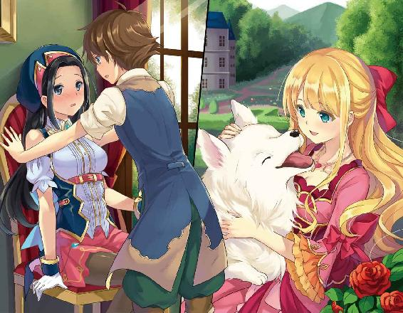
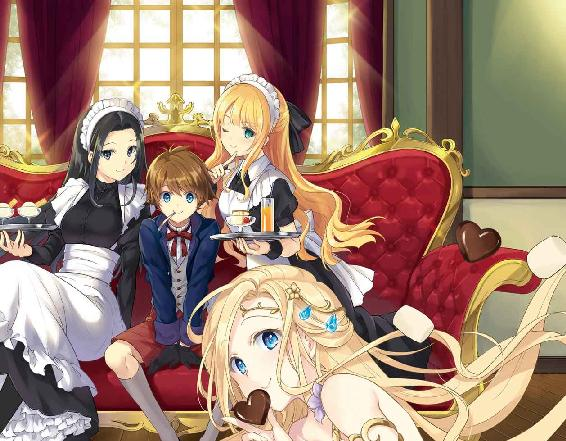
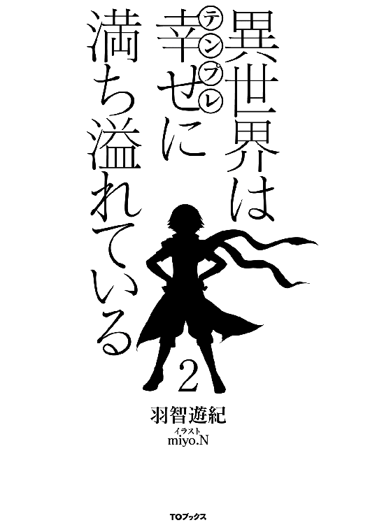
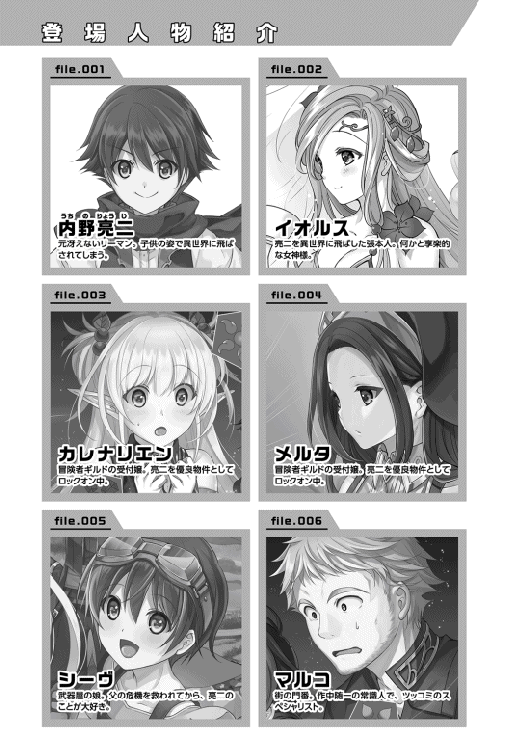
皆さん！ お久しぶりです！ 超絶美少女神様のイオルスです！ 私の事を覚えていますか？ 異世界であるセーフィリアに、一一才で転移させた内野亮二さんを召喚した神さまですよ。
亮二さんには気楽に転移してもらうつもりでした。ですが、タダでは転ばない彼は、私からたくさんのチートな能力をもらっていきました。意気揚々と転成した亮二さんは、キノコのお化けとの激闘を制して門番のマルコさんと出会います。
なんと彼は、門番の仕事をしながらも、Ｂランク冒険者であり、辺境伯であるユーハン＝ストークスマンさんのお兄さんだったのです！ ビックリですね！
さらにギルドでは、私ほどではないですが、美少女エルフのカレナリエンさんと出会います。ギルドではテンプレ三昧！ 魔力測定器破壊に始まり、全属性を持っている事をアピール！ 剣技でもギルド期待の星くんを鎧袖一触してしまいます。鎧袖一触が分からない人はお父さんに聞こうね。
取り敢えず戦士になった亮二さん。その後は、アウレリオさんと出会い、商売の革命を始めます。キノコのお化けの買い取りはどこいったの？ アウレリオさんと盛り上がった後は、冒険者になったのを記念してギルド内で宴会です。私も参加したかった......。
翌日には、これまた私ほどではない、美女のメルタさんに出会います。残念ながら楽しい会話も束の間、またまた私ほどではない活発系美少女のシーヴさんから、指名依頼を受けちゃうのです。
当然、冒険者ランクの低い亮二さんには、マルコさんとカレナリエンさんの二人が付き添います。試練の洞窟と呼ばれる場所に行くまでにも、圧倒的な戦闘力で二人の目を白黒させる亮二さん。
さすがはテンプレの申し子です。そして、試練の洞窟に入って、牛人さんと対決しても圧勝します。そこそこ強いんですけどね。牛人さん......。
圧勝した翌日に魔法が使える事を発見する亮二さん。素敵です。マルコさん達を混乱の渦に落とし込んでから、ドリュグルへの凱旋をします。辺境伯のユーハンさんから、ご褒美として名誉騎士に取り立てられた上に、屋敷までもらっちゃいます。
さらにはコージモさんの腕を私が渡したポーションを使ってさっくりと治して、シーヴさんから抱きつかれてしまいます。
さすがはフラグ建築士です。......他になにかありましたっけ？ ああ！ アウレリオさんと、ポーションを作る約束をしていましたね。
亮二さんは金策と新しい武器が出来て嬉しそうですが、ギルドでは亮二さんを巡ってカレナリエンさんとメルタさんが、正妻の座を巡って争ってますよ？ あっ！ 二人の間で折り合いが付いたようですね。
亮二さんを巡る物語の続きは、ギルドでのカレナリエンさんと亮二さんの会話から始まります。今回は、どんな騒動を見せてくれるんでしょうね？
「カレナリエンさん。家が出来るまでに、少しでも依頼をしときたいんだ。なにか無いかな？」
「どうしたんですか？ 依頼でしたら掲示板に貼ってありますよ？ 受けられそうな依頼が無かったんですか？」
受付の仕事をしていたカレナリエンに、亮二が話しかけてきた。朝に貼った依頼の内容を思い出しながらカレナリエンが答えると、困った顔で亮二が語り出す。
「掲示板を見たんだけど、俺が受けられそうなのが無いんだよ。受領人数三名以上って書いてあるのがほとんどだから」
「私達と組む前に、仮パーティーを組んでもいいのでは？」
ソロの依頼が無いとの台詞に首を傾げながらカレナリエンが答えると、亮二は小さな声で呟いた。
「だって、初めてのパーティーを組むなら、カレナリエンとがいい」
「もう！ そんな事を言われたらドキドキするじゃないですか」
独り言を聞き逃さなかったカレナリエンが照れたように冗談交じりに伝えると、亮二は少し恥ずかしそうな顔で答える。
「聞こえちゃった？ 聞こえないように小声で言ったのに」
「エルフの聴力を侮ってはいけませんよ。でも嬉しいですね。そこまで私の事を思ってくれてるなんて」
「仕方がないじゃん。カレナリエンさんが可愛すぎるから駄目なんだよ」
二人でイチャイチャしながら話が別の方向に流れそうになっていると、カレナリエンの背後からバインダーの様な物が現れ、綺麗な角度で彼女の後頭部に吸い込まれていった。
「いったぁい！ 誰！ なにするのよ！ えっ？ メ、メルタ？」
涙目になりながらカレナリエンが振り向くと、そこには怒りの形相でメルタが仁王立ちしていた。メルタは笑顔を浮かべているが目は全く笑っていない。あまりの迫力に二人は硬直する。
「おはようございます。リョージさん。今日もいい天気ですね。なにか依頼を受けに来られたのですか？」
「お、お、おはようございます。メルタさん」
思わず惚れそうなほど爽やかな笑顔でメルタに挨拶された亮二だったが、最初のバインダー攻撃を見ていたため、返事は震え声になっていた。
「リョージさん。あまり感心しませんね。ギルドは仕事を受ける所であって、女性を口説く場所ではないんですよ？ あまり目に余る状態だと、注意しないといけませんので気をつけて下さいね」
後頭部の痛みと、メルタの憤怒の表情に固まっていたカレナリエンだったが、復活すると抗議の声を上げる。
「ちょっと！ 酷いじゃない！ いきなりバインダーで叩かないでよ！」
「あっ、こっちの世界でもバインダーなんだ」
素朴な感想を呟いている亮二からは見えないように冷酷な目を向けると、メルタはカレナリエンにだけ聞こえるように言い放つ。
「今度、抜け駆けしたら分かってるわよね？」
「も、モチロン分かってるわよ。だからそんなに怒らないでよ。ちゃんと仕事するから」
恐怖に顔を引き攣らせながらコクコクと頷いたカレナリエンは、亮二が受諾出来そうな依頼を探し始めた。
「取り敢えず、誰も受けてくれなさそうで、ソロでも出来る依頼を持ってきたんですが......」
一〇分ほどで戻ってきたカレナリエンの手には、四つの依頼書が握られていた。
・迷い猫の捜索
・鉄鉱石の運搬
・買い物補助
・きのこお化け討伐
「まずは迷い猫の捜索なんかどうですかね？」
「全部！ 全部やるから受領手続きをお願いします！」
「え？ 依頼の詳細を確認しなくてもいいんですか？」
「大丈夫！ 一週間で終わらせるよ！」
カレナリエンは亮二なら大丈夫だと判断すると、受領手続きを行う。
「これで受領手続きは完了です。依頼を受領されましたので、証明書に依頼が表示されています。依頼が完了されたら依頼者かギルドに報告をお願いします。細かな情報は、こちらの羊皮紙を見て下さいね」
手続きが終わったカレナリエンが羊皮紙を手渡しながら小さな声で「頑張ってね」と伝えてきた。亮二は笑顔で受け取ると、元気よくギルドから飛び出した。
猫探しの依頼を出していたのは年老いた女性で、三年前から飼い始めた猫が三日前から帰ってきておらず、心配なので探して欲しいとの事だった。
「すぐに連れてくるから安心して待っててよ、おばあちゃん」
明るく伝えながら、猫の特徴である「黒猫で、尻尾の先だけは白いオス猫」との情報を聞いた亮二は、依頼人の家を出てすぐにインタフェースで地図を出すと索敵範囲を一キロメートルにして検索を始めた。
「黒猫で検索！ おぉ、多過ぎる。じゃあ、尻尾の先が白い黒猫だと？ おっ！ 五件ヒットしたぞ！」
索敵に引っかかった近くの地区から探索を開始した亮二は四件目の場所に来ていた。そこはスラム街の一角にある大きな小屋であり、小屋の前ではスラム街には不釣り合いな装備を着けた男二人が警戒するように見張っていた。
「えっ？ 滅茶苦茶テンプレ的に怪しいんだけど？」
亮二は気配を消しながら、男達に向かってゆっくりとした動作で近付くと、子供らしい口調で話しかける。
「こんにちは！ いい天気だね！」
笑顔で話しかけてきた亮二を見て、呆気に取られた様子だったが、自分の仕事を思い出したのか、男達は威嚇するように凄んできた。
「なんだ？ お前は？ ここはガキの来る所じゃねえ！ さっさとどっかに行きやがれ！」
男達にとって不幸だったのは、先日のパレードを見ていなかった事であろう。遠目から少しでもパレードを見ていたら、目の前の子供がドリュグルの英雄と呼ばれた、少年だと気付けただろう。
「こんな言葉を知ってる？ 油断大敵って」
完全に油断していた男達は、両手に雷属性を纏わせた亮二の動きに反応出来ず、なにが起こったか理解出来ないまま、崩れ落ちる様に倒れた。
「死んでないから大丈夫！ 不意打ちはごめんね」
二人が気絶したのを確認すると、人目につかない場所に移動させて縛り上げた。誰も扉から出てこない事と、周りに人の気配が無いのを確認した亮二は、玄関口の前に静かに立つと、検索範囲を五メートルに絞って小屋の中を調べ始める。
「玄関を入って、大きい部屋に人が五名と、動物が二匹。奥の部屋には三〇匹近くがいるな。五人くらいならなんとかなるか？ よし！ お邪魔しまっす！」
蹴り飛ばす勢いで扉を開けた亮二が、小屋の中に突入する。
「誰だ？ テメエは！」
「迷い猫を探してるんだ。可愛い黒猫で、尻尾の先が白いんだけど知らない？」
突然、突入してきた亮二に男達は叫びながら、掴みかかかろうとした。亮二は男の手を軽く掴むと、雷属性を使って一人を気絶させる。もう一人には鳩尾を殴りつけて行動不能とした。子供と思って油断していた男達だったが、亮二の攻撃力を目の当たりにすると、二名が無言で抜剣して、左右に分かれ時間差で襲いかかってきた。
「おぉ！ やるね！」
右側の男から繰り出された剣を軽く受け流し、亮二は左側の男に対して少し背を向ける。隙が出来たと感じた男は、上段から渾身の一撃を打ち下ろした。
「なっ！」
勝利を確信していた男は、亮二を切り裂くどころか、体に触れる直前で自分の剣が止まっているのを見て、驚愕で目を見開く。
不可視の盾形ガントレットで攻撃を受け流した亮二は、雷属性を纏わせた左手で顔面を殴りつけた。
「なんで、そんなにデタラメに強いんだよ！」
あまりの理不尽な強さに男が叫び声を上げる。亮二は男の言葉に首を軽く傾げたが、爽やかな笑顔で言い放った。
「ノリと勢い！」
亮二の言葉に反応する間も無く、ミスリルの剣を縦横無尽に振るわれた男は、翻弄されつつ壁際まで追い詰められると、最後は剣を叩き折られて喉元に剣先を突きつけられる。自分との実力差を理解した男は、腰が抜けたようにへたり込むと、戦意を喪失して折れた剣を手放した。
「残ったのはおじさんだけだけど、どうする？」
一連の戦闘を息一つ乱さずに終わらせた亮二は、呆然としている最後の男に話しかける。最初は呆然としていた男だったが、状況を理解すると真っ赤な顔で叫ぶ。
「貴様、リョージだな！ 儂が誰だか分かっての狼藉か！ マーク！ なにをしておる！ 早く来い！」
我に返った男の叫び声に驚きながら、マークの名前に心当たりがあったので答える。
「もしかして、玄関口にいた男の人を呼んでる？」
「そうだ！ いくら貴様がユーハンお気に入りの冒険者でも、所詮はＨランクではないか！ 牛人を倒したのも作り話だろう。儂の息子のマークにかかれば、貴様なんぞ一撃だ！ あやつはＤランク冒険者だからな！」
つばを飛ばして叫んでいる男に、亮二は申し訳なさそうにしつつ答えた。
「ゴメン。マークって人なら、多分あっちでお休み中」
「は？」
「だからお休み中だよ。大丈夫！ 殺してないから！ ちょっと、気絶させて身ぐるみを剥いで、転がしてるだけだから！」
「お終いだ。満を持しての計画が......。こんな所で阻止されるとは......。儂が築いた地位も名誉も終わりだ......」
あまりにも軽い亮二の説明で全てを悟った男は、力が抜けるように膝をつくと、呆然とした様子で虚ろに呟き続けた。
スラム街の一角にある小屋の中で、亮二は考え込んでいた。
「それにしてもどうすっかな。こいつら？ このまま放置するのも駄目だろうしな。取り敢えず外の二人も中に入れとくか」
人目の付かない場所に転がしていた二人を小屋の中に入れ、イオルスにもらったロープを取り出してグルグル巻きにしてみた。
「後は念のために、固めておくか」
亮二は五人を眺めていたがロープだけでは心許ないと感じ、土属性魔法を発動させると、各自の両足をしっかりと固める。
「よし、これで一安心だな。じゃあ、黒猫さんを探そうかね」
亮二は部屋の隅で震えている白と黒の二匹の犬に近づくと、手を差し伸べてみた。最初は威嚇の唸り声を上げていた二匹だったが、亮二がストレージから生肉を取り出して与えると、一匹が警戒しながらも一心不乱に食べ始める。それを見た残りの一匹も、物凄い勢いで生肉を食べ始め、しっぽを振りながら追加を求めるように吠えた。
「分かったよ。たくさん出しておくから、そこで大人しく食べといてくれよ」
犬の催促に亮二は笑顔でストレージから肉を取り出すと、奥の部屋への扉を開いて中に入った。中には檻に入れられている犬や猫などが大量におり、一匹ずつ確認していくと、震えている目的の猫を見付けた。
「いた！ やっと見付けたよ。おばあちゃん家に、連れて行ってやるからな」
檻に入れられている黒猫を取り出すと、亮二は優しく背中を撫でた。怯えた様子の黒猫だったが、背中を撫でられている内に緊張が解けたのか、やがて目をつぶって喉をゴロゴロと鳴らし始めた。
黒猫を届けた亮二に、依頼人の年老いた女性は何度もお礼を言った。依頼料とは別に、お礼を渡そうとするのを断ると亮二は署名をもらう。そして依頼完了と動物解放に、縛っている男達の対応を頼むために、その足でギルドに向かった。
ギルドの扉をくぐると、いつもとは違う喧騒に包まれている事を疑問に思う。普段は酒を飲みながら陽気に騒いでいる冒険者が、完全装備で指示を飛ばしているのである。
「どうしたの？ あっ！ カレナリエンさん。なにか物々しいけど？」
「リョージさん！ 探しに行こうと思っていたんですよ！」
焦った表情を浮かべていたカレナリエンは、亮二の顔を見ると安心したように、大きなため息を吐いた。
「なにかあったの？」
「ドリュグルの街を訪問している姫様の犬が、何者かに連れ去られたんです」
「へぇ。この物々しさは、ギルドからの緊急依頼が出た感じ？」
「そうなんです！ 早く対処しないと大変な事になります！」
続いてカレナリエンから、連れ去られた犬の特徴を聞くと亮二は首を傾げながら確認する。
「ねえ。カレナリエンさん。その犬って、大型で白色のオスなんだよね？ もしかして、人懐っこかったりする？ 肉が好きとか？」
「そうなんです。人懐っこい性格が災いして、連れ去られてしまったんで......。」
亮二の口調にカレナリエンが同意しながら話を続けようとすると、亮二が爆弾を投下する。
「その犬の場所知ってる」
「そうですか。知ってるんですか。そうですよね。え？ えっ！ ええ！ 場所を知ってると言いましたか！」
亮二の何気ない答えに、カレナリエンは驚きの声を上げる中、全員の視線が亮二に集中した。一同の視線に気付かず、カレナリエンは亮二の胸ぐらを掴む勢いで問い詰める。
「それで！ リョージさん！ お犬様！ お犬様はどこですか！」
「いや......。お犬様って。ちょっとは落ち着こうか」
「落ち着いている場合じゃないんですよ！ ドリュグルの街で姫様の犬が拉致されて、行方不明なんですよ！ ユーハンへの格好の攻撃材料じゃないですか！ 傷を最小限に抑えるため！ 一刻でも早く、救出する必要があるんですよ！」
カレナリエンの剣幕に押された亮二はコクコク頷くと、その場にいた冒険者達を引き連れて、スラム街の一角にある小屋に案内した。
「えっ？ エーランド＝エイセル様？ それにマーク？ なんで彼らは、ロープで縛られているんですか？」
カレナリエンの目に入ってきたのは、車座になってロープで縛られ、両足には石で出来た枷が掛けられている男五人組であった。
「知り合いなの？」
「あまり嬉しい知り合いではないですけどね。エーランド＝エイセル様からはずっと妾になれって言われてて、マークもちょっかいをかけてきてたんですよ」
ブツブツと何事かを呟いていたエーランド＝エイセルだったが、カレナリエンの声でようやく自分たちが多人数に囲まれている事に気付いたのか、怒鳴り始めた。
「おい！ 誰をロープで縛っているか分かってるんだろうな！ ドリュグル前領主の従兄弟である儂にこんな事をしておいて、無事で済むと思うなよ。リョージ！ 貴様だけは絶対に許さん！ いくらユーハンのお気に入りとは言え、儂らに手をかけた事を後悔させてやる！」
エーランドの叫び声を聞いて、牛人討伐の恩賞をもらう時に嘲笑を浴びせながら絡んできた男を亮二は思い出した。
「あっ！ 恩賞の時に、意味不明な事を叫んでたオッサンじゃん！」
「誰がオッサンか！ この礼儀知らずが！」
「それまでです！」
エーランドが更に大声を上げようとした時、周囲を圧倒するような凛とした声が小屋に響き渡った。スラム街の一角には似つかわしくない美声の主を探して、小屋の中にいた一同は視線を玄関に向けた。その先にいた眼光鋭い一人の女性が勢い良く中に入ってくる。
「私の白雪はどこです！」
亮二は一歩前出ると、部屋の一角を指さした。女性が指先の方へと視線を向けると、そこには一心不乱に肉をかじっていた白い大型犬がいた。犬は女性を見ると、嬉しそうに吠え声を上げ、飛びかかるようにして彼女にじゃれつき始めた。
「貴様が姫様の白雪を救出したのか？ もちろん怪我一つなく無事に助けたであ......」
「だまりなさい！」
亮二に対して、高圧的な詰問口調で話しかけてきた若い騎士を、遮る様に叱責すると、女性は亮二に向き直り上から下まで眺めた後で話しかけてきた。
「貴方が白雪を？」
若い騎士から姫様と言われた女性に対して、亮二は言葉を選びながら説明を始めた。
「はい。私が姫様の白雪を救出させて頂きました。ですが、白雪が姫様のご友人とは知らず、勝手に食事を与えてしまった事に謝罪を申し上げます」
（姫様が飼っている犬だもんな。こういった高貴な人が飼っている動物って、人間と同じ扱いが良いんだよな？ スキルの礼節が自動発動してくれるから助かるわ）
跪きながらそう答えた亮二に、気分よくした姫様は鷹揚に頷きながら尋ねる。
「名前を聞いておりませんでした。その方の名は？」
「はっ！ 私の名はリョージ・ウチノと申します。試練の洞窟で牛人を打ち取り、辺境伯ユーハン様より、名誉騎士の称号を授かっております」
「まぁ！ 貴方がドリュグルの英雄のリョージ様ですか！ 私の憧れの英雄が、白雪を助けて下さったなんて！ まさにイオルス神のお導きですわ！ やはり私達は会うべくして会う運命だったのですよ！」
亮二が答えた瞬間、女性の凛とした姿は鳴りを潜め、少女のように頬を染めると、勢い良く亮二の手を握った。
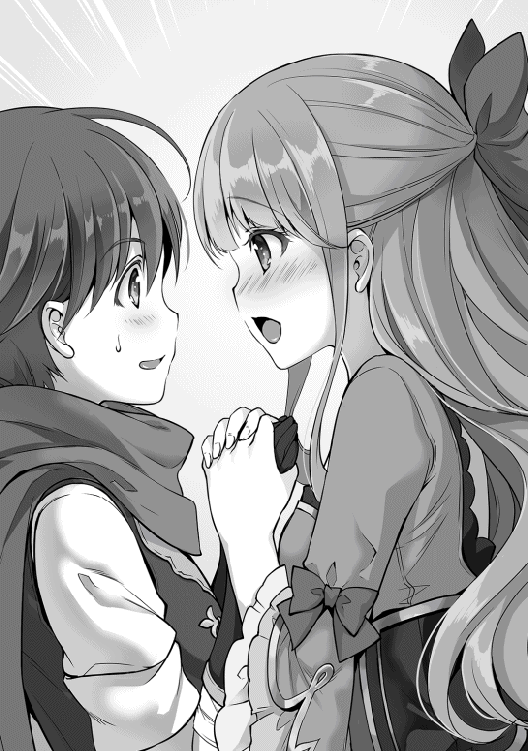
「エレナ姫！ 周りの目をお考え下さい！ ドリュグルの英雄である、リョージさんに会えて嬉しいのは分かります。ですが、もう少し落ち着いて下さい。リョージさんも困ってますよ」
「カレナの言うとおりね。こほん。貴方の献身に、褒美を与えます。使者を立てるので、楽しみにしておきなさい」
二人の間に入って、握っていた手を離す事に成功したカレナリエンは亮二の耳元で囁く。
「姫様の名前は当然知りませんよね？ 彼女の名前は、エレナ＝サンドストレム。王位継承順位は八位ですよ」
亮二とエレナの話し合いが一段落し、カレナリエンの指示の下、囚われていた動物たちの解放と、拘束されている五名の尋問が行われた。その結果、今回の黒幕がエーランドである事。ドリュグルに訪問中のエレナの飼い犬を誘拐する事で、警備不備の責任でユーハンを失脚させようとしていた事が判明した。
エーランドの誤算は、誘拐を依頼した素行の悪い冒険者達が、一匹だけでは割に合わないと考え、他からも動物を攫って売り払おうとした事であろう。お陰で亮二を呼びこむ事になってしまったからだ。
「そんなくだらない事のために、私の白雪を誘拐したと言うのですか！」
一連の騒動を聞いたエレナの怒りはかなりのもので、今回の騒動は反逆罪を視野に入れて調査を行い、他にも余罪を調べる為に王都にエーランドを連行する事となった。
息子であるマークは事情を知らなかったが、日頃の素行が悪かった為誰からも擁護されず、親子共々裁判を待つ身となった。
「それにしても、リョージ様は素晴らしい肉をお持ちなんですね。白雪がこんなに勢い良く食事をするのを、見た事がありません」
「そうなんですか？ 特別な所から頂いた肉ですので、美味しい事は間違いないと思いますよ」
エレナの言葉に気分を良くした亮二は、ストレージから追加の肉を取り出すと、白雪の前に置いた。
「特別な所から頂いたお肉ですか？ 亮二様は、色々と楽しいお話をお持ちのようですね。今度ぜひ食事のお誘いをさせてください。白雪も食べて良いのですよ」
目の前に置かれた肉を食べたそうにしながらも、じっと見ている白雪に許可を出し、エレナは亮二に微笑みかけた。
エレナからの食事会の誘いが来た亮二は、珍しくそわそわしながら服装をチェックしていた。とはいっても、普段から着ているミスリル装備に、辺境伯であるユーハンから授与されたマントと名誉騎士の勲章を身に付けただけだったが。
準備を整えながら宿屋の一階に下りると、宿屋の主人が笑顔で話し掛けてきた。
「景気がいい子供だと思っていたら、ドリュグルの英雄とはね。夜遅くに来たお前さんを、無下に扱わなくて本当に良かったよ」
「いや。こっちも本当に助かったよ。ここが空いてなかったら野宿決定だったから」
「そう言えば、屋敷をもらったんだよな？ ここには、いつまでいるつもりなんだい？」
「一週間位で準備が整うと文官さんが言っていたから、泊まるのはあと五日間だね。あっ！ 一ヶ月泊まるって言っといて反故にするんだから、先払いしているお金は払い戻しをしなくていいからね」
亮二の気遣いに、宿屋の主人は苦笑を浮かべる。
「じゃあ。お言葉に甘えてありがたくもらっとくよ。こっちとしたら、ドリュグルの英雄が泊まった宿と宣伝出来るだけでも、客が押し寄せてくるだろうから、笑いが止まらないんだけどね。朝夕と、今月末まで無料にしとくから食事だけでもしに来てくれよ」
「おぉ！ それは嬉しいかも。屋敷をもらっても一人で住む事になるから、食事の準備が面倒くさかったんだよね」
「お？ カレナリエンと、一緒に住むんじゃないのか？」
からかう様子の宿屋の主人に、亮二は難しい顔をして答える。
「若い男女が一つ屋根の下で暮らすって、簡単にしちゃ駄目だと思うんだよね」
「お、おう。子供のくせに、難しい事を考えてるんだな。だったら、メイドを雇うのはどうだい？」
「メイドさん？ ほう。メイドさんね」
メイドという言葉に喰い付いた亮二に、宿屋の主人は仲間を見付けたと思ったのか、喜びを全面に出し、メイドを雇う為の必要経費や、注意事項を満面の笑みを浮かべながら説明を始めた。
「あ、あの？ リョージ様、お待たせいたしました」
恐る恐るといった様子で御者に声を掛けられて、亮二は初めて宿屋の主人と、メイドについて熱く話し込んでしまっていた事に気付いた。淹れたての熱い飲み物が完全に冷めきるくらいの時間は優に経っていた。
「リョージ。今日ほど、熱く白熱した語り合いは初めてだ。ここまでメイドへの造詣が深い人間がいるとは思わなかったぞ」
「俺も貴方ほど、博学かつメイドへの慈愛に満ち溢れた人物に会えるとは思わなかった。ぜひとも、第二回を開催しようじゃないか」
亮二と店主は、熱く握手を交わすと力強く頷きあった。唖然としている御者に、亮二は軽く髪をかき上げながら話しかける。
「待たせてすまなかったね。実に素晴らしい語り合いだったんだよ。君が待ってくれていたお陰で、第二回を開催する事も決まった。では、エレナ姫の元に向かいましょうか」
少しテンションがおかしい亮二に首を傾げながらも、御者は自分の仕事を思い出し、客人である亮二を馬車に乗せると、エレナ姫が待つ辺境伯ユーハンの館に向かった。
「本日はお招きに預かり恐悦至極に存じ上げます。姫様に玄関まで迎えて頂けるとは。本日の事は子々孫々に語り伝えて参ります」
亮二が戸口に立つと、入り口にはエレナやマルコ、カレナリエンが正装で待ち受けていた。亮二の礼儀に沿った挨拶を受けたエレナ姫は、頬を膨らませて軽く抗議する。
「もう、リョージ様！ そんな堅苦しい挨拶は抜きにして下さい。今日は王家のエレナとして開催する晩餐会ではなく、白雪を救ってくださった友人をおもてなしする気楽な食事会なんですよ！」
「分かりました、エレナ姫。じゃあ、気楽にさせてもらいますね」
「でも、羽目は外し過ぎない様に。十分に気を付けてくれ。お前の粗相で、ユーハンが処罰されるとかは勘弁してくれよ」
エレナ姫の抗議に、亮二が答えていると、マルコが横から釘を刺してきた。
「当たり前じゃん！ マルコじゃあるまいし、冒険者と飲み比べをして負けそうだからって、暴れたりしないぞ。それに殴り合いを始めたり、酒場の看板娘をエロ顔で口説いたりもしない！」
「うぉい！ 姫様の前でなんて事を言うんだよ！ あん時は、軽いノリと酒の勢いで弾けただけじゃねえか！」
「へぇ。マルコは、あの場でそんなコトしてたの？ これは報告が必要ね」
マルコはカレナリエンに冷たく見下され、一瞬で顔色を赤から青へと変える。すぐさま言い訳を始めるマルコを笑いながら、一同は食堂に向かった。
「白雪が無事だったのは、リョージ様のお陰です。それにユーハン卿やマルコにカレナ。あなた達が迅速に動いてくれたので、私は落ち着いた気持ちで待ち続ける事が出来ました」
エレナの挨拶を受けて、亮二やマルコ、カレナリエンは微笑んで頷いたが、ユーハンだけは厳しい顔で頭を下げた。
「こちらの不手際で白雪を危険な目に遭わせたにもかかわらず、心温まるお言葉を頂き恐縮です」
「気になさらないで下さい。白雪は無事だったんですから。それでよしとしませんか？ お陰で、リョージ様と縁も出来ましたし」
エレナがそうユーハンに言葉を掛けると、ユーハンはようやくホッとした表情を浮かべた。
食事会は和やかな空気の中で進んでいき、メインディッシュの頃には、会話は試練の洞窟での牛人との一騎打ちの話へと移っていた。
「リョージ様が牛人を倒された時に、駐屯軍はなにをしていたんですか？ リョージ様一人に牛人を対応させるなんて、あんまりじゃないですか？」
「いえいえ。彼らが他の魔物を押さえてくれていたので、牛人と一騎打ちが出来たのです。一人でやり過ぎたのか、全てが終わった後は、カレナリエンさんから物凄い説教を受けました。それが一番恐ろしかったですね」
「当たり前でしょ！ 聞いてよエレナ！ リョージさんは一人で魔物の群れに突っ込むし、牛人と一騎打ちを勝手に始めるのよ！ こっちの心配なんて、気にもしないんだから！」
説教を受けた事も含めて楽しそうに説明する亮二に、カレナリエンが真っ赤な顔で抗議する。二人のやり取りを見ながら、亮二は不思議に思った事を尋ねた。
「さっきから気になってたんだけど、カレナリエンさんとエレナ姫はお友達なの？」
「私が小さい頃は、魔術の講師と護衛、そして友達も兼ねてカレナが一緒にいてくれたんです。最近は、お互いそれぞれの仕事に専念しているので、一緒にいる機会は減りましたけどね」
「それだけ、自分たちの仕事に責任感が出てきたって事でしょ？」
少し寂しそうに話すエレナに、カレナリエンは笑顔で言うとワインに口をつけた。そんな様子を眺めていた亮二は、静かに食事をしているマルコに声をかける。
「あれ？ そう言えば、全く存在感が無いけど、マルコはどっかに行ってたの？」
「なんで、急に俺に話し掛けてるんだよ！ 飯くらいユックリ食わせろや！」
「素晴らしく切れのあるツッコミですな、マルコさん。俺の中で、君はいつも輝いているよ」
「お前の中での俺の立ち位置を、ジックリと聞きたいわ」
亮二とマルコが掛け合い漫才をしながら食事を楽しんでいると、食堂の扉が勢い良く開いて女性が入ってきた。
「げっ！ ナターシャ。な、なんでここに？」
「『なんでここに？』じゃないでしょ！ もうすぐ出産だから、ユーハンの所に来るって言ったじゃない。エレナ姫がドリュグルの英雄と食事会をすると聞いたから来たのよ！ さっき、カレナから浮気したって聞いたわよ。一〇秒あげるから死ぬ気で言い訳を考えなさい」
突然入ってきたナターシャに、マルコは慌てて逃走を図ろうとした。だが、ユーハンの指示を受けた直属護衛騎士達が、逃げ出さないように周りを取り囲む。退路を断たれたマルコは、青い顔をしながら騎士達を睨むとナターシャと向き合った。
「げ、元気そうだな、ナターシャ。お腹の具合はどうだ？」
「ええ、カレナから報告を聞くまでは、元気いっぱいだったのよ。まさか、愛する旦那がお酒を飲んで、喧嘩したり、ましてや看板娘を口説いたりしてるなんて思わないじゃない？ だから、怒りで我を忘れても仕方がないと思うの。そうでしょ？ マルコ？」
「酒って本当に恐ろしいよな。喧嘩は冒険者の日常だし、看板娘に声をかけたのは酔っていただけなんだよ！ 今回はエレナ姫の御前でもあるから、無罪放免って事で......」
マルコの必死の言い訳を笑顔で受け流すナターシャの顔は、生気に満ち溢れていた。それに気付いたマルコの心は恐怖のどん底に至る。
「そんなの関係ないよね？ この浮気者！」
最高の笑顔と称されても問題ない表情で、夫の左頬を打ち抜いたナターシャは、錐揉み回転しながら吹っ飛んでいくマルコを、清々しい顔で見送ったのだった。
「初めまして、リョージ君。マルコがいつもお世話になってます」
「は、初めまして。リョージ・ウチノです。マルコさんには、ドリュグルの街に来てからお世話になってます！」
サッパリとした素晴らしい笑顔で挨拶をされ、床の上でピクリとも動かないマルコに視線を一瞬だけ向けると、怯えたかのように亮二は挨拶を返した。
（この人、おっかねぇよ。それにしても素晴らしい右ストレートだったな）
亮二が硬直しているのを見て、説明が足りないと感じたナターシャは自己紹介を始める。
「ナターシャ＝ストークマンよ。別名、そこで幸せそうに寝ているマルコの奥さんとも言うわよ。マルコや、カレナと同じ冒険者で、ちょっと前までは、パーティーを組んでいたの。もうすぐ子供が生まれるから、一時休養をしてるんだけどね」
「一時休養じゃなくて引退だからね！ ナターシャは、これから出産育児があるから、私達と冒険者をやってる場合じゃないんだからね！」
「え？ カレナリエンさんとパーティーを組んでいたの？ それと、ナターシャさんの赤ちゃんの父親って誰？」
「俺に決まってるだろ！ ナターシャが言っただろ！ 『マルコの奥さん』だって！」
気絶状態だったマルコが、起き上がりながらツッコミを入れる。
「あら？ 起きたの？」
「なんで、そんなに残念そうなんだよ。旦那が回復したんだから喜べよ」
「『なんで残念そうなんだよ』ですって？ もうすぐ赤ちゃんが生まれて父親になる人が、看板娘を口説いて浮気をしてたからよ。リョージ君は、こんな大人になっちゃ駄目よ？」
不満そうな顔のマルコを一刀両断したナターシャに、亮二は爽やかに言い切る。
「大丈夫ですよ！ マルコじゃあるまいし、看板娘を口説いたりするような大人にはなりません！」
「そうね、マルコじゃあるまいし、リョージ君を信じるわ。もし、カレナが悲しむような事をしたら、私の拳が黙ってないわよ？」
ナターシャが握りしめた拳を見せながら笑顔で伝えると、亮二となぜかマルコも同時に頷いた。その様子を見て、エレナは楽しそうに、ユーハンは清々しい表情で、カレナリエンは困り顔ながらも嬉しそうに、三者三様の表情を浮かべていた。
「では、食事会は、これで終わりとさせて頂きます。この後はサロンでお茶を飲みましょう」
「えっ！ 終わり？ デザートは？」
片付けを始めようとした給仕達は、亮二の悲鳴に困惑の表情を浮かべた。
「リョージ様。なにか本日の食事会で不満な点が？」
「とんでもありません。不満はないんですよ。ただ、デザートは無いのかなと、思った次第でして......」
「でざーと？ ですか？ リョージ様がいらしたニホン国では、食事の最後にでざーとが出てくるのですか？ どのような物かを言って頂ければ、用意させますが？」
申し訳なさそうな顔をするエレナに、亮二は思いつく限りのデザートについて熱く語った。
「なるほど。リョージ様の国では、食事の後にお菓子を食べるんですね。けえきや、あいすくりーむなど聞いた事がありません」
デザートが甘くて美味しいと聞かされた女性陣は、眼を輝かせて亮二に詰め寄り、怒涛のごとく質問を浴びせ始める。
「ところでリョージ様は、でざーとを作れるのですか？ えっ？ 作れる！ だったら、作って頂く事は出来ますよね？」
「色々と作れる？ リョージさん！ すぐに厨房に行きましょう！」
「私も、でざーとに興味があるわ。まずは冷たいお菓子と聞いた、あいすくりーむを食べてみたい。え？ 身体を冷やすな？ 少しくらいだったら大丈夫よ！ マルコは心配性なんだから」
女性陣から食べたいとの大合唱に、女子の甘いもの好きは、どの世界でも同じだなと感じつつ、亮二はデザートを作る為に立ち上がった。
「分かりました。そこまで言われたなら、アイスクリームを作りましょう。カレナリエンさん、厨房に案内してもらえますか？」
「もちろん！ ユーハンお抱えの、料理長を紹介しますよ！」
女性達から歓声が起こり、カレナリエンに案内されて亮二は厨房に向かった。
「おい！ 小僧！ お前が、リョージってやつか」
給仕から先に伝言を聞いていた料理長は、険しい顔で亮二を睨みつけてきた。
「ああ。俺が、食後のデザートを作りに来たリョージだよ」
「ふざけるな！ お前みたいなガキになにが出来る。さっさと帰れ！」
怒り心頭の料理長に亮二が困っていると、カレナリエンが料理長に手を合わせた。
「ねえ、料理長。お願いだから、リョージさんに厨房を貸してくれないかな？」
「いくら、カレナリエンちゃんのお願いでも駄目だ！ ここは俺の戦場だ。訳の分からない奴に貸す事は出来ない」
頑なに拒み続ける料理長に、カレナリエンもお手上げ状態になっていた。そんな様子を眺めていた亮二は、小さく「テンプレきた！」と呟きながら、料理長に話しかける。
「じゃあ、料理長さん。俺がデザートを作るから、それで判定してよ。もし駄目だったら、今日の料理に掛かった費用は全部払うから」
亮二の提案は、料理長だけでなく、周りにいたカレナリエンや給仕、料理スタッフにも驚きを持って受け入れられた。今日の料理に掛かった費用を計算しながら、料理長は人の悪い笑顔を浮かべる。
「よし！ そこまで言うなら試してやろう。あいすくりーむとやらを食べてやるから、作ってみろ。だが、ここにいるスタッフは誰も使うなよ。可哀想だから調理器具や材料は貸してやる」
「じゃあ、牛乳と生クリームと卵とハチミツを下さい」
「なまくりーむ？ そんなものねえよ」
料理長の目を見て嘘はついていない事を確認し、生クリーム以外の材料を受け取ると調理台に向かった。亮二は生クリームを使ったアイスクリームは諦め、卵と牛乳で出来る簡易アイスクリームに切り替える事にした。
「卵黄とハチミツを混ぜるだろ。そして、温めた牛乳を入れながらかき混ぜて、とろみが付いたらメレンゲ状の卵白を入れて......。後はこれを弱めの氷属性魔法で冷やしていけば完成っと！」
「リョージさん。これがあいすくりーむなんですか？」
料理長とカレナリエンは徐々に固まっていく牛乳を驚愕の表情で見ていたが、ボールからスプーンで掬われた物体を恐る恐る受け取った。
「冷たいから気をつけてね」
亮二の忠告に首を傾げつつアイスクリームを口に入れたカレナリエンは、あまりの冷たさに小さく悲鳴を上げた。気を悪くしていないかと彼女は慌てて亮二を見たが、彼の視線はアイスクリームを食べている料理長に釘付けになっていた。
「り、料理長？ なんで泣いてるの？」
「カレナリエンちゃん。俺は料理人になって三〇年になるが、今までなにをやってたんだろうな？ こんな素晴らしい物を知らないなんて！」
感動のあまり涙を流している料理長に、亮二は勝利を確信するとガッツポーズをするのだった。
「お待たせしました」
マルコから亮二と過ごした一週間の話を聞いていた一同は、あまりにも早く亮二が戻ってきた事に驚いていた。亮二達が席を外してから、三〇分ほどしか経っていない。驚きながらも、全員の視線は亮二とカレナリエンの手に持たれている大きな盆に注がれていた。そこには、銀色の器に白い固まりが盛りつけられていた。
「リョージ様？ それが、あいすくりーむなのですか？」
「ええ、その通りです。私の国では、年中食べておりました。本来は夏場の暑い日に食べるのですが、冬であっても部屋を暖かくして食べる者が続出しておりました。そのくらい、国民は熱中していましたよ」
待ちきれない表情で、アイスクリームを凝視しつつ問いかけてきたエレナに、亮二は日本でのアイスクリーム事情を説明した。
「かなり冷たい物ですので、気をつけてお召し上がり下さい」
銀の器に盛られているアイスクリームと亮二が呼んでいる白い固まりは、王宮で様々な物を食べてきた彼女でさえ見た事が無かった。期待と不安の混じった気持ちで、エレナは恐る恐るアイスクリームを口に運んでいく。
「冷たい！ これほど冷たいお菓子があるなんて、知りませんでした！ それになんと優しい甘さでしょう！ リョージ様の国で国民が、年中あいすくりーむを病み付きで食べている気持ちが分かりました！ お願いですから、あいすくりーむの作り方を教えて頂けませんか？ 秘伝になると思いますので、それに見合った報酬は用意させて頂きますから！」
「それほど喜んで頂けたとは嬉しい限りです。作り方をお伝えするのは問題ありませんが、大量の氷が必要になります。それでも構いませんか？」
「ええ！ 問題ありません。料理人を伴って北の別荘まで赴きます。あそこなら万年雪がありますので！ それにしてもあいすくりーむの量が少ないのは残念ですね」
大量に作らなかったため、全員が物足りなさそうな顔をしていた。そうなる事を見越していた亮二は、カレナリエンのお盆から、別の器を取るとそれぞれの前に置いていく。
「皆さん。アイスクリームをお気に召したようですので、こちらも試してみませんか？」
「リョージさん。作るところは見ていたけど、結局なにを作っていたの？ 物凄くプルプルしてるけど？」
「これはプリンです。アイスクリームほど冷たくないので、安心して食べて下さい」
亮二に手渡されたプリンを、アイスクリームよりも恐る恐る口に運んだ四人は、食べた事のない食感と美味しさに、時が止まったように硬直してしまった。あまりにも反応がない四人に、亮二が反応に困って問い掛ける。
「プリンのお味はどうですか？」
「す、すいません！ あまりの美味しさに、意識が飛びそうになりました。これは、神への供物ですか？」
「さっき食べたあいすくりーむも別世界の味だったけど、これはどう表現したらいいの？ ねえ！ 教えてよ！ リョージさん！」
「お腹の子まで喜んでくれているわ！」
「おぉ！ これは普段激務に勤しんでいる、私に対する神からの褒美か！ そう思わないか！ 兄さん！」
「おい！ リョージ！ なんで、俺の分だけ無いんだよ！」
五人からの感想や抗議の声に満足気な表情を浮かべたながら、この世界で食後のデザートが普及する事を確信して亮二は拳を固めた。
「他の料理ってあるのか？」
食事会は無事に終了したのだが、亮二は料理長に捕まっていた。
「料理の簡単な作り方だけで良いんだよね？」
「ああ。料理の可能性を追求するために、俺の残された料理人人生を全て捧げる。まずは簡単な説明だけで作ってみたいんだ」
その言葉に亮二は自分が知っている料理を伝え始める。今まで知らなかった料理の数々に、驚愕の表情を浮かべながらも料理長は必死にメモを取る。その反応を見て、亮二は自分で作った料理や、これまでに食べてきた料理について気分良く喋った。
特に料理長が興味を示したのは牛乳を使った料理で、アイスクリームの他にも生クリームやバターの作り方、ドリアやカルボナーラなどの作り方を聞いていた。亮二としては大まかなレシピを伝えるだけでいいので楽だった。
「俺が作った料理を食べさせて、『旨い！』と言わせてやるからな！」
「期待して待っているよ」
後の話ではあるが、亮二からもらったレシピを元に、料理長は牛乳大使と呼ばれるようになり、ユーハンとタッグを組んで料理を主体とする外交を行った。そのほかにもセーフィリア全土に牛乳を使った料理を広めた偉人として、歴史書に名を記されたのだった。
「後、二〇個か」
亮二はそう呟くと、ストレージに仕舞っていた証明書を取り出し、現在の進捗状況を確認した。
Ｈランク完了済み依頼
・迷い猫の捜索 ×一
・鉄鉱石の運搬 ×五
・買い物補助 ×三
・キノコのお化け討伐 ×二〇
Ｈランク依頼受領中
・鉄鉱石の運搬 ×六
・キノコのお化け討伐 ×一五
「それにしても、ギルドも几帳面だよな。試練の洞窟での功績でランクはスキップするとすると言っていたのに、『最初のランクアップは自力でやってもらいます』だもんな」
ユーハンからの声掛けもあり、亮二の冒険者ランクはＤランクにスキップする予定となっていた。ただ、多大な功績があるとはいえ、いきなりのランクアップでは他への示しがつかず、Ｈランク昇格条件である五〇個の依頼をクリアする条件を出されたのだった。
依頼：鉄鉱石の運搬
亮二は、ドリュグルの街から歩いて二時間ほどの鉱山に来ていた。一回目は道を間違えて森に入ってしまい、キノコのお化けの大量発生に遭遇、あやうくトラウマを作りかけた。さすがに五回目ともなると、道に迷う事も無い。亮二は鉱山の受付で暇そうにしている男性に声を掛けた。
「鉄鉱石の運搬に来たよ」
「おう！ ドリュグルの英雄様に鉄鉱石運びなんてと思ったが、ランクアップの為ならしょうがないな。それにしても、リョージの持ってるアイテムボックスは凄いな。初めて見た時は自分の目を疑ったぞ。『キノコのお化けなら、これくらい入ってても大丈夫！』と言って、大量に出すんだからな！」
「そっちかよ！ 鉄鉱石が物凄い勢いで収納されていく方に驚けよ！」
亮二の叫び声に、受付の男性は嬉しそうに手を叩きながら喜んだ。
「お前さんのツッコミには芸術性を感じるな。あっ、ちなみにもらったキノコのお化けは、嫁さんが物凄く喜んでいたぞ」
男性は笑いながらバインダーを持って集積場まで亮二を連れて行くと、依頼分の説明を始めた。
「今日はここにある分を頼むわ。それにしても、リョージのアイテムボックス様々だよな。山のような鉄鉱石がもの凄い勢いで入っていくからな」
「そう言えば、ギルドの依頼掲示板から鉄鉱石運搬が無くなってたけど、俺のせい？」
「気にしなくても大丈夫だぞ！ 元々、受け手のいない不人気な依頼だったんだよ。リョージが運んでくれたお陰で、ギルドも依頼を受ける冒険者を探す必要も無くなり、俺達も採掘に集中する事が出来るからな」
受付の男性はそう言うと、亮二の肩を叩いて頼んだぞと受付に戻っていった。
「よし！ ストレージ能力全開放！ 俺のフットワークの軽さを見せてやるぜ！」
亮二は勢い良く積み上げられている鉄鉱石を触りながら、片っ端からストレージへの収納を始めた。五〇分ほどで収納が終えた亮二は、受付の男性に終了を伝えると、鉱山の近くにある森に入っていった。
依頼：キノコのお化け討伐
「結局、ギルドの連中からは『キノコを極めし者』って呼ばれるようになったな」
亮二はキノコのお化けを真っ二つにしながら呟いていた。キノコのお化け討伐はＨランクの冒険者にとって、小遣い稼ぎによく利用されている。ギルドからも増殖するキノコお化けの数を間引きする目的で、依頼の受領を推奨されていた。
「よし！ さくっと必要数を狩って終わらせるか」
亮二は勢い良く巣に突入しながら、目に入ったキノコのお化けを次々と討伐していった。
「カレナリエンさん！ 五〇個の依頼を終わらせたよ。褒めて！ ねえ褒めてよ！」
ギルドの受付で嬉しそうに報告してきた亮二を、カレナリエンは呆然と眺めていた。何事かと様子を見に来たメルタも、その内容を聞いて一緒に硬直する。
「......えっ？ 全部終わらせたんですか？」
「大変だったんだよ！ 五〇個の依頼を四日で達成するのは面倒くさい！」
「えぇぇ！ 普通は、一日一個クリアですよ！ 最短記録にしても、凄すぎますよ！ どうする？ ギルドマスターに報告する？」
「そうね。さすがに、リョージさんは紹介しないと駄目だよね？」
「ギルマスきたぁ！」
カレナリエンとメルタとの会話を聞いた亮二は、小さくガッツポーズしながら呟いたのだった。
カレナリエンとメルタに案内されたギルドマスターの執務室は、必要最低限の調度品以外はなにも置いておらず、殺風景な部屋であった。
「ここって本当にギルドマスターの執務室なの？ 書類一つ無いけど？」
「残念ながら、ギルドマスターの執務室なんですよ。もう来ると思うので座って待ってて下さいね」
カレナリエンに席を勧められて待つ事一〇分。いつまで経っても来ないギルドマスターに痺れを切らし、帰ろうとした亮二の耳に、扉の向こう側での激しいやりとりが聞こえてきた。
「どこに行ってたんですか！ リョージさんがずっと待ってるんですよ！」
「闘技場の方に来ると思っていたんだよ」
「だから！ 闘技場じゃなくて、職業適性検査場です！ 脳筋でも、少しは考えてください！」
「脳筋って！ ちょっと、期待の新人と噂に聞くリョージと戦ってみたかっただけじゃないか！」
扉の外の会話を聞きながら、脳筋どころか戦闘狂じゃないだろうかと考えていると、勢い良く扉が開いた。少し驚きながら視線を扉を開いた女性に向ける。そこには、褐色の肌で、背丈は亮二より頭二つ分ほど高く、フルプレートアーマーで左手にはラージシールドを構え、右手にはメイスを握りしめている女性がいた。
「よし！ リョージ、戦うぞ」
「いや、戦わないですよ？」
勢い良く戦いを宣言してきた女性のテンションに辟易しながら、亮二は軽く流すとカレナリエンに向かって話しかける。
「もう帰っていい？」
「駄目に決まってるだろう！ リョージと戦えると聞いたからフル装備で、闘技場で待ってたんだぞ！」
「だから！ 職業適性検査場です！ それにリョージさんと戦えるなんて、一言も言ってません！『新人のリョージさんが凄いので、会ってみませんか？』と言っただけです」
「それが戦えるって意味だろ？」
カレナリエンの言葉に女性は不思議そうな顔で返答する。
「（人の話を聞かないタイプだな。一回だけ付き合って、徹底的にやっておくか）分かりました。では、一回だけお相手させて頂きます。ギルドのランクアップ試験って事で良いですよね？」
「おう！ もちろんだ。俺が試験官をしてやるから、早く闘技場に行こうぜ！」
ギルドマスターの女性は亮二の返事を待たずに、闘技場もとい職業適性検査場に向かって一目散に走っていった。
「リョージさん。良かったのですか？ ギルドマスターは脳筋なだけでなく、かなり強いですよ？」
「大丈夫だよ！ ギルドマスターに怪我はさせないから」
心配そうなカレナリエンに、軽く返答しながら亮二も職業適性検査場に向かった。
「そう言えば、自己紹介してなかったな。クセニア＝ユジャノフだ。ドリュグルの街でギルドマスターをしている。冒険者ランクはＡだ。戦闘能力ならＢランクと言われているリョージの相手には丁度いいだろう」
「リョージ・ウチノです。クセニアさんに『参った』と言わせるだけで試験合格ですよね？」
「おぉ！ 言うね」
「ギルドマスターの勝ちに銀貨一枚」
「じゃあ、俺は銀貨二枚だな」
「モテる男に鉄槌を！」
ランクアップ試験という名で、亮二とクセニアが模擬戦をすると聞いて集まった冒険者達から声援が飛び交った。
「あぁ。急になんで呼ばれたのか分かったわ。俺が審判をすればいいんだな？」
「公平に判断する人がお前以外にいないんだよ。そんな顔するなよ。マルコ」
急に呼び出されたマルコは、なにが起こっているのか理解すると、諦めたような口調で審判を引き受けた。
「よし。じゃあ早速始めるか。クセニア。分かってると思うが手加減しろよ。リョージが怪我したら、カレナリエンとメルタが激怒するぞ」
「なんでその二人が？ リョージはドリュグルに来て一週間も経っていないのに、我がギルドの二枚看板のカレナリエンとメルタを持っていくのか？」
「他にもシーヴって武器屋の娘や、エレナ姫もリョージの虜だぞ。本当に天然の女たらしだよ。こいつは」
マルコがニヤニヤと笑いつつクセニアと語っているのを眺めていた亮二は、マルコの背後を見ながら叫ぶ。
「あっ！ ナターシャさん！」
「じょ、冗談だぞ！ ナターシャ！ リョージをからかうなんてする訳ないだろ！ お前の言いつけ通りに見守ってるぞ！」
マルコの焦り顔を見た亮二は、満面の笑みを浮かべると、爽やかに言い放つ。
「モチロン嘘さ。焦りすぎだろマルコ。ナターシャさんが、こんな所にいる訳ないじゃん」
「お前っ！ ふざけんなよ！ 別にナターシャなんて怖くないからな！」
「今の台詞はナターシャさんに伝えとくから」
「リョージさん。以後、注意しますので、今の台詞は聞かなかった事にしてください」
マルコがいきなり卑屈になった事に笑いを噛み締めつつ、亮二はクセニアに戦闘準備が整った事を伝えた。その様子を見たマルコはクセニアも準備が整っている事を確認すると、説明を始めた。
「いいか、お前ら。これは模擬戦だからな。怪我をしないように、十分に注意しろよ」
両者が通常使っている武器では殺傷力が強すぎるため、亮二はミスリルの剣を木剣に、クセニアはメイスをこん棒に変更していた。お互いが武器の感覚をつかんだのを確認したマルコは、開始を告げる。
「では、始め！」
「私から遠慮なく行かせてもらうよ！」
開始の合図を聞いて、こん棒を握りしめたクセニアが一足飛びで間合いを詰めてきた。バックステップで間合いを開けようとした亮二だったが、それ以上のスピードで距離を詰められ、上段からこん棒の打ち下ろしを受けた。
職業適性検査場全体に響き渡る衝撃音が、見学に来ていた冒険者達の耳に届いた。一瞬で決着したと落胆した冒険者達だったが、亮二の姿に気付き騒然とする。
「おい！ あの一撃を左腕だけで受け止めたぞ！」
「魔道具かなにかか！ ギルドマスターの二つ名でもある『飛竜を砕く者』の一撃を無傷で受け止めたぞ！ だが、あの状態から反撃は出来るのか？」
クセニアの一撃を受け止めた亮二だったが、直後に体重を乗せた連撃が襲って来た。かろうじて不可視の盾形ガントレットで防ぎながら、亮二は反撃の糸口を探す。
（おいおい。なんだよ、この衝撃は。人間の力でこんな衝撃が出せるのか？）
初撃の後の連撃を防がれたクセニアは、一旦間合いを取りつつ、賞賛の表情を浮かべながらこん棒を握り直した。
「やるねぇ。初撃からの連撃を受け止めたのはお前で三人目だよ。やっぱり私の目に狂いはなかった！ さあ！ 今度はお前だぞ！ その身体に秘められた力を、全て私に見せてくれ」
「せっかくのお言葉なんで、全力でいかせてもらうよ！」
亮二は叫びながら木剣を上段に大きく振りかぶると、クセニアとの間合いを詰めて勢い良く振り下ろす。
「なんだい、その大雑把な攻撃は！ 私の事を馬鹿にし......ぬぁ！」
亮二の大振りの一撃をバックステップで躱しながら文句を言いつつ、反撃しようとしたクセニアだったが、振り下ろされたはずの剣が横から襲ってくるのに気付く。慌てて避けようとしたため、体勢を大きく崩しながら後ろに下がった。
クセニアは無理に下がったために、体勢を崩してしまう。その隙を逃す亮二ではなく、さらに畳み掛けるように上下左右と細やかな攻撃を続けた。崩れた体勢をなんとか立て直しつつ、攻撃を躱していたクセニアだったが、一〇合、二〇合と打ち合っていく内に徐々に受けきれなくなる。防戦一方どころか、亮二の攻撃が鎧に当たり始めた。
「だぁ！ ふざっけんな！」
クセニアは大きく叫ぶと、こん棒を亮二に向かって投げつけた。流石に、攻撃の最中に武器を投げつけられた亮二は慌てて木剣で弾こうとする。だが、上手く弾けずに逆に木剣を取り落とし、クセニアとの距離を大きく取った。
「おいおい。クセニア。なんで武器を投げつけてるんだよ。模擬戦において、武器の放棄は負けになるとルールを作ったのはお前だろう？ 審判として、お前の負けを宣言させてもらうぞ」
呆れ顔でのマルコの宣言が聞こえなかったのか、攻撃を受け続けて息が上がり、真っ赤な顔をしているクセニアは亮二に殴りかかった。
「おい！ クセニア！ お前の負けだと言ってるだろ！ 聞こえなかったのか！」
「うるさい！ ここまで一方的にやられたんだ！ Ａランクとしてこのまま引き下がれるか！ 必ずぶっ倒してやる！」
完全に頭に血が上っているクセニアは、攻撃の手を増やしながら亮二に掴み掛かろうとした。そんなクセニアの動きに合わせるように腕を取った亮二は、一本背負いの要領でクセニアを床に叩き付けると、腕で首を絞め上げた。
しばらくは亮二の腕を取り払おうと暴れていたクセニアだったが、一〇秒も経たない内に糸が切れたように動かなくなった。彼女のステータスが気絶状態になった事を確認すると、亮二はゆっくりと立ち上がり、マルコに判定を促した。
「あ、あぁ。そうだな。おい！ クセニア？」
マルコは慌ててクセニアに近寄る。クセニアが呼吸をしている事に安堵すると、見学に来ている冒険者達にも聞こえるように亮二の勝利を宣言した。
「だぁ！ 納得いかねぇ！ もう一回やろうぜ！」
気絶から回復したクセニアの第一声は、亮二との再戦を求めるものだった。
「決着しましたよね？ 最初に一回だけと言ったのを覚えていますか？」
「駄目だ！ 一回じゃ実力が分からないから三回勝負だ！ ほら、さっさと開始位置に移動しろよ」
クセニアから一方的に再戦を要求され、彼女の子供っぽさには呆れつつ、ギルドマスターが相手なので、亮二は仕方なく丁寧な対応をしていた。その様子を見ていたカレナリエンが怒りに満ちた表情で、クセニアに食って掛かる。
「負け犬の分際で悪あがきですか？ 敗者は敗者らしく！ みっともなく！ コソコソと！ 執務室にでも！ 逃げ帰ったら！ どうなんですか！ 誰も止めませんよ？」
「ちょっ。カレナリエン。さっきの脳筋発言の方がマダマシダッタヨ？」
「当たり前です！ ギルドマスターがルールを守れなくてどうするんですか！ 冒険者達の前で範を示すべき者が、怒りに任せてルール破りをしたんですよ！ これを怒らなくて、なにを怒るんですか！」
「すまん。ちょっと身支度を整えてくる。その後でリョージへのランクアップ認定式を行う」
カレナリエンから止めどなく溢れている怒りのオーラに気付いたクセニアは、先ほどまでの勢いが嘘のように大人しくなった。肩を落として更衣室に去って行った様子を鼻息荒く見送ったカレナリエンは、気を取り直すと亮二に話し掛ける。
「本当にリョージさんは凄いですね。『飛竜を砕く者』の二つ名を持つギルドマスターに勝っちゃうなんて！」
「飛竜を砕く者？」
カレナリエンの賞賛を嬉しく受け止めながらもクセニアの二つ名が気になり、亮二はどのような経緯で付いたのかを尋ねた。
「冒険者時代に、ソロで飛竜の討伐をしているんです。その時の必殺技が、さっきリョージさんが受けた初撃からの連続攻撃です。それからは飛竜を専門に討伐をしていたのですが、伝説級の飛竜の時は『倒せなかった』と悔しそうに言ってました」
「飛竜をメイスで砕きまくったから付いた異名か。ひょっとしなくても人間であの攻撃を受け止めたのは俺が初めてとか？」
亮二が恐る恐る口にすると、カレナリエンは少し考えて頷くと真剣な顔で答えた。
「そうですね。『この攻撃を受けて死ななかった飛竜はいない』と言っていました。ですから、人間相手だとリョージさんが初めて防いだ事になるんじゃないですかね？ あんな攻撃を防げるのは王族種だけだと思っていましたよ」
「王族種？」
亮二が首を傾げて呟くと、カレナリエンは頷いて続きを話し始める。
「そうです。有名な所で言えば魔王や竜王、海王とかですかね。最近、魔王は大人しいですが、残りは相変わらず暴れまわってますよ」
「山賊王とか、破壊王もいるんだよね？」
「ご存知でした？ とはいっても、王自体が暴れる事は少なく、下の者が暴れている感じですね。王の下に四天王がいて、その下に将軍や部隊長がいる感じです。王を頂点としたピラミッドを形成しているんですよ」
亮二とカレナリエンが王族種の話で盛り上がっていると、ギルドマスターの正装でクセニアが職業適性検査場に戻ってきた。
「またせたな。では、さっそくリョージのランクアップ認定式を行う。とは言っても、正式の認定式じゃないから適当だけどな。ほれっ！」
「ちょっと雑じゃない？ 放り投げるなんてひどいじゃん！」
「そんな事を気にするんじゃないよ。私に勝ったんだから、もっと大らかにならないと」
負けた事が悔しかったのか、適当な感じで証明書を渡してきたクセニアに、亮二は苦笑しながら受け取ると、Ｄランクになっている事を確認した。集まっていた冒険者達からの視線を感じた亮二は、全員を見渡しながら大声で喜びを爆発させた。
「よし！ ここにいる冒険者諸君！ Ｄランクになった祝いをするぞ！ 今日の夕方に、俺が宿泊している宿屋まで来てくれ！ もちろん飲みたい放題、食べたい放題だ！ 仲間を何人連れてきてくれてもいいが、食事の量には限界があるから多すぎないようにな！」
亮二の話を聞いた冒険者から大歓声が上がる。
「だから、お前の事が大好きなんだよ！」
「前回は、この街にいなかったからな。今回は飲んで食うぞ！」
「一生付いて行くわ！」
「カレナリエンちゃんを横取りした事は許さないからな！」
一通り叫んだ冒険者達は、仲間や知り合いを呼ぶために職業適性検査場から駆け足で去っていった。
「今日の夕方からになってるからよろしく！」
「おい！ いきなり『今日の夕方からよろしく』ってなんだよ？ 全体の九割くらいから話し始めただろ！ 最初から話してくれ！」
亮二の第一声が宿屋の店主に理解されるはずもなく、最初からの説明を求められるのは当然であった。亮二はランクアップした事を伝え、そのお祝いを食堂ですると説明した。
「なるほど。リョージがＤランクになった祝いをするって事だな。そう言えば、お前さんがドリュグルの街に来た時も、ギルドの酒場で宴会をしたんだよな？ 今回も、そっちですればいいだろ？」
「なに言ってんだよ！ メイド同盟の同志が経営する宿屋の売り上げに貢献するのは当たり前だろ！」
宿屋の主人は目を見開くと、無言で手を差し出してきた。亮二は主人の手を握り返して小さく頷くと、自らも準備の為にドリュグルの街に繰り出した。
亮二が向かったのは、ドリュグルの街で食料品を取り扱う店が集まっている地区だ。とりあえず目のついた肉屋に入ると、気さくな感じで店主らしき男性に話しかけた。
「こんにちは！ いい天気だね」
「ああ。いい天気だな。で、なにか用か？ ここは肉屋だぞ？」
「もちろん買い物だよ！ ここにある肉を大量に売って欲しい。あと、料理出来る人も推薦してもらえないかな？」
亮二の言葉に店主は訝しげな視線を送ってくる。
「ああ、肉を売って欲しいのか。当たり前だが金はあるよな？ それに料理人の推薦？ 確かにここは肉屋だから、買い物に来る料理人は何人もいる。だが、見ず知らずのお前に推薦する訳ないだろ？ 信用問題に......ん？ お前、どっかで見た事があるな？」
亮二の顔をまじまじと見つめていた肉屋の店主は、驚きの表情とともに大声で叫んだ。
「ドリュグルの英雄のリョージじゃないか！ お前さんが試練の洞窟で魔物を狩りまくってくれたお陰で、大量の魔物肉が市場に溢れてるからな。いや。褒めてるんだぞ！ 貴重な肉も多くて、大儲けさせてもらったからな。ドリュグルの英雄には大感謝だ。次に討伐依頼を受けたら、俺のとこに持って来てくれよ。ギルドでの買い取りよりも二割増しで買ってやるぞ！ それで、大量の肉購入と料理人の推薦と言っていたが、なにかあるのか？」
急にテンションが上がった店主に、亮二はＤランクアップ祝いをする為に食材調達に来た事。そのための食材調達で店回り第一号がここである事を告げた。話を聞いた肉屋の店主は、少し考えこむと亮二に対して提案を持ちかけた。
「なあ。その祝いとやらに、俺にも一枚噛ませてくれないか？ もちろん、肉は俺のところで格安で用意する！ 他に必要な野菜や果物に飲み物も、俺が見繕っておく。料理人も、暇そうにしている奴がこの街には一杯いるから大丈夫だ」
「そこまで言ってくれるならお願いしようかな？」
亮二の返事に店主は嬉しそうに頷いた。
「ちなみに予算はいくらだ？」
「牛人の討伐で、辺境伯から報奨金が金貨五〇枚出てるから、その範囲内で頼む！」
「どれだけ盛大なパーティーをするつもりだよ！ 王侯貴族か！ 取り敢えず金貨一〇枚を預けてくれ。足りなくなったら、後からもらいに行くからよ。何時から始める予定なんだ？」
「夕方と言ったから、そのへんは任せてもいいかな？ 宿屋の店主には俺から伝えとくから」
「おう！ じゃあ、適当に料理人を連れて宿屋に行くわ」
ストレージから金貨一〇枚を取り出して手渡す。店主は店員を呼ぶと、大量の肉を宿屋に届けるように指示を出し、自らは料理人を確保するために店を後にした。
「肉屋の店主が来るからよろしく！」
「肉屋の店主か。良い奴に声を掛けたな」
「そうなの？」
「ああ。アイツは、こういった祭り事が大好きなんだよ。祭り事を企画しては赤字を出して、奥さんに殴られている」
「それってどうなの？」
宿屋の店主は過去に行われた祭りの様子と、赤字を出して奥さんに殴られた肉屋の店主の話を楽しそうに話しながら、予算の話を思い出した。
「大事な予算の話を聞いてなかったな」
「初期費用として、金貨一〇枚を肉屋の店主に渡してるよ！ 足りなかったら金貨五〇枚はあるから大丈夫！」
宿屋の店主は一瞬硬直すると、亮二を凝視しながらため息を吐きながら端的に感想を述べた。
「馬鹿だろ？」
「ちょっ！ 馬鹿って！ 同志なのに酷いじゃないか！」
「うるさい！ 馬鹿を馬鹿って言ってなにが悪い！」
「大丈夫だよ！ 宿屋の利益も出るようにしてるから！」
「そんな話をしてるんじゃねえよ！ 使う金額の話をしてるんだよ！ どこにランクアップ祝いで、金貨を一〇枚も使う奴がいるんだよ！」
「だからいいじゃん！ 目立つし！ テンプレだし！」
「頼まれたからには盛大にしてやるけどよ。少しは自重って言葉も覚えておけよ」
宿屋の店主は疲れた顔をしながらも、ランクアップ祝いを盛大に盛り上げるための準備を始めるのだった。
「おぉ。結構凄い事になってる！」
準備の邪魔になるからと、宿屋の自室で待機するように言われて三時間。宿屋の店主から声を掛けられて降りると、一階の食堂は大宴会場と化していた。普段ならテーブルと椅子が並べられているのだが、今は中央に固められたテーブルにクロスが掛けられ、その中央には花が盛りつけられていた。さらに料理もひしめき合うように並べられている。
最終確認をしていた肉屋の店主が亮二に気付くと、近付いてきた。
「どうだ！ 凄いだろう！ でもな、ここだけじゃないぞ。外も見てみろ」
「いい感じになってるじゃん。さすがお祭り男だな」
亮二は嬉しそうに肉屋の店主に礼を言いながら、外に出て景色を見て、さらに絶句する。宿屋から出た正面の通りには屋台が三〇店舗ほど並んでおり、一番奥の屋台には、なにを売っているかすら見えない状態になっていた。
目に付くだけでも焼き肉、海鮮焼きに団子、果実や飲み物。その他には何故か花や武器防具、ポーションなどの冒険者の道具までもが並んでいた。
「こんばんは。リョージさん」
「こんばんは。アウレリオさん。なにか良い事がありました？」
満面の笑みで近付いてきたアウレリオに亮二が話し掛けると、アウレリオは呆れた顔で答える。
「今日はリョージさんのランクアップ祝いでしょう？ 肉屋のご主人から話を聞いたので、カルカーノ商会の総力を以って協力をさせてもらってますよ」
「え？ 冒険者だけで祝う予定だったんだけど？」
カルカーノ商会の総力と聞いて、若干引き気味になっていると、アウレリオはさらに爆弾を投下してきた。
「エレナ姫や辺境伯も来られるそうですよ？」
「え？ 肉屋の人脈どんだけだよ！」
「いえいえ。肉屋の主人から連絡があり、私がカレナリエンやマルコに確認して、その場にいたユーハン様が、エレナ姫を誘った感じですね」
「アウレリオさんが犯人じゃん！」
責めるような目で見る亮二に対して、アウレリオは肩を竦めると、心外そうな表情で亮二の背後に視線を投げて言い放った。
「やり過ぎだそうですよ。マルコ、カレナリエン」
「えぇ！ リョージさんなら絶対に喜んでくれると思ったのに！ 一階の花は私のデザインなんですよ！」
「リョージが『派手にやる』と言ったんだろ？ 冒険者のみと限定しなかったお前さんが悪いわな。あの言い方だったら、誰でも良いと勘違いするぞ？」
亮二が振り返ると、カレナリエンの嬉しそうな顔と、悪巧みが成功した悪戯っ子の様な笑顔を浮かべたマルコの姿があった。二人の顔を見て納得した亮二は、マルコに近付きながら耳元で囁いた。
「白雪誘拐事件の名誉挽回にパーティー使ったんだから、費用に足が出たら出すように言っとけよ」
マルコが苦笑いしながら頷くと、亮二は満面の笑みを浮かべるのだった。
「ドリュグルの希望であるリョージ君のＤランクアップを祝して、エレナ姫より祝辞があるそうです。それと乾杯もお願いしております」
堂々とした司会役をしている肉屋の主人からマイクを受け取ったエレナは、急遽設置された壇上に上がると亮二に近付き祝辞を述べ始める。
「リョージさん。Ｄランクへの昇格おめでとうございます。これからも剣となり盾として、この街を、我が国をお守りください。本日は、リョージさん発案のランクアップ祝いですが、ユーハン様だけでなく、王家からも少しばかりの援助をしております。思う存分食べて飲んで、リョージさんの功績を称えて頂ければと思います。乾杯！」
エレナが乾杯とともにグラスを掲げると、冒険者達からも威勢のいい唱和が起こった。それが合図となり、パーティー会場では戦場の様な料理の争奪戦が始まった。「楽しんでらっしゃいますか？ リョージ様」
エレナの回りにはユーハンやマルコ、カレナリエンが控えており、その回りを取り囲むかのように護衛の兵士が並んでいた。近くにいたが口数の少ない亮二にエレナが話しかけてきた。
「存分に楽しませてもらっています。軽いノリで始めたランクアップ祝いがこれほど盛大になるとは思わず、呆然としていました」
「ドリュグルの英雄であるリョージさんを祝うんですから当然です。かなりの金額も出されていると聞いています。これくらいの規模になるのは当然では？」
亮二の横顔を眺めながらエレナは考えていた。ドリュグルの冒険者ギルド期待の新人。遥か東の国からアーティファクトで飛んできた異国の子爵。牛人を圧倒的な力で傷ひとつ負わずに討伐出来る剣技。食べた事も聞いた事もない料理を知っている知識人。
「変わった料理やでざーとに詳しく、分け隔てなく平等に接する懐の深さもあると。カレナリエンが目を付けていますが、私も狙ってみましょうか」
小声で呟いたエレナだったが、カレナリエンには聞こえていたらしい。笑顔だが目は笑っていない表情でエレナに近付くと、人混みの少ない場所に連れて行った。
「エレナ。私がリョージさんを狙ってるんだからね。いくらエレナ姫であっても、譲れないわよ？」
「大丈夫よ。リョージ様が最低でも我が国で伯爵くらいにならないと。身分的に私と結婚なんて出来ないから。それに、私が狙うのは彼の実力と人望よ。もちろん、私は貴方の事も狙ってますからね」
威圧の混じった笑顔で警告する昔からの友に、安心するように笑顔でカレナリエンの肩を叩き、エレナは食事の輪に戻って行くのだった。
「こちらがユーハン様から支給される屋敷です」
式典でユーハンの横に控えていた若い文官の一人が、宿屋まで迎えに来て屋敷の案内をしていた。到着した屋敷は、亮二が宿泊している宿屋から馬車で一〇分ほどの場所にあった。外観は古くも新しくもなく、庭の手入は行き届いている。自然な感じの佇まいで亮二は一目で気に入った。
「手入れもされて良い感じですね」
「そ、そうですね。ああ、なんでしたか？ そ、そうだ、三年前に住んでいた方は騎士を引退され、奥さまの実家である村に帰られたと聞いております。その後は、ユーハン様の預りとなっていた次第です。こ、こ、今回、リョージ様に支給されるにあたって、庭の手入れと、内装を新しくしております。り、リョージ様。さ、さ、早速、屋敷内に早く入りましょう！ そうです！ とにかく早く！ すぐにでも入りましょう！」
屋敷に着いた途端に、どもり始めた若い文官に不審な顔をしながらも、亮二は扉に手をかけて中に入った。明るい外から中に入った亮二は、少し薄暗い玄関ホールに立つ複数の人影に驚き、思わず腰の剣に手をかけて誰何の声を投げかける。
「誰だ！」
「「「「おかえりなさいませ！ ご主人さま！」」」」
緊張感を打ち壊す明るい返事が人影から戻ってきた。その声に心当たりのある亮二は四人を一人ひとり眺めると、なにも言わずに外に出て扉を閉めながら文官に問い掛ける。
「どゆこと？ 文官さん？」
戸惑いと困惑で理解が追いついていない亮二に、文官も大量の冷や汗と真っ青な顔で叫ぶように答えた。
「すいません！ 私はなにも見てませんし、知りません！ 聞いてません！ こちらが鍵です！ 後はお願いします！」
文官は鍵を強引に手渡すと、屋敷と亮二から逃げるように馬車に乗り込み、大急ぎで帰っていった。
「どうすっかな」
あまりの展開に付いていけずに、一人取り残された亮二は、手元の鍵を握りながら、再び恐る恐る玄関を開けて中を覗きこんだ。
「「「「おかえりなさいませ！ リョージ様！」」」」
やはり、見覚えのある四人から元気な声が聞こえてくる。幻覚ではない事を確認した亮二は覚悟を決めると、四人を眺めながら質問をする。
「説明してくれるよね？ カレナリエンさん？」
「はい！ ご主人様をお待ちしておりました」
「いや。そうじゃなくって......」
疲れた表情を浮かべながらの問い掛けに、優雅な一礼をしながら返事をしたカレナリエンの姿を亮二は確認した。カレナリエンの服装は正統派ロング丈メイド服で、黒を基調として統一されており、エプロンには純白のフリルが散りばめられていた。頭にはカチューシャを付けており、髪型はいつもと違って団子状にして左右に分けて纏められていた。
「気に入りませんでしたか？ リョージ様？」
呆然としている時間が長い亮二に、不安そうにカレナリエンが両手を握りしめつつ、上目遣いで尋ねてきた。
「大丈夫！ 最高だよ！ ストライクの直球ド真ん中だよ！ 鼻血が出そうなくらい似合ってるよ！ ところでメルタさんやシーヴもメイドの格好をしているのはなぜ？ それとツッコみたくはないけど、どうしてエレナ姫までもメイド姿なんですか！」
亮二の叫び声が屋敷中に響き渡った。
「え？ カレナが『リョージさんはメイド姿が大好き』と、情報を仕入れたので頑張りました」
「カレナリエンさんとメルタさんが『妹メイドで攻めなさい』と言ったんだよ？」
「一度は着てみたかったんです」
三者三様の答えに、亮二は眩暈を感じながら、四人が完璧に着こなしているメイド服を感動と共に眺めていた。
（桃源郷がここにあったよ。四人ともタイプが違うから、同じ服でも印象が全く違う。正統派美少女のカレナリエンさんは完璧だとして、知的美人のメルタさんはメガネを掛けて、メイド長になって欲しい！ シーヴは三年もすれば活発系美少女の襲名間違い無しだろうな。メイド姿のシーヴがカレナリエンさんやメルタさんを『お姉さま！』と呼ぶだけで物語が作れますな！ そしてですよ！ エレナ姫！ 王女がメイド服ですよ！ メイド服でも、隠しようの無い高貴さが溢れ出てますな。このミスマッチ！ もう一度申し上げますが、このミスマッチが！ このミスマッチが堪りません！）
「リョージさん。眺めてばかりじゃなくて、感想が欲しいです」
一言も発さずにニヤニヤと自分達を眺めている亮二に、しびれを切らしたカレナリエンが代表してにじり寄ってきた。
「分かりました。このリョージ・ウチノが、皆さんを雇わせて頂きます。契約金は金貨五〇〇〇枚！ 月給は金貨五枚で問題ないですか？」
鼻血を出す勢いで途方もない金額を口走る亮二に、今度は女性陣がパニックになった。全員がパニック状態から回復したのは、ユーハンとマルコが屋敷に遊びに来てからであった。
「え？ 本当にメイドとして働いてくれる？」
キョトンとした顔で、亮二がユーハンに確認をする。ユーハンは含み笑いをしつつ、重々しく頷くと説明を始める。
「そうだ。せっかくの屋敷だから、家を守るものが必要だろう？ 取り敢えず、メイドとしてカレナ、メルタ、シーヴを用意した。カレナは警備隊長も兼ねており、定期巡回する警備隊の管理もしてもらう。メルタはメイド長として、主に屋敷の維持管理や食事の用意や来客対応を、シーヴは見習いメイドとして雑用全般をしてもらう」
ユーハンの説明が終わると、マルコが呆れ顔でエレナを見て苦言を呈した。
「勘弁して下さいよ。エレナ様。俺達が怒られるだけじゃないですからね。いいかリョージ！ 当然ながらエレナ姫は回収するからな。王女のメイド姿を見たのは、案内の文官を含めて俺達だけだ。誰にも言うなよ。王女がメイド服でリョージに『ご主人様』と言ったと聞いたら、王がドリュグルの街まで攻めに来るぞ」
「私は楽しかったので、リョージ様のメイドでもいいんですよ？ またメイド服を着たいです」
「本気で止めて下さい」
エレナから満面の笑みで返されたマルコとユーハンが苦笑してお願いしていると、横から亮二がエレナに提案する。
「ではエレナ姫。俺のところに、金貨五〇〇〇〇枚で就職されませんか？」
「いいですよ」
「良くないですよ！ おい！ リョージ！ 王家とストークマン家を全面戦争させる気か！」
「ストークマン家ってなに？」
「俺達の家名だよ！ 名誉騎士になったんだから、主家の名くらいは覚えろよ！ それと、エレナ様も満更な顔をしない！」
亮二とマルコが掛け合い漫才を始めたのを聞きながら、ユーハンは考えを巡らせていた。
（エレナ姫をドリュグルの街に呼んだ件での失敗は、リョージが見事に挽回してくれた。エレナ姫もリョージを気に入ったようだ。あとはリョージが学院で地位を築いてくれれば、王都における私の立ち位置も良くなる）
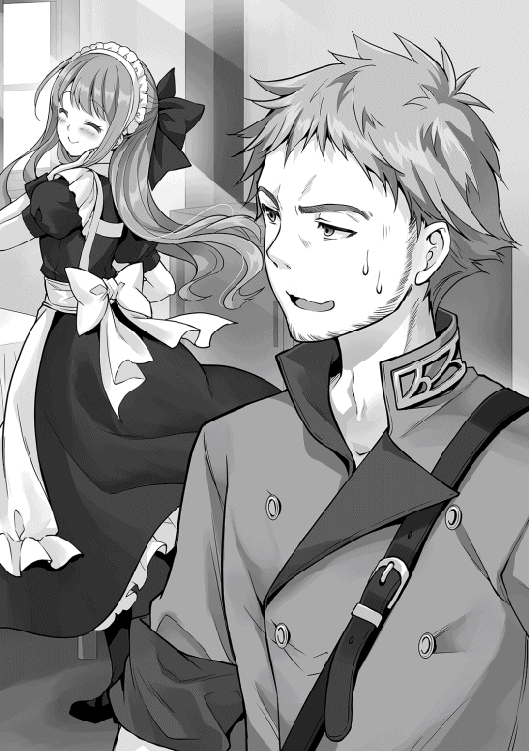
何気なく会話の中心に視線を向けると、いつもの様なふざけた感じではなく、こちらを真剣に値踏みする亮二の視線があった。自分の心が読み取られたと焦ったユーハンだったが、もう一度見るといつもの表情に戻っており、笑顔で話しかけてきた。
「ユーハン様！ 本当にありがとうございます！ 屋敷だけでなく、こんなに可愛いメイドを三名も派遣して下さるなんて。リョージ・ウチノは一生貴方に付いて行きます！」
「あ、あぁ。そんなに喜んでくれると、私としても嬉しいよ。リョージは未成年だから結婚は先の話だと思うが、この国で三人とも娶って欲しい」
表面上は和やかな感じで会話は進んでいたが、ユーハンが冷や汗を掻いている事を承知で亮二は笑顔で話し続けていた。
「屋敷に来られるのはいつになるのですか？」
話に入ってきたエレナに、感謝の目を向けているユーハンに気付かないフリをしつつ亮二は答える。
「そうですね。宿屋の主人には、今日が最後と言っています。ですので、明日の朝にはこちらに引っ越しを考えています。必要な物は明日にでも買いに行けばいいかなと」
「私達は、どうすれば？」
メルタが三名を代表して質問すると、亮二はストレージから金貨を二〇枚を取り出して手渡した。
「必要な物を買ってきてくれる？ 四人での生活に必要な物以外に、必要と思う物や、皆の引越費用も出してくれて良いよ。ちなみに、給与はどうすればいい？ 初めてメイドを雇うから、どれだけ給金を渡すのか分からないのだけど？」
「そうですね。先ほどの金貨五枚はあり得ないので、通常のメイドの給金でいいのでは？ 私とカレナリエンが銀貨五枚、見習いのシーヴは銀貨一枚で大丈夫です」
「そんな金額でいいの？」
思った以上に安い上に、見習いであるシーヴとの給金格差に戸惑いながら亮二が尋ねると、メルタが苦笑しながら答える。
「この金額でも、多すぎますけどね。メイド経験が無い私達に銀貨五枚は破格ですし、見習いのシーヴは給金があるだけでも凄い事なんですよ？ ですよね。シーヴ」
「はい！ リョージ君......。じゃなかった、リョージ様が寛大なご主人様で良かったです。雇って頂いて感謝しております！」
「そうそう。ギルドの受付より安いけど、衣食住が無料で付いてくるのは大きいですからね」
横で頷いていたカレナリエンに詳しく話を聞くと、メイド見習いは衣食住が保証されるだけでもありがたく、無給で働くのが常識との事だった。
メイド騒動が終わった翌日、屋敷での生活に必要な物はメルタ達に一任し、夕方頃には戻る事を伝えた亮二は、いつもの鉱山に向かっていた。
「あれ？ おっちゃんは？」
「リョージじゃねえか。お前さんのお陰で採掘が出来るようになって、嬉しい悲鳴の毎日だよ。それとおっちゃんは鉱山長の事か？ 鉱山長なら今日は潜る日だぞ」
受付にはいつも依頼を受けた時に対応してくれた鉱山長はおらず、別の男性が鉱山の入り口を指さした。
「俺も潜ってもいい？」
「ユーハン様から『便宜を図るように』と言われていて、鉱山長からも『リョージが来たら好きにさせろ』と言われてるからな。好きに潜ってくれていいぜ」
「さすが、ユーハン様に鉱山長だな」
受付の男性に軽く手を振ると鉱山に入った。坑道はイメージよりも綺麗に整備されており、広さや高さも十分に確保されていた。
「よし、インタフェースを起動しながら進めば、最短で鉱山長の所まで行けるな」
亮二が呟きながらインタフェースを起動して鉱山長を検索すると、下層三階と表示された。鉱山長までの道のりを検索すると最短ルートが表示され、敵意のある魔物に襲われても対応出来るようにミスリルの剣を手に持ちながら進み始めた。
「お？ どうした？ 最下層までやって来て。途中で魔物に襲われなかったか？」
「襲ってきたのを片っ端から倒してきたけど大丈夫だよね？」
鉱山長は軽装でやって来た亮二に、心配そうに問いかけた。だが、予想外な亮二の台詞に鉱山長は苦笑する。
「もう一回聞くが、なんでこんな階層までやって来たんだよ？ 今日は坑道を伸ばす仕事があるから、相手をしてやれないぞ？」
「坑道を伸ばす？ 丁度良かった。試したい事があるから、手伝ってもいいかな？」
亮二は、自分が考えているプランを手短に話し始めた。
「どうかな？」
「お前さんが覚えている土属性魔法を試す手伝いをして欲しいって事か」
亮二の話を聞いた鉱山長は、渋い顔をしながら考え込んだ。運搬問題を解決してくれた亮二の頼みなので聞きたいが、採掘にかかわる事になると話が違ってくる。個人的には面白そうな話なので乗りたいが、鉱山長としては安易に許可する事は出来ない。
「恩のあるお前さんの頼みだし、ユーハン様にも便宜を図れと言われているがな。鉱山長としては......」
「三〇分だけ付き合ってよ！ それで駄目なら諦めるから」
「三〇分だけだぞ」
懇願された鉱山長は亮二の提案を条件付きで飲むと、拡張予定の場所に亮二を連れて行き抗夫達に声をかけた。
「お前ら！ ちょっと休憩だ！ ドリュグルの英雄であるリョージが、試したい事があるらしい。少しの間だけそこを空けてやってくれ！」
時間外の休憩である号令に、鉱夫たち一〇名ほどが鉱山長と亮二の元に集まってきた。
「鉱山長。せっかく調子が乗ってきたのに休憩なんて入れられたら、今日の作業が終わりませんぜ」
「すまんな。少しだけ好きにさせてやってくれないか？」
自分を見つめる一〇名の視線が自分に対する不信感と、邪魔をされた事に対する苛立ちに満ち溢れている事を実感すると、亮二は土属性魔法でテーブルや椅子を創りだし、その上に飲み物と軽食を並べて語り掛けた。
「作業の邪魔をしてごめん。鉱山長から話があった通り、少しだけ俺に時間を貸して欲しい。用意した飲み物や食べ物は好きにしてくれていいから」
突然、なにもない場所にテーブルや椅子が作り出され、飲み物や軽食まで用意された事に驚いた抗夫達だったが、恐る恐る飲み物を一口飲んでさらに驚愕の表情を浮かべた。
鉱夫達が飲んだのは普通の果物水だが、ドリュグルの街でさえ飲む事が出来ないほど冷えていたからである。慄いている一同の様子には気付かず、亮二は更に土属性魔法で大きな器を創り出した。さらに大きな器に氷属性魔法で氷をいっぱいにして自由に使うように伝えると、驚愕を通り越して無表情になっている鉱夫達を放置して奥に進んだ。
亮二は鉱山最深部で腕を組んで考え込んでいた。鉱山長の許可をもらったものの、土属性魔法を使った採掘方法が思いつかなかったのである。
「どうすっかな？ あれだけ演出をしたのに悩んでたら駄目だよな。鉱山長がガッツリと見ているし、鉱夫達もチラチラと見てるもんな。よし！」
亮二は掘る予定の場所に右手を当てると、軽く目を閉じて空間が奥に進んでいくイメージを固めながら魔力を放出した。
「おぉ！」
後ろからのどよめきに目を開けると、幅五メートル奥行き一〇メートルの空間が出来ていた。
「おぉ！ 出来たじゃん！ 凄い！」
「お前がビックリするのかよ！ それにしても魔法ってのは凄いな。リョージにこんな事されたら、俺達の仕事が無くなるんじゃないか？」
魔法の威力に感嘆しながらも、仕事が無くなる危機感を募らせたように鉱山長が呟く。
「それは大丈夫。流石に俺が毎日やるのは無理だわ。ここまで確認出来たら大丈夫だわ。お礼に今日の作業を手伝うよ。それと追加で悪いけど、後で廃石を見せてもらってもいいかな？」
「ん？ 廃石なんてどうするんだ？」
「土属性魔法の練習用に持って帰りたいんだよ」
「ああ、廃石で良いなら、好きなだけ持って帰ってくれ。こっちも、その方が助かるからな」
鉱山長に言われるがまま、土属性魔法で坑道を広げ、そのたびに鉱夫から歓声が上がり亮二のテンションも一緒に上がっていった。気が付いた時には三時間ほど経っており、鉱山長から作業の完了が告げられた亮二は廃石が置かれている場所へと案内された。
「ここが廃石置き場だぞ。それにしても、廃石で魔法の練習が出来るのか？」
「ああ、大丈夫。これだけあれば土属性魔法の練習がタップリ出来るよ」
廃石置き場に亮二を連れてきた鉱夫は、亮二の返答に首を傾げた。
「そんなもんかね？ 俺は魔法については全く分からないな。じゃあ採掘に戻るから、終わったら適当に受付に声を掛けて帰ってくれ」
「分かった。鉱山長にもよろしく言っといて！」
廃石置き場に一人残った亮二は、うず高く積み上げられている廃石を眺めながら気合を入れて大きめの石を手に取った。こぶし大の廃石から鉱物を抽出するイメージで土属性魔法を使うと、砂のようになって崩れ落ちていき、手元には小さな球状の固まりが残った。
「おぉ！ なんの鉱石か分からないけど出来たな。銀色に輝いているけど、なんの鉱石なんだ？ 検索をしてみるか」
亮二はインタフェースを起動すると、手に持っている鉱石の鑑定を行った。
鑑定結果：鉄＋一〇 純度一〇〇パーセントの鉄の塊
「純度一〇〇パーセント！ マジで！ 純鉄じゃん。この廃石を全部抽出したらどれだけの純鉄が出てくるんだ？」
二時間ほど掛けて全ての廃石に土属性魔法をかけた亮二は、流石に疲れた顔をして地面に座り込んだ。
「廃石だけあって、量は取れなかったな」
ストレージから果実水と軽食を取り出して、休憩に入った亮二は小さく呟いた。時間をかけた割には量が取れず、インタフェースからミスリルの剣を取り出して参考にしつつ、抽出した純鉄の塊を剣の形に整えた。
「小剣並みの大きさか？」
出来上がった小剣を見ながら、ガッカリしつつストレージに収納すると受付に声を掛けて鉱山を後にした。
「これを見て欲しいんですよ」
ストレージから純鉄で作った小剣を取り出して、コージモに手渡した。亮二から受け取った小剣を見て感嘆の声を出しながら確認する。
「リョージ君。これを、どこで買ってきたんだい？ デザインは平凡だけど、使われている鉄が物凄く良いね。インゴットに戻して作り直したくなる逸品だよ」
「作り直し......。デザインは平凡......。ち、ちなみに買い取りをお願いしたら、どのくらいになる......かな？」
「そうだね。小剣としての価値は無いけど、素材はいいから値段が付くだろうね。その鉄の量なら、私なら金貨一〇枚は出せるね」
デザインの駄目出しを二回もされ、若干へこみ気味だった亮二だったが、金額を聞いて少し立ち直った。
「頑張った甲斐がある！ じゃあ、これをコージモさんに渡すので、依頼している、剣と発動具を合体させた武器の素材にして下さい」
「こんな素晴らしい素材なら、良いのが出来そうだね。デザインは完成しつつあるから楽しみに待っていて欲しい」
コージモは喜んで小剣を受け取りながら、気になっている娘の事を確認する。
「ところで、リョージ君。うちのシーヴがメイド見習いとしてお世話になるそうだけど、本当に大丈夫かな？ あの子は武器屋の娘としては問題ないけど、メイドとしては教育も受けてないから心配なんだよ」
「大丈夫だよ。メルタさんが『きっちりと教育をします』と言ったから」
「それなら安心だね。シーヴは私の可愛い一人娘なんだ。メイドだけじゃなくて、将来に渡って面倒を見てくれるように頼むよ。成人してからの話だけどね」
亮二の話に安堵しながら、コージモは父親として娘を頼むとお願いした。唐突なお願いに、亮二は曖昧な笑みを浮かべながらも頷いた。
「廃石でウハウハ作戦は、微妙な成功だがよしとしよう！ 金貨一〇枚にはなると分かったからな」
コージモの工房から帰った亮二は、自宅の庭を眺めながら呟いていた。
「セーフィリアでの生活は特に問題なく過ごせている。名誉騎士に任命され、屋敷ももらった。なにより美少女メイドが三名もいる！ 素晴らしい！ 冒険者ランクもＤになったから、学院に行く条件も満たしている。廃石再利用は定期的にするとして、後はどう金を稼ぐかだな。まずはポーション作りだな。アウレリオさんと約束もしているしな」
亮二は土属性魔法を使って畑を耕すイメージを固めると、今までなにも無かった庭に横五メートル、縦一〇メートルの通路も備えた畑が生まれた。
「よしよし。これでポーションの素材が育てられるな。それにしても、ポーションの素材が花屋に売ってるとは」
ポーションの素材について検索したところ、必要な素材の一覧が表示され、その中の一つが街の花屋で大量に売っている花だったのである。花屋で買ってきた種を眺めながら、亮二は独り言を呟いていた。
「まずは花を咲かさないとな。でも蒔いてすぐに、花は咲かないよな。童話みたいに『早く芽を出せ』と歌うか？」
亮二は童話を口ずさみながら、畑の端に立つと芽が伸び、葉を繁らせ、青い花が咲くイメージを固めながら、畑全体を包み込むように魔力を流し始めた。
「おぉ。この調子で頑張れば、ポーション増産が簡単に出来るんじゃないか？」
魔力を流し続ける事五分。青い花が咲き誇っているのを眺めていた亮二だったが、収穫のために風属性魔法で花の部分だけ切り取る。そして、大きな壺をストレージから取り出し青い花を壺に入れ、水属性魔法で壺を満杯にしてから風属性魔法で壺の中身を混ぜ始めた。
さらに五分ほど混ぜ続けていると、壺の中には青い液体となった花が徐々に輝き始め、最大限に光った後は、壺の八割くらいの液体が残った。
「よし。これで完成のはず。後は用意した小さい瓶に入れてストレージに収納しておこう」
用意した瓶に青い液体を入れて密封すると、ストレージに仕舞っていった。
「お帰りなさいませ！ リョージく......。リョージ様！」
「ただいま。居間に全員集まるように伝えて。それと人数分のお茶もお願い」
シーヴの慣れない出迎えに新鮮さを感じつつ、亮二は居間に向かった。
「これが作ったポーションなんだよ」
居間に集まったカレナリエンにメルタ、シーヴを前に、亮二はストレージから瓶を数本取り出して手渡した。
「これは？ えっ？ ポーション？ 作った？ いつ？ え？ 今？ いつの間に作られたのですか？」
「え？ さっき庭に畑を作って、種を植えて、収穫して、魔法を駆使してポーションを作っただけだよ？」
「え？ 庭に畑？ さっきまでなにもなかったですよね？」
「おう！ 魔法を駆使して畑を作った後は、素材になる花を自作した成長促進魔法でなんとかした！ 頑張ったんだよ。褒めて！ 褒めて！」
ドヤ顔でポーションが出来るまでの過程を説明していた亮二だったが、集まっていた三人は三者三様の表情を浮かべていた。
「え？ 畑を魔法で作った？ それに魔法で成長促進させた？」
「見ただけでも普通のポーションじゃないのが分かるわ。リョージ様が持っている秘薬と同じくらい？」
「お父さんに飲ませてくれた奴と同じ物かな？」
ポーションを眺めながら、それぞれが呟いていたが、代表する形でカレナリエンが質問を行う。
「リョージ様。ポーションの素材を、ご存じだったのですか？」
「知らなかった！ でも、この種から青い花を咲かせたらいいんだよ！」
「え？ この種は赤い花しか咲きませんよ？」
「水属性魔法で育てると、青い花が咲くんだよね」
「青い花の咲かせ方は、どこかで手に入れたんですか？」
「ノリと勢いで気付いた感じ？」
あっけらかんと話す亮二に眩暈を感じながらも、カレナリエンはポーション作成がどれだけ凄いのか説明を始める。
「はい！ リョージ様正座！ 少しは正座してご自身の凄さを感じてください！ ちなみに小瓶に入っている液体は、かなりの濃度を感じます。薄めて使う事は出来ますか？」
「やってみないと分からないけど、一〇〇倍に薄めて使っても大丈夫だと思うよ。魔術師ギルドが販売しているポーションと比較するなら、薄めても五倍くらいの効果はあると思う」
ポーションのあまりの効き目にカレナリエンは眩暈を起こしそうになりながら仁王立ちになって説明を始める。
「いいですか？ ポーションは、魔術師ギルドが一括して製造して店に卸しています。リョージ様が作ったポーションを販売するなら、まずは魔術師ギルドに話を通しておかないと文句を言われます」
「じゃあ、早速ポーションを持って、魔術師ギルドに挨拶に行こう」
正座をさせられながら説明を聞くのは嫌だと立ち上がろうとした亮二を、カレナリエンは片手を上げて止める。
「まだです！ 正座はそのまま！ ちなみにアウレリオの所で販売するなら、どのくらいの金額を予定されていますか？」
「まずは、様子見で銀貨一枚くらい？」
「やっぱり！ どこの世界に五倍も効き目がある高級ポーションを、捨て値で売る人がいますか！」
「試験販売だから、安くてもいいかなと......」
亮二がモゴモゴと呟いていると、メルタが助け舟を出した。
「ねえ、カレナリエン。リョージ様のやり方も別に問題ないんじゃない？ カルカーノ商会だけのテスト販売で、利用した結果を店に貼り出せばいいじゃない。それだけで売れるわよ。効果が五倍もあるなら、冒険者は買い続けるでしょ？」
「そうだけどね」
メルタの援護射撃に感謝の視線を投げつつ、亮二は勢いよく立ち上がりながらポーションを薄める作業を行うために庭に向かおうとする。亮二が突然と行動を始めた事に驚きながらメルタが声をかける。
「どうされました？ リョージ様？」
「ちょっと、作業小屋を作ろうと思ってさ。家の中での作業だと、ポーションだらけになるだろ？ この屋敷の庭ってさ、無駄に広いから小屋くらい作れると思って」
「小屋を作る？ どう言う事ですか？」
説明するより見せたほうが早いと考えた亮二は、庭に三人を連れ出すと納戸がある部屋をイメージして土属性魔法を使い始めた。
呆然、唖然、愕然と表情を浮かべている三人の目の前で、地面から土がせり上がりながら小屋になる光景が映し出された。
「こ、これは？」
「小屋が欲しかったから作ってみた！ 強度の心配をしているの？ 大丈夫！ 壁自体も強化してるし、棚はカレナリエン達が乗っても壊れないくらいに頑丈にしてあるから。強度を気にしないなら一〇棟は作れたと思うけど、頑丈にしたから少し疲れたかな？」
短時間で完成した小屋の中に四人で入ると、壁面には棚が並んでおり、物を置くのに適した作りになっており、中央には四人が食事出来るほどの机が設置されていた。
嬉しそうに説明しているのを、シーヴは尊敬の目で、メルタは小屋を建てる経費が浮いた事を褒め称える目で、カレナリエンは出鱈目な魔力の使い方を諭す事を諦めた目で亮二を見つめるのだった。
「これは、これは。ドリュグルの英雄殿が魔術師ギルドにどの様なご用件で？」
亮二とカレナリエンは、魔術師ギルドを訪れていた。受付でギルド長を呼び出して待つ事一〇分。応接室に通された二人の前に年老いた男性がやって来た。右手には杖を持ち、白い髭を生やしたローブ姿であり、亮二のイメージ通りの魔法使いであった。
（おぉ！ マジモンの魔法使いだよ。杖を持ってるぞ！ それに白い髭にローブ姿！ 古今東西や異世界関係なく、髭にローブは魔法使いの共通点なんだな！）
「どうかされましたかな？」
魔術師ギルドの長からの質問に答えず、黙っている亮二にギルド長が不思議そうな顔で問いかけた。亮二は我に返ると慌てたように返事をした。
「私の国では、魔法使いは若者が多かったもので。熟練した魔法使いのお姿に思わず魅入ってしまいました」
「ほう。リョージ殿の国では、若手の魔法使いが多いのですな。それは羨ましい限りで。我が国では魔法使いは冒険者になる者が多く、後継者が育たないので、私のような老いぼれが、第一線で働く必要があるのですよ」
お互い様子を伺うように軽い会話をしていると、カレナリエンが痺れを切らしたかのように亮二の腕をつつく。亮二は軽く頷くと、アイテムボックスを装っているストレージからポーションを取り出してギルド長に手渡した。
「これは？ ポーションですかな？」
「ギルド長が持っている瓶の中には、従来よりも五倍効き目の強いポーションが入っています」
「は？」
思わず、素で返事をしたギルド長は、手に持っているポーションに魔力感知を行い、通常のポーションとは比べ物にならない魔力を含んでいる事を確認した。
「こ、これは凄いですな。牛人討伐で利用されたと聞く、秘薬と同じですかな？」
「よくご存知ですね。流石に秘薬よりは数段落ちます。それで早速ですが、今日のお願いは、このポーションを販売する為の許可を頂きたく参上しました」
「ポーションの販売は、特に禁止されておりませんぞ？ 好きにされても良いのでは？ このポーションなら、カルカーノ商会などが喜んで大口取引をしてくれるでしょう」
「実は、すでにカルカーノ商店で販売する話を進めております。ですが、俺が作った商品なんて、誰も買わないと思うんですよね。いくらポーションのラベルに『効果五倍』と書いても、胡散臭さが先にくると思いませんか？」
「確かに、そのラベルだけでは本物かどうか分かりませんな。内容を確認して問題なければ、金額を見て検討するだろうが......。ちなみにこのポーションを幾らで販売するつもりですかな？」
亮二の説明にギルド長は頷きながら確認をする。魔術師ギルドの長としては、効果が五倍もあるポーションが市場に流れると、ギルドで作っているポーションの生産量や価格の見直しが必要となるからである。
「まずは、試験販売として銀貨五枚で考えています。通常のポーションと同じ値段ですが、購入本数を制限して販売します。そこで、ギルド長にお願いしたいのは、作成した五倍ポーションに対して『このポーションの品質は保証します』と、お墨付きを与えて欲しいのです」
「お墨付き？ そちらで作成したポーションに対して『魔術師ギルドで確認した結果、品質に問題はない』と一筆入れるという事かの？」
「そうですね。こちらで作成したポーションを販売すると、魔術師ギルドで作成したポーションの売上が落ちるかもしれません。その対価として、売上の一割を魔術師ギルドに手数料としてお支払いします。ちなみに五倍ポーションは、試験販売が終わったら金貨一枚で販売予定です」
ギルド長は亮二の提案に、軽く目を瞑りながら考える。ドリュグルの英雄が五倍ポーションを売り始めると、間違いなく売上は落ちる。どのくらい落ちるかは予測出来ないが、高ランク冒険者になればなるほど五倍ポーションを購入するだろう。
そうなれば魔術師ギルドとしては、今の物を初心者向けポーションと名称変更し、値段を抑えて販売した方が利益が出そうである。落ち込む予定の売上は、お墨付きをする手数料で補填が出来る。
むしろ、手数料収入の方が利益になるかもしれない。だが、そのままではギルド側が譲られ過ぎている気がしたギルド長が提案をする。
「お墨付きの手数料としてはもらいすぎじゃな。だから、ポーションの検査も引き受けよう」
「検査ですか？」
「ああ。どのくらいの販売を見込んでいるかは分からんが、例えば五〇本を一箱とするじゃろ？ その中から無造作に数本取り出して検査を行う。そして必要な魔力を下回っている場合は、その箱は販売しないと明記する」
「なるほど。そこまでしてもらえるなら、魔術師ギルド公認と分かるデザインに変更した方がいいですね。我々としては最高の内容です。では早速、契約を結びましょうか。じゃあ、準備をお願い」
カレナリエンがアイテムボックスから羊皮紙とペンを取り出すと、話し合った内容を記載して契約書を作成した。そして亮二とギルド長が署名したのを確認し、カレナリエンが前回の金銭貸借契約書と同じようにすると、契約書は淡く光り始め、亮二とギルド長を包み込んだ。
「これで、契約完了となります」
「ギルド長。五倍ポーションはいつ魔術師ギルドに持ってくればいいですか？」
「いつでも構わんよ。最初の一週間は儂自身がチェックする。正式販売になる頃には、他の者でも出来るようにしておこう」
トントン拍子に話が進んだ上に、今後の事も考えて用意周到な対応をしてくれたギルド長の手際の良さに、亮二は感心しながら魔術師ギルドを後にした。
亮二とカレナリエンは、魔術師ギルドでの話し合いについて語り合いながら帰宅の途についていた。
「無事に契約が結べて良かったですね」
「ああ。思った以上の成果だったよ。カレナリエンさんにはボーナスが必要だよな」
「ぼーなす？ ですか？ 聞いた事のない言葉ですが、教えてもらえますか？」
（そっか。こっちの世界にはボーナスなんて言葉は無いよな。ご褒美って言い直したほうが分かりやすいかな？ でも、せっかくだからボーナスを広めてみるか）
亮二がボーナスについて説明を始めると、カレナリエンは納得した表情で頷いた。
「想定以上の成果を上げた者に対して、ご主人様が特別に褒美を与えるのですね？ 冒険者ギルドでの、特別報酬のような感じでしょうか？」
「そう！ 今回の場合だと、五倍ポーションのやり取りで魔術師ギルドから名義を借りるだけのつもりが、検査までしてくれる事になっただろ？ しかも、最初はギルド長自ら検査をしてくれる。こんな素晴らしいお墨付きをもらえるなんて幸先いいよね？ だからカレナリエンにボーナスを支給します！」
「ありがとうございます。じゃあ、これからもぼーなすがもらえるように頑張りますね」
「ああ。頼むよ。じゃあ早速、買い物に行こう！ 指輪とかがいいかな？」
「えっ？」
握り拳を作って気合いを入れているカレナリエンの様子に微笑みながら、亮二は彼女の手を引くと宝飾店に向かって歩き出した。
宝飾店はドリュグルの街で貴族街と言われる区域にあり、店の前には警備員が配置されていた。警備員は時の人である亮二が、カレナリエンの手を引いてやってくるのを微笑ましそうに眺めると扉を開いてくれた。
店内は思った以上に広々としており、コの字型に並んだショーケースには宝飾品がゆったりと飾られていた。亮二達以外にも客らしき者がおり、女性店員と宝飾品についてやり取りをしていた。
「いらっしゃいませ。本日はどの様なご用件で？」
「彼女にボーナ......、特別報酬として宝飾品を買おうと思って来たんだ。なにか良い物があるかな？」
亮二とカレナリエンが宝飾品を見ていると、店長らしき人物が二人に近付き声を掛けてきた。最初は見るだけと付いてきたカレナリエンだったが、店主らしき人物に亮二が相談を始めたのを見て、少し青ざめた顔で袖を引っ張ってくる。
「こんなに高い店じゃなくても、露店にあるネックレスを買って頂ければ......」
（転生して初めて宝飾品店に入ったけど、一流店はどこでも同じ感じかな？ カレナリエンにカッコ悪い所は見せられない！ 『リョージ様素敵！ 結婚して！』と言われるかもしれないしな）
高級店に初めて来た亮二は心の中で気合いを入れると、彼女に優しげな表情を浮かべながら話し掛ける。
「大丈夫だよ。この前の試練の洞窟で得た報酬と、討伐した魔物を売却した分があるから所持金は問題ない。それに、これからもお世話になるから、その分も含めて贈らせてもらえないかな？」
「そうですよ。お嬢様。男性が『自分の為にもっと綺麗になって欲しい』と思い、女性に贈るのが宝飾品なのです。それを否定しては男性の思いが無駄になってしまう。貴方に会うためにショーケースの中で待っていたこの子達の為にも、ご覧頂けませんか？」
亮二と店長らしき人物から説得されたカレナリエンは、困った顔で頷きつつ、ショーケースから取り出されたお勧めの逸品を眺める。徐々に笑顔が戻ってきたカレナリエンの横顔に癒されていた亮二だったが、別の対応をしていた店員がこちらへやってくるのに気付いた。
「店長。少し宜しいでしょうか？」
「どうしました？ 申し訳ありません。少し席を外させて頂きます。代わりに彼女に言って頂ければ、ご覧になりたい物を出しますので」
やはり店長だったと知り、納得顔で頷いている亮二に店員の女性が話しかける。
「色々と御覧頂いているようですが、お気に入りの物は御座いましたか？」
「どう？ カレナリエンさん。なにか気に入ったのはあった？」
亮二と女性店員から視線を向けられたカレナリエンは、ご機嫌な顔から一転して動揺した表情となった。
「え？ 見てるだけで幸せなんで、買う事は考えていませんでした。貴族が来るようなお店に入るのは初めてなものですから」
「えっ？ そうなの？ てっきり宝飾店には行き慣れてるのかと思ってた」
「それは、もっと手頃なお店ですよ！ 私の稼ぎで高級店に入れる訳ないじゃないですか！」
涙目になっているカレナリエンを見て、亮二の方が軽くパニックになってしまった。
「な、なんで涙目になってるの？ どうしたら良いの店員さん！ 教えてプリーズ！」
「なにか贈られるのはどうでしょうか？」
救いを求めた女性店員から無難な答えしか返ってこず、亮二のパニックに拍車がかかろうとした時に、背後から店長の囁くような声が耳に入る。
「指輪などはいかがでしょうか？ 冒険者の方には魔力付与された指輪が人気ですよ」
「なるほど！ 店長さん。彼女は冒険者なんだけど、魔力付与されている指輪はある？」
対応が終わって戻ってきた店長からのアドバイスに感謝の表情を向けながら、指輪を指定して商品を出してもらう。
「こちらなどはいかがでしょうか？ 基本的性能は詠唱速度が上がる指輪です。さらに宝石や魔石を付ける事によって、様々な効果が追加出来ます」
「宝石や魔石を付ける場所が無さそうだけど？」
亮二が指輪を眺めながら質問をすると、よくぞ聞いて下さいましたと言わんばかりの笑顔で店長は答える。
「こちらの指輪は魔道具でして、魔石は指輪の中に収納されます。料金は少しばかりお高くなりますが、いかがされますか？」
「どのくらい？」
「金貨五〇〇枚になります」
「買った！」
金額を聞いて驚愕の表情を浮かべているカレナリエンに気付かず、優雅に金額を伝えてきた店長に勢い良く購入を告げる。亮二の声に我に返ったカレナリエンが慌てて叫ぶ。
「ちょっとリョージ様！ 高すぎます！ 魔力測定器の修理代より高いです！」
「大丈夫だよ。手持ちがあるから」
カレナリエンの表情を面白そうに眺めながら、亮二はストレージから宝石（中）を二つ取り出すと店主に手渡す。恭しく宝石を受け取った店主は、手の中で光り輝く宝石（中）を眺めて感嘆の息を吐く。
「これは素晴らしい宝石ですね。本当にお支払いに利用されますか？」
「足りない？」
「足りないどころか、一つで十分でございます。では、指輪と魔石の代金としてお預かりします」
店長は宝石（中）を一つ預かると、残りの一つを亮二に返却した。カレナリエンは驚きの表情のままで固まっており、女性店員は羨ましそうな顔で店長が持っている宝石（中）を眺めていた。
「リョージ様。装着の魔石は風属性を持つ物でよろしかったでしょうか？ カレナリエン様は風使いでも有名ですので、お似合いかと思われますが？」
「じゃあ、それで。カレナリエンさんもそれで良かったよね？」
「え？ は、はい。私は風使いで有名ですよ」
おかしな返事しかしないカレナリエンを不思議そうな顔で見ていた亮二だったが、店長から風属性をもつ魔石が収納された指輪を渡されると、カレナリエンに向って語りかける。
「カレナリエンさん。これからもよろしくお願いします。この指輪を受け取ってもらえますよね？」
店主から受け取った指輪を、硬直したままのカレナリエンの右手を取ると薬指に嵌める。真っ赤な表情で右手の薬指で輝く指輪と亮二を交互に眺めつつ、手を握ったりしながら指輪の感触を確かめていたカレナリエンだったが、輝くばかりの笑顔と潤んだ瞳で亮二を見つめると、はっきりと伝えてきた。
「はい！ もちろんです！ 喜んでお受けします。末永くよろしくお願いします！」
（ん？ 喜んでお受けします？ 末永く？ なんで真っ赤な顔をしてお礼を言われている？ 気のせいか周りのお客さんもこっちを見てるし、『さすがドリュグルの英雄はやる事が豪快だな』とか『一度は言われたい状況よね。こんな公衆の面前で結婚の申し込みをするなんて、さすがはリョージさんだわ』とかが聞こえるんですけど？ ん？ け、結婚って言ったか！）
亮二がカレナリエンと周りの反応に戸惑っていると、店長が感動した面持ちで拍手をしながら語りかけてきた。
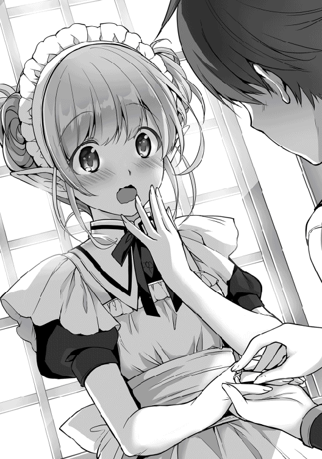
「私は感動で震えています。結婚の申し込みを私の店でして頂けるとは！ ご結婚の際はお声掛け下さい。素晴らしい逸品を大喜びで用意させて頂きます。今はなにも用意しておりません。ですので、拍手を送らせて頂いても宜しいでしょうか？ よろしければ皆さまもご一緒にお願いします！」
店長が拍手をし始めると、店員や店内にいた客達が一斉に拍手をして祝福の声を上げた。
「おめでとうございます！」
「感動しました！」
「英雄の結婚の申し込みに立ち会えるなんて！」
「よし！ 俺達も結婚しよう！」
一同から祝福されているカレナリエンは真っ赤な顔をしながら、嬉しそうに祝福を受けると亮二に小さな声で囁く。
「ぼーなすって、結婚の申し込みだったんですね。てっきり仕事の特別報酬の事だと思ってました。特別な今日を、私は一生忘れません！」
（カレナリエンさん。勘違いではなく、ボーナスは仕事の特別報酬の事なんですよ）
嬉しそうにしているカレナリエンに対して本当の事を言えない亮二であった。
亮二を訪ねたマルコが見たのは、机に頭を付けて呻いているドリュグルの英雄の姿だった。
「どうした？ リョージさんよ？」
マルコの気軽な声を聞いて、少しだけ頭を上げた亮二だったが、すぐまた机の上に頭を付けると深いため息を吐いて、絞り出すように話し始めた。
「なあ。俺って鈍感系の主人公だったみたい」
「は？ 『どんかんけいのしゅじんこう』？ 相変わらずなに言ってるか分からねえな」
「だって！ 仕事を頑張ってくれたカレナリエンさんにボーナスを渡すつもりで宝飾店に行ったら、カレナリエンさんが泣きそうになって、店長の薦めで指輪を買って、右の薬指につけたら結婚する事になったんだぞ！ これを鈍感系の主人公と言わずになんとする！」
亮二の呻くような告白に、さして驚く事なく、マルコは亮二に祝福を伝えた。
「右手の薬指に指輪をつけるのは『結婚して下さい』って意味だぞ。お前の国では違うのか？ えっ？ 左手の薬指？ なるほどな、右手は恋人に送る時なんだな。次からは気をつけろよ」
「次なんて無いよ！」
マルコのアドバイスに叫びながら返事していると、マルコが嬉しそうに話す。
「ちなみに、お前さんがカレナリエンに結婚の申し込みをした話は、すでにドリュグルの街で一番の話題になっているぞ」
「え！ なんで？ どこから、そんな話が漏れ......あぁ。宝飾品店に買い物に来てたお客さんがいたな」
「ああ。きっとそうだろうな。情報屋がその話を嗅ぎとって、号外として街中に配りまくったのだろうよ」
疲れた顔をしながらも、気持ちを切り替えるよう顔を上げて亮二は背筋を伸ばす。宝飾店での結婚話は聞いたが現物を見ていないマルコは、軽い気持ちで亮二に尋ねた。
「ところで、どの位の指輪を贈ったんだ？ お前なら金貨五〇枚くらいか？ 名誉騎士なら、一ヶ月分が目安って言われてるけどな」
「指輪だけなら金貨五〇〇枚」
「は？ 金貨五〇〇枚？ お前はなにを言ってるんだ？ 金貨五〇〇枚なんて大金をどっから調達してきたんだよ？」
「手持ちであった」
「手持ちであったって......。そう言えば魔力測定器の修理代も宝石で出してたな。それにしても、どれだけ金を持って家を出たんだよ？ 金貨五〇〇枚なんて上級貴族でもすぐに用意出来ないぞ？」
再び突っ伏したままブツブツと呟いている亮二を、マルコは呆れたように眺めた。
「にゅふふふふ」
いつもの様にギルドの受付業務をしているカレナリエンだが、普段とは違って思い出し笑いを定期的に繰り返しており、頭の上にお花畑が一ダースほど咲き誇っている様に見えた。
「カレナ？ リョージ様と魔術師ギルドに行ってから様子が変よ？ なにかあったの？」
「にゅふふふふ。あったのだよメルタ。私はこの思い出だけで、一週間は飲まず食わずで生きていけるわ！ にゅふふふふ」
満面の笑みで返事をしたカレナリエンを、不思議そうな顔で見ていたメルタだったが、チラチラとアピールしてくるカレナリエンの右手を見て、大きく息を呑んだ。そして口をパクパクとさせると、声を絞り出すように質問する。
「ちょ、ちょっと？ カレナさん？ そ、その右手の薬指にある指輪はなに？」
「え？ 見えちゃった？ 実はね。指輪をもらったの」
「ま、まさかリョージ様じゃないわよね？」
声と身体を震わせながら質問したメルタの耳に、一番聞きたくないハイテンションな答えが届いた。
「そうなのよ！ リョージ様が宝飾店に連れて行ってくれてさ！ 指輪を買ってくれたのよ！ そして『これからもよろしく。受け取ってくれるよね』と言いながら、右の薬指にはめてくれたの！」
呆然としているメルタをよそに、カレナリエンが嬉しそうに説明しながら指輪を見せていると、ギルドの扉が勢い良く開きバルトロメインが二人の前までやってきた。
「カレナリエン！ リョージと結婚するって本当か！」
「どこからその話を？」
「街中で噂になってるぞ！ 宝飾店でリョージがカレナリエンに結婚の申し込みをしたと。金貨三〇〇枚もする指輪を贈られたと！ 金か！ 金を持ってるから......」
「バルトロメイン！」
興奮しながら話すバルトロメインをカレナリエンは途中で遮った。
「結婚の申し込みを受けた話は本当よ。それと、一つ間違ってる。リョージ様から結婚の申し込みをされたから喜んで受けたのよ。人柄は優しいし、強いし、若いし、一緒に冒険にも行けるの。まだリョージ様は成人してないから、しばらくは婚約者だけどね」
幸せそうな顔で真っ赤になりながら説明するカレナリエンに、バルトロメインは肩を落とすと酒場スペースに移動していった。勢いよく酒を飲み始めたバルトロメインを、周りの冒険者達が肩を叩きながら慰めだす。
「諦めろ。バルトロメイン」
「リョージが相手じゃ無理だろ」
「ドリュグルの英雄で、金も持ってる。渡した指輪も金貨三〇〇枚じゃなくて、金貨一〇〇〇枚って噂もあるぞ」
「えっ？ そうなの？ 私も狙おうかな？」
「やめとけ......。カレナリエンとメルタさんがもの凄い顔でこっちを見てる」
最初はバルトロメインを慰めていた冒険者だったが、酒が進むにつれて、亮二とカレナリエンの婚約話を肴にしながら宴会を始めるのだった。
「リョージ様！ どう言う事ですか！」
鬼の形相で迫り来るメルタに、セーフィリアに来てから最大の危機を感じた亮二は、牛人との戦闘の時よりも素早い動きでシーヴの後ろに隠れる。亮二の代わりにメルタの鬼気迫る表情を受けたシーヴは、真っ青な顔で気絶しそうになっていたが。
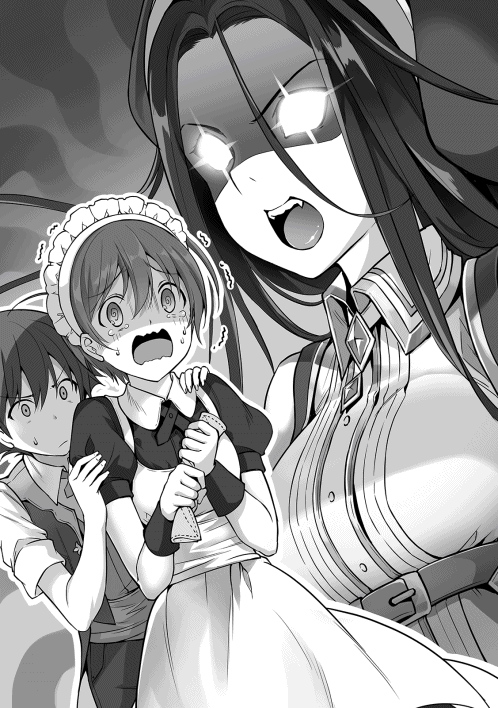
「『どういう事ですか？』って、なんの話？ 物凄く怒ってるけど？」
「それを聞かれますか？ さっき、ギルドでカレナから『にゅふふふふ』と、物凄く嬉しそうな顔で、結婚の申し込みをされたと聞かされたのですよ。このやり場の無い怒りはどうすればいいのですか！ 私にも結婚の申し込みをして下さい！」
カレナリエンとの結婚話は勘違いで始まっていたが、メルタの場合は彼女から申し込みをされている。亮二は覚悟を決めると、わざと軽い感じで話し始める。
「分かった。じゃあ、今から宝飾店まで行こうか」
「ええええええ！ そんな簡単に？」
アッサリと了承する亮二に、メルタは固まりシーヴは驚きのあまり大声で叫んだ。二人の様子に首を傾げて亮二が問いかける。
「行かなくていいの？」
「行きます！ もちろん行きますよ！ でも、本当にいいのですか？」
「え？ 嫌なの？」
「嫌な訳ないです！ 嬉しいです！ でも、『結婚して欲しい』と言った私が聞くのも変ですが、そんなに簡単に決めてもいいのでしょうか......」
最後は消えるような声で、背は縮こまり目も泳いでいる状態のメルタの背中をシーヴが撫でる。そんな二人の様子を見ながら亮二は静かに、しかし内心テンションを上げながら考えていた。
（これってテンプレだよね！ カレナリエンの時は鈍感系のテンプレ主人公になってしまったけど、今度はメルタから来てくれた。ここまで全力で好意を示してくれているなら、男前系の主人公の様に行っても大丈夫だよね！）
亮二はメルタの肩に手を置くと、優しく話し掛ける。
「ギルドで会ったメルタさんの仕事に対する姿勢と、一所懸命さに惹かれていた。そして、メイドとして来てくれた時に運命を感じた。先に結婚の申し込みをされちゃったけど、これからもずっと一緒にいてくれるかな？」
亮二が言葉にして伝えると、メルタは目に涙を浮かべながら嬉しそうに何度も頷く。
「いいなぁ」
声のした方を見ると、シーヴが羨ましそうな顔で二人をみていた。話を全て聞かれていた事に気付いたメルタは真っ赤になっており、亮二はそんな表情を浮かべるメルタを愛おしげに見ながらシーヴに気軽な感じで声を掛ける。
「シーヴも結婚の申し込みをして欲しい？」
「知らない！」
わざと子供っぽい聞き方をした亮二に、シーヴは真っ赤な顔でそっぽを向く。
「ごめん。ごめん。シーヴはまだ子供だからね。大人になった時に俺の事が好きだったら結婚しよう。今日は日頃の感謝の気持を込めて、シーヴにもプレゼントするから許してくれるかな？」
「子供扱いしないで！ でも、今日はメルタさんに免じて許してあげる。それとメルタさん。おめでとうございます！」
ぷくっと頬を膨らませながら、メルタを祝福するシーヴを微笑ましそうに見ていた亮二だったが、二人を連れて宝飾店に向かった。
「いらっしゃいませ。リョージ様。本日はどのようなご用件で？」
宝飾店に入ると、店長がにこやかな笑顔と共に亮二に話し掛けてきた。亮二はメルタに結婚の申し込みとして指輪を贈る事。シーヴには日頃の感謝を込めて宝飾品をプレゼントする事を伝え、カレナリエンの時と同じように魔道具を中心とした宝飾品を用意するように頼んだ。
亮二からの話を聞いた店長は、優雅な手つきで指輪を何点か取り出すと、なめらかな動作と優雅な口調で説明を始める。
「メルタ様はギルドの受付にリョージ様の邸宅でメイドをされます。ですので疲労が溜まりやすい環境にあると言えます。こちらの魔道具は体力、魔力の回復効果と魔石をあらかじめ付けておく事で効果が高まります。シーヴ様はメイド見習いですので、雑用が多いかと思われます。こちらは筋力アップの腕輪をお勧めします。こちらも魔石を付けておく事で効果を高められます」
すらすらと二人の名前や職業を言い当てながら、それぞれに適した指輪や腕輪を勧めてくる店長の情報収集能力に亮二は感心しながらも驚いていた。そんな完璧な対応に心の中で感謝をしつつ、二人に聞こえないように金額の確認を行う。
「良い感じだね。金額は？」
「指輪が金貨三〇〇枚。腕輪は金貨五〇枚となります」
「両方とも前より安いね」
「カレナリエン様に贈られたのは、属性付与が出来る冒険者専用の宝飾品ですので、価格は高くなっております。デザインした者や、使っている金属は同じとなっており、差は出ておりませんのでご安心下さい。腕輪は効果は少ないですが、貴族令嬢の方が付けられる物ですので、それなりのお値段になっております」
申し訳なさそうに伝えてきた店長に亮二は気にしないようにと伝えると、嬉しそうにしているメルタとシーヴを見ながらストレージから宝石を取り出した。
「どう言う事だよ？」
マルコが問い質すと、食事中のユーハンはワインで喉を潤しながら状況を伝えた。二人が珍しく食事を共にしながら話題に上げているのは、カレナリエンとメルタに結婚の申し込みをした亮二についてであった。
「リョージに名誉騎士にして邸宅を与える。そして、カレナリエンやメルタ、シーヴをメイドとして働かせ、気に入ってもらい末永くこの国にいてもらう。その予定で動いていただろ？ 結婚の申し込みをしてくれたのなら、ドリュグルの街に居を構えるだろうからな。こっちの思惑通りに話は進んでいるんだ。どうして、そんな呆れた顔をしているんだよ？ 兄貴？」
「もっと時間を掛ける予定だっただろ！ なんで屋敷を渡した二日目に、結婚の申し込みをしてるんだよ！ しかも二人も！」
ユーハンの説明にマルコがツッコミを入れると、苦笑しながらワイングラスを揺らす。
「それは私も聞きたいな。カレナリエンに聞くとしようか」
ユーハンは側にいた従者にカレナリエンを呼ぶ様に伝えると、話に熱中しすぎて冷めた料理を残念そうに眺めつつ食事を再開した。
「急に呼び出してなによ？ 忙しいのよ？」
やって来たカレナリエンを見てユーハンとマルコは唖然とする。花の様に輝くいつもの天真爛漫な笑顔ではなく、目はキラキラと輝いており、幸せ満開の笑顔で頬は若干赤らんでいる。
そして最も二人が唖然とした原因は、右手の薬指で輝いている指輪をみるたびに不気味な声で笑うカレナリエンだった。いつもと違う古い友人を、別の生き物を見るような表情で見ていたマルコが問いかける。
「カレナリエンさんや。最初の打ち合わせでは、リョージに近付いて様子を見る話だったよな？ どうしてこんな状態になってるんですかね？ それと、その笑い方がちょっとじゃなくかなり気持ち悪いから止めてくれ」
「にゅふふふふ。マルコにどう思われようが別にいいのだよ。リョージ様が私の方を見てくれれば。それで問題ないから気にしない」
最初の打ち合わせなど知らないと言わんばかりの態度で返事をするカレナリエンに、イラッとしつつ、マルコはメルタやシーヴの件を持ちだして嫌味をぶつけてみる。
「メルタにも手を出したがいいのか？ 独り占め出来ないぞ？ シーヴも予約状態なんだろ？」
「別にいいもんね。メルタとは話し合い済みだから。私が第一夫人と決まってるもんね。それに、シーヴは二年後の話だから問題ないわ。早くリョージ様が成長しないかな。ねぇ、マルコ。結婚式はどんなドレスにしたらいいと思う？ やっぱり民族衣装の翠かな？ それとも白のドレスで『貴方の好きな色に染めて下さい』なんてのも......。なに言わせるのよ！ マルコ！ やめてよね！」
一人できゃあきゃあと暴走しているカレナリエンに困惑した表情でマルコはユーハンを見たが、首を振るユーハンからは諦めたようなため息が返ってきた。
「当面放置だな。リョージなら王立魔術学院を首席で卒業した後に、この街に帰ってきてくれるだろう。それに期待したいし、俺としてはそれで十分だ」
「それにしても、リョージはどれだけ金を持ってんだよ？ 詳しくは教えてくれなかったが、宝飾店の店長に確認したら、三人に渡した宝飾品の金額だけで金貨八〇〇枚は超えているらしいぞ。魔石や調整費用は別としてな。そして宝石で一括払いだそうだ」
「金貨八〇〇枚を即金払いか。俺でも一括でその金額は払えないな」
「ひょっとしなくても、俺達より金持ちなんじゃないか？ カレナリエンは完全に当たりクジを引いたよな」
マルコとユーハンがため息を吐きながら話している側で、カレナリエンはお花畑全開の笑顔と、不気味な笑い声で指輪を見つめ続けるのだった。
「カレナリエンはユーハン様の元に行ったけど、なにか用事があったのかな？ ......。ねえ、二人とも話を聞いてる？」
突然呼び出されたカレナリエンを心配しつつメルタとシーヴに問いかけたが、返事がないので訝しく思いながら見ると、二人とも宝飾品を眺めながら別世界に旅だっていた。これでは答えは期待出来そうにもない。
「うふふふふ、私にも春がやって来ましたよ！」
「ふんふふぅん。この重い鍋も片手で持てるもんね！」
「仕方がないな。しばらくは放置した方が良さそうだな。そう言えば魔物の換金をしてなかったな。今からギルドにでも行くか。カルカーノ商店の方が高く買ってくれるんだっけ？」
「そうですね。魔物の換金なら、カルカーノ商店の方が高いですよ」
「お！ メルタさん復帰したんだ？」
「いつまでも浮かれてなんていられません！ 指輪を見るのは五分に一回にします。晩御飯の準備もありますからね」
「じゃあ、カルカーノ商店に行ってくるよ。なにか欲しいものがあるなら買ってくるけど？」
「ご主人様にお使いなんてさせられません。気になさらず行ってきて下さい。食材は用意しておりますので大丈夫です」
亮二はメルタのアドバイスに感謝を伝えるとカルカーノ商店に向かった。
アウレリオの一日は、カルカーノ商店玄関前の掃除から始まる。これは一〇歳の時にその才能を見込まれ、商人の養子として迎え入れられてから続いている習慣であった。玄関口の掃除が終わると、従業員達を集めて朝礼を始める。
朝礼の内容は当日の予定や仕入れのチェック。客からの苦情や要望に対してどう対処したかなど情報共有がメインであり、報告に対して指導や注意などがある。朝礼自体は任意参加だが、朝礼手当として銅貨一枚と朝食が振る舞われるため、カルカーノ商店に務める従業員の参加率は病欠を除いて一〇〇パーセントであった。
アウレリオと従業員が朝礼をしている中、オープン前の玄関口には風物詩となっている行列が出来ていた。これは亮二のアドバイスを元に実施した、先着一〇名三割引きの効果であり、間に合わなかった来客者二〇名には、次の買い物で利用出来るクーポン券を配布していた。
こういった試みは王都でも他に例がなく、来客数アップにつながっていた。
「今日の特売品は？ 小麦粉が安いのね」
「明日は......。魔物の肉が銅貨五枚から三枚になるのね。だったら魔物の肉は止めて、今日は野菜を買って、明日はお肉を買いに来ないと」
玄関口に設置された黒板には、本日と明日の特売が大きく書かれていた。文字が読めない人の為に絵も描かれ、黒板は玄関口に設置されており、常に人だかりが出来る事も集客に繋がっていた。
午前の混雑が一段落した頃、亮二がカルカーノ商店を訪ねてきた。アウレリオは応接室に通すと、この数日で見た事も無い客足と売り上げがあった事を報告する。
「お陰さまで、以前と比べて売り上げが倍になっています。この調子なら王都に出店しても大丈夫そうです」
「アウレリオさんが直接指揮を執るの？」
「本当は私が行きたいのですが、ドリュグルの売上が急激に上がっているので、今は離れる事が出来ないんです。なので、来月に考えていた出店は当面延期する予定です。偶然ですが、仕入れも雇い入れもまだしていませんでしたので」
頷きながら説明を聞いていた亮二に、アウレリオが質問する。
「ちなみに、今日はどの様なご用件で？」
「ポーションの試作品を持ってきたから、見てもらおうと思ってさ」
ストレージから取り出した色の違うポーションを三つ並べながら説明する。
「右から従来通りのポーション。真ん中が効果五倍、左は秘薬になるよ」
「ひ、秘薬ですか？」
アウレリオは秘薬と言われた瓶を手に取ると、光に当てて中身を確認する。光を受けた秘薬は赤色に輝いており、棚に飾ってインテリアとしても使えそうだった。
「アウレリオさんが手に持っている秘薬は、ウチノ家秘伝で作り方を俺も知らないんだ。だから卸す事は出来ないよ。だから、客寄せのアイテムとして使ってくれたら良いよ」
「それはいいですね。ちなみに秘薬との事ですが効果は？ 体力が全回復する？ 怪我や病気も治る？ な、なるほど。そうでしたら冒険者よりも貴族や富豪が買いそうですね。価格を付けるとなると金貨五〇枚から競り売りですね」
さらっと提示した金額に、亮二が目を瞠ったのをみてアウレリオは苦笑いを浮かべる。
「いままで秘薬と言われるポーションはありませんでした。それに、怪我や病気も治るのですよね？ 金貨五〇枚からと言いましたが、本当に競売にかけたらもっと価格は上がるでしょう。これは非売品として陳列するだけにさせてもらいます。それと、魔術師ギルドから仕入れていた通常のポーションは通常価格で。五倍ポーションは銀貨一五枚で販売します。なにかご不満な点が？」
微妙な顔をしている亮二を怪訝に思い、アウレリオは問いかける。
「違う違う。こっちはテスト販売のつもりで、一週間は五倍ポーションを銀貨一枚で販売する予定だったから、アウレリオさんの金額設定に驚いただけだよ」
「ここまで性能がはっきりとしているなら、テスト販売はしなくても大丈夫でしょう。魔術師ギルドも巻き込まれているなら、なおさら必要ないですね」
魔術師ギルドの話をしようとしていた矢先に先制されたので亮二は一瞬驚くが、ヤリ手の商人なら情報収集するのは当たり前だと思い直し、卸せる数を説明した。
「当面は八〇〇本まで可能なのですね。まずは一〇〇本限定で発売しましょう。購入の様子を見て入荷数を増やしたいと思いますが、大丈夫でしょうか？」
「もちろん、今のところはカルカーノ商店としか契約を結んでないから大丈夫。追加が欲しくなったら連絡して。シーヴに納品させるから。それと別件だけど、討伐した魔物の買い取りをお願いしたい」
「もちろん大丈夫ですよ。買い取り金額に色を付けさせてもらいます。ですので、今後ともご贔屓にお願いします。それと、リョージ様が討伐されたと宣伝してもいいでしょうか？」
「ちゃっかりしているね。もちろん構わないよ」
そう亮二に持ちかけたアウレリオだったが、後に買い取り担当者から亮二が討伐した魔物の数を聞いて、気軽に引き受けた事を後悔するのだった。
「初めまして。リョージ様。ドリュグルの英雄であるリョージ様から買い取りが出来るなんて、買い取り担当者の冥利に尽きます」
「早速だけど、買い取って欲しい魔物の数は八七六匹になるんだよ。魔石の取り出しもほとんどしてないけど大丈夫かな？ 羊皮紙に討伐した魔物の一覧は記して......。担当さん？」
魔物の数を聞いた買い取り担当者の顔が、笑顔のまま固まって動かなくなった。
「はっぴゃくななじゅうろっぴき？」
「もしもし？ 担当者さん、どうしたの？ 大丈夫？」
担当者の前で手を左右に振っても反応がないので強めに肩を叩く。すると身体を震わせ、大きく深呼吸をしつつ、ぎこちない笑顔で頭を下げた。
「失礼しました。魔物の数に思わず呆然としてしまいました。討伐された魔物の詳細についてはリョージ様のお手元にある羊皮紙に書かれているのですよね？ ちょっと拝見させてもらっても宜しいでしょうか？」
メモを受け取った担当者は、冷や汗をハンカチで拭いながら羊皮紙に書かれている内容の確認を行う。
討伐した魔物の数
・キノコのお化け×六三四
・緑狼×五八
・犬人×八三
・犬人亜種×二五
・豚人×五五
・豚人亜種×二〇
・牛人×一
合計八七六匹
「あの。リョージ様。こちらに書かれている犬人亜種と豚人亜種とは一体？ 長らく買い取り担当をしておりますが、聞いた事がないのですが」
「え？ そうなの？ どうしよう。俺も違いがよく分からない」
担当者の質問に答えられない亮二は、ストレージから通常種と亜種をそれぞれ取り出すと並べて比較する。
「見た目は一緒だな」
「そうですね」
亮二と担当者で犬人と豚人の魔石を取り出すと、大きさに違いが出ていた。
「おぉ。思ったよりも違いがあるな。亜種の方が二回り大きい」
「リョージ様が亜種と仰っていたのは、特別種なのかも知れませんね」
「特別種？」
首を傾げている亮二に、担当者は説明を始める。
「ええ。見た目は通常の犬人や豚人と同じですが、リーダーとして三〜五匹の部下を率いて戦います。今回購入させて頂く魔物は、試練の洞窟で牛人が現れた時のものですよね？ 牛人は組織立って攻めてくると聞いております。洞窟で倒された魔物ならば、特別種と考えて間違いないでしょう。それにしても特別種とは珍しいものが見れました。これも買い取り担当者の冥利に尽きます」
「そんなに珍しいの？」
「そうですね。私は五年ほどカルカーノ商店で買い取り担当者として働いておりますが、特別種の魔石を見たのは片手に収まるくらいですよ」
担当者の話を聞いて亮二は、今後なにかに利用出来る可能性を考え、亜種の魔石は少しだけ買い取ってもらい、残りは手元に残す事にした。そして、カルカーノ商店に買い取りをお願いすると、次々とストレージから魔物を取り出し始めた。
「どの様な感じで......？ ん？ なんですか？ この野戦病院の様な有り様は？」
亮二がカルカーノ商店を訪ねて三時間ほど経っていたが、誰も報告に来ないのを訝しく思ったアウレリオが買い取り作業場所までやってきた。
そこで目に入って来たのは、キノコのお化けが所狭しと並べられ、買い取り担当者と従業員一〇名が、汗だくになりながらキノコのお化けを解体している状況であった。
「丁度いい所に。人手が足りないので手伝って下さい！ アウレリオ様！」
「手伝うのはいいのですが、この状況は？」
「リョージ様が討伐された魔物の解体作業中ですが？」
「これ全部ですか？」
「ええ。いや違った。ここにあるのは一部です。残りは後日にして頂きました。一日で捌ける数ではありません。さすがはドリュグルの英雄ですね」
「ちなみに支払いはどうなりましたか？」
「即金と言いたいのですが、後日に取りに来てもらう事にしております。アウレリオ様のご指示通りに、色を付けて査定させてもらいました。お手数ですが現金の用意をお願いします」
買い取り担当者から支払い金額を聞いて眩暈を起こしそうになったが、それ以上の利益が見込める事を聞いたアウレリオは、安堵のため息を吐いて周りを見回す。
「ちなみに、リョージ様はどちらに？」
「リョージ様なら『犬人と豚人に特別種がいるのなら、キノコのお化けにも特別種がいるはずだ！ 一〇〇〇匹も狩れば出てくると思うから行ってくる！』と、森の方に走って行かれました」
「また買い取りする魔物が増えるって事か」
「そうなりますね。現金のご用意をお願いします」
「貴方も査定を頑張ってくださいね」
アウレリオは解体用のナイフを手に取りつつ、早速作業に取りかかるのだった。
亮二がドリュグルの街で冒険者として登録してから一週間が経っていた。試練の洞窟で討伐した魔物の買い取りが終わった後は、特に大きなイベントもなく、亮二はランクアップの為に必要な依頼を順調にこなしていた。
ユーハンからの圧力もあり、少しでも早く亮二をＣランクにアップさせるために、ギルドは特権を使って優先的に依頼を渡していた。
通常ならギルドから優先的に依頼が割り振られると、冒険者達から苦情が出るのだが、亮二は報酬を全て冒険者達に奢る食事代や飲み物代に使っていた。
それ以外にも、ユーハンが恩賞を渡す時に流れた他国の貴族であるとの噂や、亮二自身の強さも手伝って、優先されても仕方がないなという空気が冒険者たちの間に流れているのだった。
一方、セーフィリアの世界では貴族の地位は高く評価されており、依頼を優先されても怒らない土壌は出来ていた事も後押ししていた。だが、カレナリエンとメルタの二人同時に婚約したと発表があった時は、さすがに怨嗟や呪詛の声が起こっていたが。
順調に依頼をこなしている亮二だったが、Ｃランクに上がる為の後進の育成が最後の難関になっていた。こればかりは個人の力ではどうしようもなく、後進の育成をクリアするためにはＧランク冒険者のランクを一つ上げる必要があった。
「どうしたものか。ランクの低い冒険者を推薦出来る者はいないのか？」
「ユーハン様。残念ながら、ランクの低い者はすでに誰かが育成中です。流石に横取りする訳にもいかず......」
亮二からも順調に依頼をこなしているとの報告は受けていたが、最後の難関である後進の育成で躓いており、ユーハン達はなんとかするための会議を開いている最中であった。
「それは分かっている。だから良い案がないかと、会議をしているのではないか」
二時間以上経っても良い案が出てこず、ユーハンに名指しされた文官は汗を拭いながらしどろもどろに答えていた。なにも出ない会議にイラつきながら会議に参加している者を見渡していると、カレナリエンが挙手しているのが見えた。
「Ｇランクがいないのなら、冒険者登録させた新人を使うのはどう？ 私に心当たりがあるわ。しかもその人物は、リョージ様の事を絶大に信頼しているから、喜んで依頼を引き受けてくれるわよ。一から育てる事は、規定にも違反しないから大丈夫じゃない？」
カレナリエンの「いなければ登録して育成させればいい」との提案はあっさりと受け入れられたが、該当する人物に心当たりが無い一同は首を傾げながら質問する。カレナリエンから返ってきた答えに全員が微妙な表情を浮かべた。
ユーハンの元から帰ってきたカレナリエンは、会議の内容を亮二やメルタ、シーヴに伝えた。話を最後まで聞いたメルタは特に質問する事無く、冒険者登録をするための準備を始める。あまりにも軽いフットワークで動き出したメルタに、思わず亮二が声を掛けた。
「本当に良いの？ いくら俺がサポートすると言っても、安全を保障する事は出来ないんだよ？」
「ご主人様のお役に立てるなら大丈夫ですよ」
心配顔の亮二にメルタは笑顔で近付くと、亮二を抱きしめながら耳元で囁く。
「そう言いながらも、リョージ様が全力で守って下さるんですよね？」
「当然だよ。怪我一つさせないよ！」
「でしたら問題無しです。しっかりと守ってくださいね。未来の旦那様」
顔を若干赤らめながら、メルタは亮二から離れた。ギルドに向かう準備を始める後ろ姿を見て、亮二はメルタに傷一つ付けないと心の中で誓った。
ギルドに向かった亮二は、メルタの職業を安全なポーターにしようとした。だが、メルタに止められてしまった。
「討伐系の依頼の方が、早くランクが上がります。ポーターだと荷物運びや採取系の依頼しか選べません」
「じゃあ、安全に討伐が出来る職業にしよう！」
亮二の矛盾した提案に、苦笑を浮かべつつメルタは狩人を職業として選択した。メルタの冒険者デビューは五日後とし、それまではカレナリエンから基本的な弓の使い方を実践に基づいて指導するように頼んだ。
亮二自身は武器や防具の材料を購入し、庭に作った作業小屋で唸っていた。
「狩人として登録したなら、弓と防具が必要だよな。既成品だと良い物が無いし、せっかくだからスキルを取得して、メルタさん専用の弓と防具を作ろう。コージモさんに駄目出しされたデザインはスキルを取ってカバーするぜ！」
亮二はインタフェースを起動させ、パッシブスキルの武器製造、防具製造、デザインのスキルを取得した。スキルの数値がどこまで影響を与えるかは分かっていなかったが、創薬のスキルを五まで上げる事で五倍ポーションを作れたので、同じ様に取得した。これで亮二のスキルは、パッシブスキル一二とアクティブスキル七となった。
パッシブスキル
・料理 五
・交渉 五
・創薬 五
・強運 五
・建築 五
・採掘 一〇
・鑑定 一〇
・無詠唱 一〇
・礼節 七
・武器製造 五
・防具製造 五
・デザイン 五
アクティブスキル
・火属性魔法 三
・水属性魔法 三
・風属性魔法 三
・雷属性魔法 三
・氷属性魔法 三
・土属性魔法 一〇
・回復属性魔法 三
使用スキルポイント：一〇五 残スキルポイント：五五
「よし！ まずは弓から作ろうか。強力な弓を作って、メルタさんには無双してもらいたいよな。森の中で見つけた素材が頑丈でいい感じだから、これを曲げて......。曲がらねぇ！ 本気で頑丈だな」
力任せに曲げようとしたが、曲がる気配はなく、亮二は一旦作業を止めると考え始める。
「木を曲げる方法は、蒸した上に柔らかくしてから固定する。確かそれでいけたはず。機械とかがあれば楽なんだろうけど......。ここは異世界！ 全て魔法で解決してみせる！」
うろ覚えの知識で頑張りつつ、無理なら魔法でゴリ押しする事を決めた亮二は、土属性魔法で土台を作り出すと素材の木を置き、火属性魔法と水属性魔法を混ぜ合わせながら蒸しつつ木を曲げていく。
「おっ！ 曲がり始めた！ ユックリと曲げて......。しばらくは土属性魔法で固定して放置。その間に弦を作っておくか」
弦を作った後に固めていた素材を確認すると弓として利用出来る状態になっていた。その後は、魔物の皮で補強しながら弓としての形を整える。さらに武器製造スキルを駆使して弓の性能を上げ、デザインのスキルで見栄えを良くしながら完成させた。
「メルタさん。ちょっといいかな？」
夕食の準備をしていたメルタは、シーヴに残りの作業を任せると、亮二とともに作業小屋にやって来た。
「どうなさったのですか？ 夕食の準備がありますので、あまりお時間が取れませんが？」
「そんなに時間は取らせないから大丈夫だよ。メルタさん専用の武器を作ったから、試射をして欲しいと思って」
弓を受け取ったメルタが軽く構えると、自分の為だけに作られたと思えるほど手に馴染んでおり、練習用として使っていた弓とは比較にならないくらいに軽かった。
「物凄く軽くて短い弓ですね。弓は長い方が遠くまで飛ぶ上に、威力があるとカレナリエンから聞いたのですが、短い弓を頂けたのは技術がまだ伴ってないからですか？」
「この短弓は、俺が一から全て作ったから安心してよ。短いけど、性能は出来る限り上げたし、デザインも頑張ったよ。それに、弦もかなりしっかりと作ってるから、途中で切れる事もない。それに短弓である分を差し引いても軽く引けると思うよ」
メルタの質問に答えながら、亮二は短弓の説明を続ける。
「この短弓は通常の工程以外に、あちこちに魔道具を加工して付けてあるんだ。例えば、弦を押さえる部分には、力を補助する指輪を加工して付けてあるし、矢を番える所は加速と集中の効果がある指輪を付けた。矢も、俺が持ってる属性全てを付与して用意したんだ。知ってた？ 魔石を手に持って属性魔法を使うと、属性を付与する事が出来るんだよ。この矢で攻撃すると、火属性なら燃え上がるし、氷属性なら凍りつくんだよ」
メルタは受け取った弓をジックリと眺めていた。普通の短弓よりも軽く手に馴染む事から、素材をかなり厳選して作っている事は分かる。また、魔道具がふんだんに使われているとの言葉通り、魔力が満ち溢れており、デザインも王侯貴族が持つに相応しい意匠が施されていた。
そして、この世界では矢自体に属性が付与される事は無く、亮二が行った矢への属性付与は、武器製造の常識をひっくり返す内容である事を亮二は気付いていなかった。
「矢に属性付与なんて出来るの？ この短弓のデザインは素晴らしいし、使うんじゃなくて飾りたい逸品よね......。本当に素晴らしい短弓をありがとうございます！ 大事に使わせてもらいますね。ところでリョージ様。この短弓を作るのにかかった費用は、お幾らですか？ かなり高額になるかと思うのですが？」
「ん？ 金貨一〇〇枚くらいかな？ でも安心して！ 魔道具の指輪も安いのを使ったし、弓に使ってる木材は森で拾ったやつだから。それに俺がデザインして作ってるから作成費用は無料だよ！」
メルタの形相を見て、慌てた亮二は必死で誤魔化そうとした。
「リョージ様は正座してください」
「えっ？ メルタさんもカレナリエンと同じパターン？ 正座をテンプレに登録してもいいんじゃないの？」
ブツブツ言いながら正座をした亮二に、メルタは軽く腰に手を当てて説明を始める。
「初心者冒険者の武器は金貨一〇〇枚もしません。一〇年かけて稼ぐような金額の武器を持つ初心者がどこにいるんですか！」
「だって、メルタさんに怪我して欲しくないじゃん。それに少しでも早くランクアップして欲しいじゃん」
正座の姿勢から拗ねた口調をしながらも、自分の事を心配している亮二の視線をひしひしと感じたメルタは、それ以上なにも言えなくなってしまい話題を変える事にする。
「こほん。私の事を思いながら作って下さった武器はありがたく頂戴します。ちなみに防具も作られる予定なんですか？」
「もちろん！ よくぞ聞いてくれました！ メルタさんの為に軽くて丈夫な物にしようと、ミスリルを使った防具を用意するつもりだよ！」
詳細な金額を伝えず、満面の笑みで誤魔化した亮二に、メルタは説教を続ける事を決めた。
「足が痺れてツライのですよ......」
這いながらリビングに戻って来た亮二は、足をマッサージしながらシーヴにお茶をお願いする。
「なにをしたの？ ......じゃなかった。どうされたのですか？ リョージ様」
言葉遣いを慌てて修正したシーヴから紅茶を受け取りながら、苦笑を浮かべつつ説明する。
「メルタさん用の武器と防具を作ったんだけど、『高いです！』と怒られたんだよ。さっきまで二時間説教コースだったんだぞ」
「に、二時間説教コース？ 私なら、自分の為にそこまで用意してくれたご主人様は素敵だと思いますけどね。ちなみにどのくらい費用がかかったんですか？」
「だろ？ メルタさんも喜んでくれると思ったんだけどな。金貨二五〇枚くらいしか掛かってないんだぞ！」
「そうなんで......。えっ？ き、金貨二五〇枚？ 武器と防具の値段だけで？ 魔道具じゃくて？ なんで！ なんでそんな高額になってるの？」
軽い感じで金額を伝えてきた亮二に、思わず素の状態に戻ったシーヴが目を白黒させながら問いかけた。
「魔道具を何個か使ったし、見栄えを良くするために良い素材を使ったけど、ちょっぴり高かったかな？」
気楽な感じで話している亮二の態度に、眩暈を起こしそうになりながらも、シーヴは武器防具の相場を教える。
「いい？ 短弓の値段は銀貨五枚くらいが相場。そして防具は買えない人も多いんだよ。買える人でも銀貨一枚を出せたらいいんじゃないかな？ 冒険者はギリギリの状態に追い込まれた人が多い職業なんだよ」
敬語をすっかり忘れて説明しているシーヴを眺めながら、思い描いていた冒険者像とは違う事に亮二は複雑な表情を浮かべた。
「結局は自重せずに完成させるけどね」
ドリュグル郊外に着いた亮二は、メルタに弓と防具を渡しながら言い放った。
「用意して頂いた防具も喜んで使いますが、素朴な疑問として、どのくらいの費用が掛かったのですか？」
嬉しそうに弓と防具を受け取りながらも費用を聞いてきたメルタに、亮二は視線を合わせないように小さく呟いた。
「全部で金貨二五〇枚」
「え？ 聞こえませんでした。短弓が金貨一〇〇枚と聞いてます。全部で金貨一一〇枚くらいですか？」
「金貨二五〇枚だって」
「え？ き、気のせいか『金貨二五〇枚』と聞こえましたけど？」
「だから、金貨二五〇枚であってるよ！ だって、ミスリルの服に防御力を上げる腕輪でしょ？ それに素早さを上げる靴を買ったんだよ！ だから全部で金貨一五〇枚になったんだよ。意外と高く付いたんだよね。お父さん頑張っちゃったよ」
亮二の言葉に、メルタは手渡された防具を呆然と眺めながら固まっていた。
（ミスリルの服？ 防御の腕輪？ 素早さの靴？ どれも一級品で、金貨五〇枚は下らないわよね？ 金貨二五〇枚は大金だけど、この装備だったら妥当な金額だよね。こんな大金を私だけに使っても大丈夫なの？ 婚約の証としてもらった指輪も合わせたら、幾らになるの？）
「おーい！ メルタさん！ 戻ってきて！」
しばらく防具を抱えながら考えていたメルタは、亮二から声をかけられて我に返る。
「私の為にここまでして頂いて、本当に感謝しかありません。一日でも早くランクアップしてリョージ様の役に立ちますね。こんなに良くして頂いて心苦しいのですが、カレナリエンやシーヴ、私に下さった指輪や腕輪、弓や防具に使われた金額はかなりの額になると思いますが、大丈夫なのですか？」
メルタからの疑問に、首を傾げてしばし考えた亮二だったが、爽やかな笑顔を浮かべながら勢いよく言い放った。
「それくらいだったら、細かい金額だから大丈夫！ まだまだ余力はあるよ」
手渡された弓と防具を装備したメルタは新人の姿ではなく、熟練した冒険者のそれになっていた。亮二は目の保養とばかりにメルタの姿を存分に堪能し、目標としていた場所に向かった。
「光ってる道を進んだら、目の前にこの巨木があったんだよ。あの時は大変だったな。なにも分からないまま、こっちに飛ばされて来たから」
亮二は懐かしそうに木を触りながら語っていたが、我に返ると苦笑を浮かべた。
「よく考えたら一ヶ月も経ってないじゃん。ドリュグルの街にやって来てから、たくさんのイベントがあって感覚が麻痺したぞ」
「私も、この一ヶ月は怒涛の勢いで過ぎていました。ギルドの受付嬢からメイドに転職して、婚約した上に冒険者として、森の中で弓矢を構えるとは思いませんでした」
一ヶ月間の出来事を思い出しながら和やかな空気が流れていたが、それは亮二の冷静な声で破られた。
「メルタさん。戦闘準備！ 敵を三体確認。この場所ならキノコのお化けで間違い無いと思う」
焦りながら弓矢を取り出したメルタに、戦闘を告げた亮二は彼女を落ち着かせように語りかける。
「大丈夫だよ。なにがあっても俺が守るから。キノコのお化けの姿が見えたら、ユックリと狙いを付けて撃つだけだよ」
笑顔で亮二から『全力で守る』と言われたメルタは、落ち着きながらカレナリエンとの練習を思い出す。そして、弓矢を番えると狙いを定め、引き絞った弦から手を離した。
メルタが放った矢は軽い音を立て、キノコのお化けの体を貫通した。貫通した矢は後続のもう一匹に突き刺さってようやく止まる。二体が動かなくなったのを確認した亮二は、残り一体をミスリルの剣で両断してメルタに話し掛けた。
「二体同時に倒すなんて凄いよ！ 初めての実戦でこれなら、バッチグーだね！」
「ばっちぐー？ その意味は良くわかりませんが、問題は無いとの事ですね？ それにしても短弓の威力ではないですよ。これが魔道具を使っている効果なんでしょうね。ですが、初めて魔物をこの手で倒したので震えが止まりません。冒険者の方は本当に凄いです。次に受付業務する時は冒険者の方には少しでも優しくするようにします」
初めての戦闘で緊張したメルタは、荒い息のまま短弓の性能と、冒険者達の日々の大変さを実感していた。
亮二とメルタが森に入ってから五時間が経過していた。何度か休憩は挟んだが、それ以外は戦闘に明け暮れており、戦闘回数は三〇回を超えていた。この場所はキノコのお化けしか出てこないようで、初心者の練習場所としては最適である事が分かった。
「やはりキノコの森だけあって、キノコのお化けしか出ませんね。動きも遅いキノコのお化けとの戦闘を重ねる事で、少し戦いに慣れてきました」
「でしょ！ でも、ここって本当にキノコのお化けしか......。えっ？ ここってキノコの森って名前なの？」
森の名前を初めて聞いた亮二は、キノコのお化け討伐数が四桁を超えている原因を納得しながら話し始める。
「じゃあ、そろそろ帰ろうか。カレナリエンやシーヴが心配するだろうからな。次を最後の戦いにして、そこで属性付与した矢を使ってみようか。テストだから俺が試すよ。短弓を借りて良い？」
亮二はストレージから各属性の矢を取り出すと、メルタから弓を借り受けて近付きつつあるキノコのお化けに対して、火属性が付与されている矢を放つ。
メルタの目に入ってきたのは、アイテムボックスから矢を取り出して気楽な感じで、キノコのお化けに対して弓を放つ亮二の姿だった。
放たれた矢はキノコのお化けに当たると、轟音とともに勢い良く燃え上がり、キノコのお化けは消し炭となって崩れ落ちた。
「お、おお......。これは駄目だな。消し炭になったら売れないじゃん。魔石だけは大丈夫なのが唯一の救いだけど、割に合わないな」
「そうですね。冒険者が使うには、素材確保の観点から見ても無理があるかと」
消し炭になったキノコのお化けから魔石を取り出している亮二を眺めつつ、メルタも同じ感想を伝えた。相談の結果、属性付与の矢についてはストレージで箪笥の肥やしになる事が決まった。
「お帰りなさいませ！ リョージ様！」
「本日の成果はいかがでした？」
帰ってきた亮二とメルタを、カレナリエンとシーヴが出迎えた。カレナリエンから成果を聞かれた亮二は、指を二本立ててアピールをする。
「二〇体ですか？ 思ったよりも少なかったんですね」
「二〇〇体だよ！ メルタさんが、ほとんど一人で倒したんだよ！ どう！ メルタさんは凄いでしょ！」
討伐数を聞いたカレナリエンが思わずメルタに視線を向ける。返ってきたのは力強い頷きだった。
「本当に二〇〇体？ 規格外のリョージ様なら理解出来ますが、教育担当者の私からすると、メルタでは体力的に無理があると思いますが？」
「カレナリエンさんには言ってなかったっけ？ メルタさん専用の弓と防具を用意したんだよ！ メルタさん。カレナリエンさんに見せてあげて」
メルタから手渡された短弓の軽さに驚きながらも、カレナリエンは冒険者の目線で確認を始める。軽さだけでなく、デザインや弦の引きやすさ、手になじむ感じから名のある匠の作品だと推測して答えた。
「名工の作品ですね。デザインだけでなく、性能も素晴らしいです。この性能ならメルタがキノコのお化けとは言え、二〇〇体も討伐出来たのは頷けます。ちなみに誰の作品なんですか？ 今まで見た事もない、斬新な試みが詰め込まれた作品ですが？」
「ふっふっふ。よくぞ聞いてくれました！ これは俺の自作で、魔道具を存分に取り込んであります！」
「えっ？ リョージ様の手作り？ 名工の作ではなく？」
胸を張っている亮二を眺めながら、その多才ぶりに感心して良いのやら、呆れて良いのやら悩むカレナリエンだったが、ふと気になった事を確認する。
「ちなみに、どのくらいの費用が掛かりました？ 『魔道具を存分に』の台詞が気になります」
「ソンナニヒヨウハカカッテナインジャナイカナ？ ダイジョウブデスヨ」
「なぜ片言？ ひょっとして金貨一〇枚かかっているとか？ まさか金貨五〇枚とか言わないですよね？」
「おしい！ ちょっとだけ多くて、金貨一〇〇枚！ そう、短弓だけならね！」
「はい！ そこに正座！ それと後で防具の費用も聞きますからね！」
申告された金額に目眩がしながらも、無尽蔵にお金を使いそうな未来の夫にお説教を始めたカレナリエンであった。
ドリュグルの街は上へ下への大騒ぎになっていた。ドリュグルの英雄として時の人である亮二が、再び偉業を達成したからである。
ギルド史上初となる二階級ランクアップや、駐屯軍への属性付与の伝授、魔術師ギルドと提携して発売開始した五倍ポーション。更には、冒険者ギルドの二枚看板受付と言われているカレナリエン、メルタとの婚約発表。この一ヶ月で、街の情報屋が嬉しい悲鳴を上げ続けるほど、話題に事欠かない亮二だった。
だが、今回については否定的な意見が多かった。Ｃランクへのアップ条件が後進の育成とは言え、婚約者を冒険者として登録したのである。
「素人を冒険者登録するとは無茶しやがる。そこまでするか？」
「メルタさんに狩人やらせるなんて、最悪な婚約者だよな」
「上手くいってるからなんでも出来ると思い込んでると痛い目を見るぞ」
陰口を叩いていた冒険者達だったが、亮二とメルタによる依頼完了や討伐などの報告を聞くたびに、完了までのスピードや討伐数に驚き、中には不正を行っているのではと疑い、後を付けた者もいた。
だが、不正が無いと分かると、陰口は鳴りを潜め、裏表の無い賞賛や、どうすれば効率的に依頼が達成出来るのかなど興味の的になっていた。
「こんなペースでランクアップしたのは、メルタさんが初めてじゃない？ さすが大事な俺の未来の奥さん！」
ギルドの受付で、亮二は上機嫌でメルタに話しかけていた。大勢が聞き耳を立てている状況で、大きな声で『大事な未来の奥さん』と言われたメルタは、恥ずかしさのあまり真っ赤な顔をして俯いてしまった。
恥ずかしがっているメルタの様子を嬉しそうに眺めている亮二と、なにかヒントが聞けるかもしれないと聞き耳を立てていた冒険者達との間で、なんとも言えない空気が出来た。
「けっ！ 見せつけやがって」
「なんだよ！ 秘密が聞けると思ったら、惚気話かよ！」
「リョージの飯だけ腐るように呪いをかけてやる！」
「おい！ 飲みに行くぞ！」
苦虫を噛み潰した顔で亮二に罵詈雑言を吐いた冒険者達は、ギルドに併設されている酒場に繰り出す。そんな様子を見ていたマルコが、苦笑を浮かべながら近付いて来た。
「えげつねえ追い払い方をするなよ」
「大丈夫。あとの支払いは俺がしておくから」
亮二の返しに呆れたような表情をしながら、自らも興味のある質問を行う。
「それにしても、メルタにどんな育成をしたんだよ。尋常じゃないスピードでランクアップしたぞ。歴代の記録を大幅に更新したぞ？」
「やっぱり！ 俺もそう思って頑張ったんだよね。俺にかかればパワーレベリングなんて簡単なもんさ！ もちろん、メルタさんの頑張りが一番だけどね」
亮二はパワーレベリングについての説明を始める。討伐系の依頼を中心に受領して、確実に達成した事。狩人としての特性を活かして、遠距離攻撃に徹した事。亮二の説明にマルコは首を傾げる。
「ぱわあれべりんぐの意味は分からんが、お前が言った内容は誰でもする事だろ？ それだけで一〇日で二ランクもアップ出来ないぞ？ 他に秘密があるんなら教えろよ。俺とお前の仲じゃないか」
「じゃあ特別にマルコには教えてあげるよ。多分、誰でも出来るだろうけど、誰にでも出来る訳じゃないよ」
「なんだそりゃ？ どう言う意味だよ？」
ますます首を傾げるマルコに、亮二は人の悪い顔で近付くと種明かしを始める。
「最初に金貨二五〇枚を用意します」
「は？ なにの話だ？ おい？」
「そして、金貨一〇〇枚を使って短弓を自作します。そして短弓に力の指輪と加速と集中の指輪を加工して取り付けます。さらに！ ミスリルの服、防御の腕輪に素早さの靴を金貨一五〇枚使って購入します」
「おい！ まさか......。ちょっと待てって！」
「最後にこれが大事です！ ウチノ家特製秘伝のポーションを二〇本用意します。それを一日二回に分けて飲むと......。あら不思議！ 一日中戦う事が出来るのです。さらに一〇日間続けると......。なんと！ Ｆランクメルタさんが出来上がるのです！」
ドヤ顔で胸まで張って説明した亮二に、マルコはこめかみ辺りを押さえながら声を絞り出す。
「......って事はなにか？ 金の力と秘薬を使って、強引に依頼をこなしたって事か？」
「さすがマルコ！ その通り！」
「ばかだろ。お前。そんな大金つぎ込んでどうするんだよ。生活は出来るのか？ いくらポーション事業を始めたからといって、すぐに金が入ってくる訳じゃないぞ？ そんな勢いで大金を使っていたら、一瞬で文無しになるぞ」
「大丈夫だって！ 今まで使った金は大した金額じゃないから。小遣い程度だよ！」
英雄は変わった人物が多いとの昔話を思い出しつつ、ドリュグルの街どころか、国全体を動かせる素晴らしい人材を手に入れたと感じたマルコだったが、顔には出さないようにして話し掛ける。
「そう言えば、ポーションを売り始めるんだよな？」
「マルコも良かったら買ってくれよな」
「もうすでにアウレリオに頼まれて試作品を買ったわ。試練の洞窟でもらったポーションほどじゃないが、物凄い効果があるよな」
「買ってくれたんだ。だったら丁度良かった、新作ポーションの実験......試してくれる人を探してたんだよ」
「お前っ！ 『実験』と言ったろう！ 妻帯者の人間を実験に使うんじゃねえ！」
「大丈夫だって！ ポーションに味を付けようと試行錯誤してるだけだから！ ちなみに蜂蜜味とオレンジ味と焼肉味とあるけど？」
「なんで、焼肉味があるんだよ」
「そこはノリと勢いだろ！」
亮二の回答に苦笑を浮かべつつ、マルコはサンプルになる事を了承した。
ドリュグルの英雄。
一週間で前人未到の三ランクアップを達成した冒険者。
ギルドの二枚看板受付嬢と婚約した異国の子爵。
辺境伯や一流冒険者であるマルコやカレナリエン、新進気鋭の商人であるアウレリオや各ギルド長などの有力者と強いコネクションを持つ男。
今までよりも五倍の効果があるポーションの開発を行い、魔術師ギルドと連携して販売を始めた。 権力も財力もあり、剣の実力ならＡランク確実と言われ、魔力も桁外れであり、使える属性も数知れず。
「神は二物を与えないはずじゃなかったのかよ。どれだけ与えるんだよ」
「あいつは、なにかある度に奢ってくれるから最高だぜ！」
「私と結婚してくれないかな？」
ドリュグルの街にいる冒険者からは、諦めにも似た嫉妬や羨望の声が上がっていた。そんな話題に事欠かない亮二が、今度は冒険者として一人前とされるＣランクになったのである。
授与式はギルドが主体で行うとはいいながらも、ユーハンを初めとする権力者達によって政治色の強いイベントになっていた。夕方から開始される授与式には、ユーハンを始め主だった貴族や冒険者ギルドのマスター以下の役員、ギルドとの取引が多い商人などが集まっていた。
「では、これより冒険者リョージのＣランク授与式を執り行う。Ｄランク冒険者リョージは壇上へ！」
突然、政治色を帯びた授与式で、司会を務める事になった職員は緊張のあまり青い顔をしていた。職員を気の毒そうに眺めながら、参加者一同は主役である亮二が登壇するのを待ち続けていた。
「リョージ！ 壇上へ！」
再度の呼びかけにも反応は無く、壇上にいる職員や、脇に控えている関係者からざわめきが起こり始めた。ユーハンを始めとする貴族たちは私語こそ控えていたが、主役である亮二がいつまでも登壇しない事を疑問に思って壇上に視線を向ける。
「リョージはまだ来ないのか？」
職員の呼びかけから五分が経過していた。さすがに痺れを切らしたユーハンが、誰とはなく周りに尋ねる。ユーハンを始めとする貴族達から視線を受けたギルドの役員は、青い顔で汗を拭いつつ、全力で亮二を探している事を主張した。
最初は、踏ん反り返って御託を並べているだけの役員の醜態を楽しそうに眺めていたマルコだったが、あまりにも亮二が現れない事に嫌な予感がしていた。だが、今日は貴族として出席しているためマルコは探しに行けず、カレナリエンやアウレリオに頼もうにも会場に姿が見当たらなかった。いたずらに時間だけが過ぎていき、一同の苛々がピークになった瞬間に会場の灯りが全て消えた。
「何事だ！ すぐに灯りを用意しろ！ 護衛班はユーハンを中心に防御陣形！」
マルコの号令に、警護の者が素早く動けたのは普段の訓練の賜であろう。ギルド側の対応はお粗末なもので、灯りの消えた状況に右往左往していた。
そんな中、壇上に眩いばかりの灯りが集まり、そこに一人の女性が立っていた。
「誰だ？」
セーフィリアの世界には無いスポットライトが当たる場所にいたのは、カレナリエンであった。普段の冒険者装備でも受付嬢の姿でもなく、白を基調としたパーティードレスを着ており、翠がかった金髪の輝きをさらに引き立てていた。
「えぇと。れでぃぃすえんど、じぇんとるまん！ 長らくお待たせしました！ これよりリョージ様のランクアップ授与式を行います。リョージ様！ 挨拶を！」
普段とは違う衣装を身にまとうカレナリエンの美しさに釘付けになっていた一同は、その横にもう一つの灯りが増えた事に気付く。そこには一同が見た事もない衣装の燕尾服を着た亮二が立っていた。
「皆さん！ 本日は私の授与式にお集まり頂きありがとうございます。Ｃランクになっても日々の鍛錬を怠る事無く、盾となり退魔の剣として皆さんを守り続けます。本日は感謝の気持ちを込めて、私から皆さんにお礼の品を用意させて頂きました。どうぞお受け取りください」
亮二が視線を舞台の脇に向けると、様々な物が乗った荷台を押しながらアウレリオが現れた。
「こちらは、リョージ様より皆さまへの贈り物となります。主君であるユーハン様へは銀の長剣及び、銀の鎧、防御のペンダントに五倍ポーション一〇〇本を。他の皆様には銀の短剣及び、五倍ポーション五〇本。ギルドの役員の方々には、五倍ポーション一〇本を用意させて頂きました。そして贈り物に関しては、リョージ様と専属取引契約を結んだカルカーノ商会が、責任を持って目録と一緒に届けさせて頂きます」
満面の笑みでアウレリオが読み上げた内容に、参列者から感嘆や怨嗟の声が上がる。感嘆の声はユーハンを始めとする貴族達であり、怨嗟の声は亮二との専属取引契約を結んだアウレリオを妬んだ商人達であった。
「大成功でしたね。皆さん喜んでましたよ。それで少し気になったのですが、私やリョージ様が着ている衣装や、用意された贈り物の費用を教えてもらっても？ 私の衣装は、貴族の子女でも着た事の無いようなデザインですし、最高級の生地を使われてますよね？」
「イヤダナ、カレナリエンサン。ソンナオカネガ、カカッテイルワケナイジャナイデスカ」
「リョージ様？ その口調は前と同じですね。お幾らですか？」
「衣装だけだったら、金貨二〇枚くらいかな？ で、でも！ 今までで一番安いんじゃないかな？ それに俺の衣装も含めての値段だから大丈夫だって！」
「なにが大丈夫なものですか！ 帰ったらお説教ですからね！」
「またこのパターンかぁ！」
壇上で参加者達の混乱ぶりを楽しそうに眺めていた亮二だったが、カレナリエンからの追及に、見えない汗を流しながら、必死で言い訳を始めるのだった。
「それにしても楽しかったな。ランクアップする度に、サプライズをしようか？」
亮二から笑顔で話しかけられたマルコは、苦虫を噛み潰したような顔でため息を吐く。
「あのな。出来ればじゃなくて、次からは前もって俺だけでも良いから連絡をしろ！ 『なぜ、連絡を頂けなかったんですか！ 訓練の一貫だとしても、悪質すぎます！』と護衛班からの苦情が凄かったんだぞ。警護を指揮する俺の立場にもなってくれ」
「前もって言ったら、サプライズにならないじゃん！ あっ！ サプライズの意味はお茶目だからな」
「さぷらいずの意味は分からんが、お茶目じゃないだろ」
「サプライズの意味を知ってるの？」
「知らん。だが、その言い方だと、間違いなく違う。付き合いだして一ヶ月だが、お前の性格はなんとなく分かってきた。お前がその顔をしている時は大体嘘だ」
「そんな酷い！」
マルコの決め付けに項垂れたフリをしながら、悲しい顔を一瞬だけした亮二であったが、真面目な顔に戻ると説明を始める。
「今回のランクアップ授与式は政治色を強めた内容にしただろ。あんな事をしたら『完全にギルドは貴族の下になりました』と宣伝してるようなもんじゃないか。駄目じゃん！ ギルドは独立独歩で行かないと。さすがのユーハン様も、前回の白雪誘拐事件でちょっと焦った感じ？」
亮二の正論に、思わず言葉が詰まったマルコだったが、弟であるユーハンのフォローをするように話しだす。
「そう言ってやらないでくれ。あいつも貴族として一生懸命に動いているんだよ。押し付けてる俺が言うのも、どうかと思うけどな」
「辺境伯の事情は分かった。俺の無茶で政治色も薄まったと思うし、結果良ければ全て良しとしておこうよ」
「で、本音のところは？」
「カレナリエンの純白ドレスが見れて眼福でした！ メルタとシーヴの分も用意しとけばよかったよ！」
「やっぱりな！ お前の考えの深さに感動した俺の気持ちを返せよ！」
亮二といつものやり取りが出来る事に、マルコは心の底から安堵するのだった。
ランクアップ授与式の次の日から、カルカーノ商会の前には人集りが出来ていた。今までの客層は平民が中心だったが、授与式を境に貴族に仕えるメイドや料理人が来るようになっていた。
そこでアウレリオは二日ほど店を休業させると、ドリュグルの街には今まで無かった二階建ての店舗に改装し営業を始める。一階は価格帯を抑え今までと同じ品を並べた。二階には珍しい物が高価格帯で販売されていた。
一般市民は一階で買い物を行い、貴族層は二階で買い物をするようになり、自然と住み分けが出来るようになっていた。亮二がカルカーノ商会を訪れたのは、改装が終わった三日後であり、アウレリオは店舗を案内しながら感想を求めた。
「一般市民と貴族で階層を分けたのは素晴らしいね。貴族の中には『平民と一緒の場所で買い物が出来るか！』と言う人もいるらしいからね。後、改善するとしたら、買い物袋を分けるのもいいかも。二階で買ったのが分かるようにしよう！ 購入者は優越感を持てるからね。『あら、奥さん！ 今日は二階で買い物されたの？』『ええ！ 息子の誕生日だから奮発しようと思って！』みたいな会話がされたら完璧だね」
「なるほど。袋に関してはすぐの用意は出来ませんが、早急に用意させましょう。今の話が実現出来た時がカルカーノ商店の飛躍の時ですね」
アウレリオは亮二からの指摘を頷きつつ記入すると、早速部下に対応をするように命じた。亮二は、迅速に動くアウレリオに感心しながら、自分の商売のためにアウレリオと話を続ける。
「ところで、ポーションの売れ行きはどう？」
「素晴らしいの一言ですね。発売から数量を制限しているにもかかわらず、品切れになりましたよ。冒険者の方々は自分の命がかかってますから、値段に関係なく購入されていきましたね。そう言えば、先日の授与式でお渡ししたポーションを売りに来た貴族の方がいましたが、どうしましょうか？」
ポーションを売りに来た名簿を渡しながら確認してきたアウレリオに、亮二は受け取った名簿に軽く目を通しながら答える。
「特に問題ないよ。そのまま買い取ってあげて」
「良いのですか？」
「別に問題ないよ。あくまでも贈り物だからね。売りにくるって事は、財政が厳しいのかもしれない。こちらからアプローチをかければ、上手く取り込めるかもしれないだろ？ アウレリオさんには悪いけど、これからも売りに来る人がいたら教えてもらっていいかな？ 買い取り金額については、他の店より甘めの査定でお願い。そうすればみんなやってくるだろ？ 差額については、連絡をくれたら補填するから」
アウレリオは亮二の返答に恐ろしさを感じながら、彼を味方として本当に良かったと小さく安堵のため息を吐いた。
亮二がＣランク冒険者になってから一週間が過ぎていた。Ｃランクアップのお祝いを一般市民と冒険者に限定して案内を掛けており、着々と準備が進んでいた。亮二がドリュグルの街に来てからは定期的にパーティーを行っており、ドリュグル名物として恒例になりつつあったが、今回のランクアップ祝いは最大規模となっていた。
さらに今回は、前回と同じような屋台街に加え、大道芸人のステージや、木剣を使った模擬戦に歌合戦なども開催され、優勝者には賞金や景品を出すなど、大いに盛り上がる予定になっていた。
今回のランクアップパーティーは亮二のお抱え商人となったアウレリオが主体に準備を行った。亮二との蜜月を見せつけられた商人たちは、歯ぎしりをしながらもアウレリオの手腕を認めていた。
この様々なイベントの中で優秀な成績を収めた者は、貴族や商人などに召し抱えられる事になり、イベントによる人材発掘の有用性が認められ、亮二がドリュグルの街を離れてからも定期的に開催されるようになった。
「今後の事もありますので、少しお時間を宜しいでしょうか？ 大事な事をお伺いしたいのです」
アウレリオからもらったランクアップパーティーの必要経費が書かれた羊皮紙を眺めていた亮二に、ためらいがちにカレナリエンから質問が飛んできた。
「なに？ 俺に答えられる事？」
「はい。リョージ様の所持金を教えてもらっていいですか？ 出会ってからお使いになられた金額が莫大なので、今後の生活を考える為にも確認をしておきたく......」
「ついに、この時が来たか」
カレナリエンの問いかけに亮二は小さく呟くと、誤魔化すために別の話題を振ってみた。
「ポーションが随分と売れてるみたいだけど、今の出荷量は？」
「出荷数で言えば一五〇〇本になります。必要経費が瓶代しか掛かっていませんので、売れた分だけ利益ですね。税金の分を残しておけば大丈夫です。後ほど報告書をお渡ししますね。それで、リョージ様の所持金はお幾らでしょうか？」
「そ、そう言えば、討伐した魔物をカルカーノ商会に買い取ってもらったけど、金銭の受け取りは終わってる？」
亮二はなんとか話を逸らそうとしたが、カレナリエンだけでなくメルタも会話に参加してきた。
「金銭の受け取りはすでに完了しております。カルカーノ商会から受け取った代金は屋敷の金庫に収めています。当面の生活費として使うために、帳簿にも付けますのでご安心下さい。それで、所持されている財産を教えて下さい」
「て、鉄鉱石を精錬して、純度の高い鉄の販売に......」
「それに関してもご安心下さい。シーヴの父親から、王都の武器屋を紹介してもらっており、契約を完了させております。こちらに関しては、リョージ様に精錬して頂く事になりますのでよろしくお願いします。そろそろ、リョージ様が持っておられる金額を教えて下さいませんか？」
「じゃあ、依頼を受け......」
「「それで、所持金は？」」
「うっ！ うぅ？」
二人から重ねるように問い詰められ、逃げ場が無くなった亮二は気弱げに見えるよう甘えた感じで取り繕おうとした。
「やっぱり言わないと駄目？」
「そんな可愛い顔しても誤魔化されません！」
見逃してもらえる様子もなく、観念した亮二は説明を始める。
「正確な金額は俺も分からないんだよね。宝石主体で持って来たから、どこかで鑑定してもらったら詳細金額が分かると思うんだ。二人なら分かるのかな？ ちょっと出すから見てもらっていい？」
亮二はストレージから宝石（中）を一〇個と、宝石（大）を四個取り出すと、二人に半分ずつ手渡した。
「この状況って前と一緒じゃない？」
以前にギルドで宝石を受け取っているカレナリエンは、手の中で輝く二種類の宝石を眺めていた。
「やっぱり！ 前に宝石（小）と言いながら渡された時と同じじゃない！ なに！ この宝石の大きさは？ ねえ。メルタはこんな大きな宝石見た事ある？ ちょっと？ 聞いてる？ メルタ！ メルタ？」
カレナリエンは宝石（大）と、宝石（中）を手にしたまま硬直しているメルタを揺さぶる。徐々に焦点が合ってきた目でカレナリエンを見たメルタは、もう一度宝石を確認して大きく息を吸い込み、一気に吐き出すように叫んだ。
「こんな巨大な宝石を見た事ある訳ないじゃない！ 思わず意識が飛んだわよ！ リョージ様！ この宝石は王族レベルが持つクラスです！ 本当に何者なんですか！」
「俺はリョージだよ。他の誰でもないよ」
メルタの問いかけに、亮二は笑いながら答えた。亮二の天真爛漫な笑顔を惚れ惚れと見ていた二人だったが、軽く頭を振って気を取り直すと心を鬼にして告げる。
「この宝石は金庫に仕舞いますね」
「えぇ！ ちょっと！ それは酷いんじゃない？」
「リョージ様は騎士でＣランク冒険者になられました。これからどんな経費が掛かるか分かりません。なので使わずに残しておきましょうね？ 無駄遣いは禁止ですよ」
「じゃあ、渡した宝石以外は使ってもいいの？」
メルタの発言に亮二が上目遣いで確認をしてきた。下から覗き込まれるように見つめられたメルタは顔を赤くしながら頷く。
「ま、まあ。これだけ宝石があれば当面大丈夫ですが......」
「約束だよ！ よし！ 言質も取ったから、他の分は好きに使うぞ！」
「え？ ちょっと待って下さい！ その言い方だとまだありますね！ あれ？ リョージ様は？」
「メルタが宝石を袋に入れながら喋ってる最中に、徐々に距離を取って逃げたわよ」
「止めてよ！ カレナリエン！ あの素振りならまだ宝石を持ってるはずよ！」
「よくよく考えたらさ。色々と買ってもらえるし良いかなと思って」
「よくない！」
カレナリエンの言葉に、メルタの声が屋敷中に響き渡った。
「よう！ リョージ！ 珍しい魔物の肉を仕入れたんだが、買っていかないか？」
「珍しい？ よし、屋敷の方に届けといて。料金は払っとくよ」
「ちょっと！ こっちはリョージに教えてもらったせんべいを作ってみたよ。しょうゆは無かったから、塩味だけだけどね！」
「えっ？ 出来たの？ 買う！ もちろん買うよ。あるだけ全部頂戴！ 袋を二つに分けて、一袋は屋敷の方に届けといて！」
「リョージ！ 今度のパーティーはいつだよ！」
「毎回しねえよ！ 他の誰かに言えよ！」
「お前みたいに、気前の良い奴はいねえよ！」
メルタとカレナリエンから逃げ出した亮二は、シーヴの父親で武器職人のコージモ＝ルンディンの元に向かっていた。ドリュグルの街で時の人の亮二は、道を歩くだけで商人や料理人だけでなく、一般市民からも声が掛かる。
「ゴメン！ コージモさん怒ってない？」
「お父さんがそんな事で怒る訳ないじゃない！ じゃなかった。ないですよ。でも、リョージ様は、時間を守る事を覚えた方がいいよ」
亮二が武器屋に到着したのは約束の時間から一時間も遅れていた。まだまだ敬語の使い方に慣れていないシーヴに注意を受ける。頑張って敬語を使おうとするシーヴを微笑ましそうに眺めつつ答えた。
「次から気をつけるよ。あっ！ そうだ。途中で美味しそうなお菓子を見付けたんだ。せっかく買って来たから、後で家族の皆で食べてくれるかな。もちろん屋敷の分もあるから、遠慮しなくていいよ」
「わぁ！ ありがとう。ここで食べるのに、お屋敷でも食べていいの？」
自分だけがズルをしている罪悪感で少し悩みながら確認したシーヴに亮二は笑顔で答える。
「その代わりに、遅刻と無駄遣いは内緒ね」
「仕方ないなぁ」
亮二からの提案に、眉を寄せながらも嬉しそうに買収されたシーヴは、コージモの元に亮二を案内する。
「遅くなってごめんなさい。武器が出来上がったと、シーヴから連絡があったけど？」
「ドリュグルの英雄を呼び付けたんだから何日でも待つよ。それと、お土産を頂いたようでありがとう」
「歩いてたら、あちこちから声かけられるからね。次は変装してから来るよ。お土産は気にしないで食べてね」
「分かった。ところでシーヴはメイドとして問題なく働いているかい？ 本人は『ちゃんと出来てるから！』とは言ってるけど、親としては気になるからね」
「シーヴはメルタさんに怒られながらも頑張ってるよ。メルタさんも『筋はいい』と言ってたから大丈夫だよ」
コージモの親としての質問に答えながらも、亮二の目はコージモが持っている武器に釘付けになっていた。
「コージモさん。それが例の武器ですか？」
「ああ。まだ試作段階だから改善の余地はあるけど、武器としては問題ないよ。手に取ってくれるかい？」
亮二はコージモから武器を受け取ると、じっくりと眺める。武器自体の大きさは長剣と同じで、見た目は普通の剣だった。困惑気味の亮二に、コージモは自信に満ちた声で伝える。
「柄の部分にある、フックを外してみてくれるかい」
「えっ？ フック？ これか？ おぉ......」
コージモに促され柄の部分にあるフックを外すと、柄の部分が分離し三〇センチのＬ字型の筒が現れた。
「それが発動体になるんだよ。ただ、それだけだと味気無いから、工夫をさせてもらったんだ。どうぞこちらへ」
コージモに笑顔で案内された裏庭は、剣が振るえる程度の広さがあり、作った武器の強度やバランスを見る場所との事だった。
「通常は発動体なんだけど、それ以外にも筒状になってるのが分かるかい？ そこに小さな魔石を入れて、軽く魔力を込めると打ち出す事が出来るんだ」
「え？ 先込め式銃？」
「さきごめしきじゅう？ それがなにかは分らないけど、リョージくんの住んでいたニホンには同じ武器があるんだね」
心底ガッカリした様子で話すコージモに、亮二は慌ててフォローをする。
「違うよ！ コージモさん。大昔の文献で見ただけで、実物は見た事は無いから、ビックリしたんだよ」
「それにしてもニホンとは凄い国だね」
（リボルバーやライフルは黙っておこう。俺がいた世界は本当に凄いよな。まあ、日本に生まれたからこそ、異世界で無双が出来ると言っても過言じゃないけどな）
「俺も文献でしか見た事が無いんだよ。ゼロから想像して作るコージモさんが凄いんだよ！ ちょっと試射していい？」
亮二はストレージからキノコのお化けの魔石を取り出すと、筒の先端に詰め込んでコージモが用意した的に向けて魔力を流して撃ち出した。直径六〇センチ、厚さ一五センチの的から軽快な音が響くと、的には小さな穴が空いており後ろの木にめり込んでいた。
「おぉ！ 結構威力があるんだな。魔物相手にも使えるな。遠距離から狙撃も出来そうだ。魔物の皮や特定部位を傷付けずに倒したい時に使えるな」
亮二はＬ字型の筒を剣に再装着してフックを掛けると、剣としての使い勝手を確認する。コージモは剣のバランスを確認しただけだったが、亮二が行っている確認の剣舞は戦いを想定した動きであった。
その流れるような動きに見とれていたコージモだったが、職人としての仕事を思い出し慌てて亮二に声をかける。
「リョージくん。君の剣舞に見とれてしまって、武器のバランスを確認出来なかった。もう一度、剣舞をお願いしてもいいかな？」
「大丈夫だよ。そんなに疲れた訳でもないから」
「ありがとう。だったら、なにか属性を付与して剣舞をしてもらえるかな？ ミスリルの剣とは比較にならないだろうけど、この剣は筒の部分に魔力を流せるように設計している」
コージモの話を聞いた亮二は、さっそく雷属性を付与する。ミスリルの剣は魔力を押し出すイメージだったが、コージモの作った剣は流すイメージで簡単に魔力が通り、簡単に属性付与が出来た。
「コージモさん！ この剣は凄いよ！ 簡単に属性付与が出来る。ミスリルの剣よりも良いんじゃないかな？」
「ミ、ミスリルの剣は国宝級ですよ！ それは言い過ぎじゃないかな」
亮二から絶賛されたコージモは、職人としての矜恃を十分に満たされ、静かに興奮しつつ、先代である父を超えたと思うのだった。
コージモから剣を受け取った亮二が気分良く屋敷に帰ってくると、仁王立ちのカレナリエンが待っていた。思わず逃げ出しそうになる亮二だったが、なんとか踏みとどまる。
「ただいま。どうかしたのかな？」
「リョージ様、正座！」
「えっ？ なんで？」
「また無駄遣いしたでしょう！」
心当たりしかない亮二は、しどろもどろになりながら答える。
「無駄遣い？ し、してないよ？」
「では、この高級魔物肉と、見た事ないお菓子が屋敷に運ばれて来たのは何故ですかね？」
「しまった！」
「それにシーヴからも話を聞いてます。待ち合わせに遅れるなんて、貴族として以ての外です」
「シーヴ！ 裏切ったな！」
「ごめん！ メルタさんとカレナリエンさんから『全て話しなさい』と迫られたら逆らえないよ」
「だから、シーヴも正座してたのか」
「二人ともお説教一時間コースですからね！」
「「ええぇ！」」
その日の夕食は高級魔物肉をふんだんに使った料理だったが、当面は無駄遣いを控えようと亮二は誓うのだった。
「リョージさん。この依頼を受けて頂きたいのですが」
亮二がギルドを訪れると、メイドではなく受付嬢としてのメルタが一枚の羊皮紙を差し出してきた。
「指名依頼？」
亮二は呟きながら羊皮紙を受け取ると内容を確認する。
試練の洞窟深部調査
牛人によるスタンピードが発生してから一ヶ月が経過した。だが、魔物の出現数が増えつつある。原因を調査するため洞窟の深部探索を行う。学者を中心としたチームを結成し、その護衛の為、三人以上のパーティーを六組募集する。
達成条件：試練の洞窟で探索チームから、けが人を出さずに調査が終了する事
報酬：金貨五枚（有用な情報を得た場合は、特別手当を支給）
内容を確認しつつ気になる点をメルタに問いかける。
「メルタさん。試練の洞窟でスタンピードが発生した後に、魔物の出現が増えるのは通常では考えられないの？」
「そうですね。前回の牛人が現れた時は、撃退後の一ヶ月は魔物が殆ど出現しなかったと報告されています」
「それと、学者さん達は勝手な想像だけど、戦闘力も体力もないよね？ そんな人達が試練の洞窟の深部まで行けるの？ それに有用な情報って学者さんが見付けたら、俺達にも特別手当は出るの？」
「ご安心ください。探索チームの学者は、体力回復の腕輪と、リョージ様......じゃなかった、リョージさんの作った五倍ポーションが支給されます。それと有用な情報については、護衛されたからこそ発見出来た事になるので大丈夫ですよ」
質問によどみなく答えながら、メルタは心配そうに注意する。
「リョージさんは試練の洞窟の広場までしか行ってませんよね？ 奥に行けば強い魔物がいますので注意してくださいね。牛人と戦って大丈夫だったリョージさんなら、特に問題ないとは思いますが」
「メルタさん。心配してくれてありがとう！ でも安心して！ たとえ牛人が三頭出てきても、俺に掛かったらサクッと返り討ちだから！」
「ふふ。分かりました。でも気を付けてくださいね」
軽く返事をした亮二に、メルタは少し笑いながらも心配そうな顔で伝えた。
亮二、マルコにカレナリエンの三人が、試練の洞窟に到着したのは翌日であり、亮二達以外のパーティー、探索チームはまだ誰も到着していなかった。
「リョージ。属性付与のやり方を、兵士達に講義してくれないか？」
ギルドからの早馬連絡便で洞窟の探索は、チーム間での連携確認や探索チームの学者達の体力を確認してから行うと連絡があった。その為時間が空いた亮二に、部隊長が属性付与講師の依頼をしてきたが、前回の講義で全員が属性付与になった事を思い出すと確認する。
「え？ また講義？ 別に何回でもいいけど、上手く使えない人なんていた？」
「新兵だ。リョージに教えてもらった属性付与で、駐屯軍の戦力は飛躍的に向上したんだよ。だがな、その後に増援として送られて来た兵士達がいるんだが、そいつらは当然ながら属性付与が出来ない。だから古参の者達と差が出始めた。そんな状態で新兵達を最前線に出すのは危険だろ？ だから古参兵達が多く出る事になり、疲労が溜まってるんだよ」
「なるほどね。そういった事情なら構わないよ。新兵達に属性付与を叩き込むよ。そうだ！ 部隊長。話は変わるけど、この剣に属性付与をしてみてくれない？」
「この剣がどうかしたのか？」
亮二から渡された剣を鞘から抜きながら、見た目はなんの変哲もない剣に属性付与を行う。あまりにもスムーズに出来たと感じた部隊長だったが、ある事に気付いて驚愕する。
「おい！ この剣はなんだ？ こんな簡単に属性付与が出来るのか？ どうして持続時間が長いのか教えてくれ！ これは魔剣なのか？」
「魔剣じゃないぞ。部隊長が持っている剣は、ドリュグルの街にある武器屋で俺専用に作ってもらった逸品だ。素材集めから全工程が手探りだった。だからかなりの金額が掛かったけど、大量生産したら価格はもっと抑えられると思う。どう部隊長？ この剣を駐屯軍の標準装備にしないか？」
部隊長は亮二に渡された剣を、穴が開くほど眺めた。普段は属性付与をするまでに、二秒ほど時間が掛かっていた。だが、この剣だと一秒も掛からず属性付与出来る。
持続時間も二分が限界だったのが、この剣だと意識しなくても際限なく属性付与をまとい続ける事が出来る。駐屯兵全てが装備出来れば、恐ろしい戦力アップになると部隊長は考えた。
「よし！ 辺境伯にお願いしよう。武器屋の名前を教えてくれないか？」
「条件によって教えてあげる」
「条件？」
「そう。条件。まずはカルカーノ商会を通して購入する事。そして武器の修繕については、紹介する武器屋だけに任せる事。その条件を守ってくれるなら、俺からもユーハン伯に働きかけるよ」
部隊長にとっては特に問題ない条件だったので、真剣な目のまま亮二に語りかける。
「リョージ。俺はどうなっても良いが、兵士達全員を無事に家族の許に送り届ける義務がある。この剣を導入する事によって、それが出来る可能性が飛躍的に上がるんだ。リョージも責任を持って対応してくれると思って良いよな？」
「もちろん！ だけど、もう一つ条件を追加する！」
リョージから条件追加を言われた部隊長は、大切な事を話していなかったと気づき、苦笑を浮かべながら頷く。
「安心してくれ。金なら悪いようにしない」
「違うよ！ 金の話は後からだ！ 今の話に、部隊長自身が生き残る事が入っていない！ それが問題なんだよ！ 『俺はどうなっても良い』なんて身勝手な男のために俺は動かないぞ！ 部隊長も生き残るために足掻いてくれ」
亮二の言葉に呆気に取られつつ、内容を理解した部隊長はニヤリと笑って強く頷くと、自分も生き残る事を誓った。
試練の洞窟に突入するまでの数日間を亮二は精力的に動いていた。コージモには剣の作成依頼をし、屋敷にいるメルタには剣の必要費用を前払いするように手紙を書き、ユーハンには駐屯軍標準装備導入の働きかけをマルコ経由で頼んだ。
駐屯軍に対しては属性付与や衛生管理、集団戦闘に関する講座を担当した。その他にも戦場食の開発や普段の食事を改善、深部調査で共同戦線を張るパーティーとの連携打ち合わせや、探索チームへの生存確率向上訓練などを行った。
短期間で行われた内容は、駐屯地自体の業務効率化や経費削減対策など多岐に渡り、気付けば駐屯地の実質的な経営者になっていた。
「だぁ！ 忙しいぞ！」
「当たり前です」
思わず書類の山から顔を上げて叫んだ亮二に、カレナリエンは呆れと疲れが入り交じった顔で頷いた。
「あれだけやれば当然ですよね？ 分かっていてやっているとばかり思ってましたよ」
「そんな訳ないじゃん！ やる事全てが目に見えて効果が出るから、ちょっとだけ調子に乗って頑張ったら、とんでもない量になっただけだよ！ めっちゃテンプレな展開じゃん。実際に自分がやるとなると、こんなに大変だとは思わなかった」
『部下のためなら自分の命をかけても構わない』と言い切った部隊長のために奮闘している亮二。ペンを咥えて呟いている彼の独り言を聞くうちに、カレナリエンの表情は呆れ顔から笑顔になった。彼女の視線が自分に向いている事に気付いた亮二が、首を傾げて問いかける。
「どうしたの？ カレナリエン？」
「別になんでもないですよ。私の未来の旦那様は素敵だと思って眺めていただけです」
カレナリエンから笑顔で言われ、亮二は面食らったように瞬きをすると、窓を見る振りをしながら注意する。
「今は忙しいんだよ。カレナリエンも、しっかりと働いてよね！」
「もちろんです。部隊長の為にも頑張りましょうね」
くすくすと笑うカレナリエンを真っ赤な顔で注意するが、誰から見ても亮二が照れ隠しをしている事は明白だった。誤魔化す事も出来ず、亮二は仏頂面のままペンを走らせた。
「リョージさんから手紙？ まさか剣が折れた？ いや、魔道具とフックの部分が壊れたのかな。確かにあの部分は一番脆い......。それとも『さきごめしきじゅう』に不具合が......」
「あれ？ お父さんどうしたの？ 手紙を見て固まってるけど？」
ブツブツと呟きながら手紙を開けたコージモは、その場で内容を確認して固まる。シーヴがコージモの工房に入ってきたのは、そんなタイミングだった。
「あ、あぁ。シーヴか。どうしたんだい？ なにか用事かい？ いや、それよりも聞いてくれ！ 武器作成の依頼が来たんだよ！ しかも大量にだ。どこからだと思う？」
「リョージ様からでしょ？ お父さんにお金を渡すようにって、メルタさんからお金を預かってきたよ。あちこちへの支払いが必要だろうからって」
コージモは愛娘から皮袋を受け取ると、机の上に硬貨を広げて数え始めた。
「え？ こんな大金を見た事無いんだけど......」
シーヴの固い呟きに頷きながら、コージモは金貨の枚数が三〇〇枚である事を確認して、盛大なため息をついた。
「一本金貨三枚か。一日二本で、一〇〇本なら材料費を考えても妥当な金額だな。修繕や調整もうちが独占出来るのか。だったら三カ月で黒字確定だな」
コージモはリョージからの手紙を再度読み直す。
コージモさんへ
駐屯軍の為に属性付与が出来る剣を一〇〇本作成よろしく！
メンテも全部、コージモさんに頼む予定だから。
早目に弟子を育てたほうがいいよ！
あと、出来るだけ早く作ってね。
「めんての意味は分からないけど、修繕の事だろうな。明日にでもギルドに行って、弟子募集の依頼を出すか。どうしたんだい？ 父さん以上に固まってるみたいだけど？」
「金貨三〇〇枚なんて大金。私一人に運ばせないで下さいよ。メルタさん」
あまりの大金を見て固まっている愛娘を不憫に思いながらも、最高に忙しくなるであろう未来を思い描き、コージモは武器職人として決意を新たにした。
「どうした？ 試練の洞窟に行ってたはずでは？」
不思議そうな顔をしながら、ユーハンはマルコを迎え入れた。
「駐屯地の件なんだけどな。リョージが駐屯地経営を始めた。そして、数日で恐ろしいほどに効果が出ている」
「は？」
本来なら、ここにいるはずのないマルコが目の前にいる事も疑問だったが、話し出した内容の意味が分からず間が抜けた表情になる。切れ者と呼ばれる弟の間の抜けた声に、マルコは同情するように力強く頷き、亮二が仕切っている駐屯地の状況について詳細な説明を始めた。
「なるほど。マルコの頭がおかしくなったと思ったが、話は本当のようだな。別の話になるが、部隊長からは画期的な武器の購入依頼が来ている」
「部隊長からも連絡が来ていたか......。おい。俺の報告を疑ってたのか？ そこは兄の言葉を信じろよ」
「無理に決まってるだろ？ 『一介の冒険者が駐屯地経営をして、数日で効果が出始めました』なんて報告を誰が信じる？ まあ、信じるしか無いけどな」
「確かにな」
受け入れるしかないと諦め気味のユーハンに、マルコは真剣な顔で話し続ける。
「どうするよ。ユーハン」
「どうするって？ 当然許可するぞ。この報告書に書かれている内容だけでも、他の拠点で使える施策が山盛りなんだぞ？ 領主としては止める理由がない」
「そうじゃなくて。どこか領地をリョージに任せるのはどうだって話だ」
マルコの提案を真剣に考え始める。ユーハンからすれば、王立魔術学院に行ってもらうのも、領地経営で辺境伯領を発展させるも、どちらも魅力的な話だ。しばらく悩んでからマルコに答える。
「取り敢えず、この件は一旦保留だ。家臣団とも話をして結論を出そう」
贅沢な悩みにユーハンは、ソファーにもたれながらため息を吐いた。
「三班！ 撃てっ！」
「イエッサー！」
掛け声と共に放たれたファイアボールは、緑狼達に襲いかかると紅蓮の炎を咲かせ、火力の花が消えた後には緑狼だった物体が五体転がっていた。静寂を取り戻した洞窟に亮二の鋭い声が響く。
「よし！ 第一班は周囲の警戒！ 第二班は魔石のみ回収。その他は放置！ 第三班は休憩に入るため後衛に移動だ！」
「「「イエッサー！」」」
駐屯軍の精鋭達以上に一糸乱れぬ動きで、探索チームに所属する学者たちが号令通りに動いている事を確認すると、亮二は満足げに頷きながら声を掛ける。
「いい動きだったぞ！ お前ら！ その調子で行くぞ！」
「軍曹！ ありがとうございます！ サー！」
亮二の褒め言葉に学者六名は大きな声を出すと、右手を眉毛の辺りに当てて作業を再開する。その動作を知っている者がこの場にいたら、マルコに『あれは敬礼だ』と教えてくれただろう。
「すまん。なにが起こっているのか、俺に教えてくれないか？」
目の前で起こっている非常識な光景に説明を求めた。だが、マルコから視線を向けられた者は、視線を逸らす、目を合わせて盛大なため息を吐く、首を振って諦めろと言わんばかりに目で訴える等、十人十色の反応を示すばかりでまともな答えが返ってこない。なんとも言えないその空気を変えるように、カレナリエンがマルコに説明を始めた。
「私も詳細は分からないけど、リョージ様の国で有名な流派の軍隊方式だそうよ」
「戦っていたのは、俺の見間違いじゃなければ学者様だよな？」
マルコは、無駄な動き無く魔石取出し作業をしたり、周囲の警戒を行っている六名を眺めながら確認する。彼らの動きは学者ではなく、どう見ても軍人である。マルコの視線を受けた部隊長は悟りきった表情で説明を始めた。
「初めは、『深部調査に行くなら学者たちの生存確率を上げといたほうが良いよね。魔道具やポーション、冒険者に守られるだけではなくて、自分の力で未来を切り開く必要があると思わない？』という、リョージさんの話から始まりました。気が付けば、学者達が魔法を使って戦えるようになってまして。学者達だけでパーティーを組んで『深部に行くまでの雑魚は我らが露払いします！』と言われ、現状がこうなった次第で......」
今回の深部調査隊の指揮官を務める部隊長が、精神的に疲れた顔をしているのを見て、全てを理解したマルコは元凶に怒鳴りつける。
「リョージ！」
「えっ？ なにを怒ってるんだよ？ ちょっとだけこいつらに頑張ってもらっただけだぞ？」
マルコの声にキョトンとした顔で亮二が返事をする。さらに怒鳴ろうとしたマルコの様子に、学者達は作業を途中で止めて、マルコの前に一列で並んだ。
「マルコさん！ 軍曹を責めないでください！ 考えるしか能の無いゴミ屑だった我々を、軍曹は優秀な戦士として生まれ変わらせて下さった救世主なのです！」
「ぐんそう？ リョージの事ですかね？ いやいや。あいつになにを言われたかは分かりませんが、貴方達は頭を使う事がお仕事ですからね。王都から来て頂いた最高の頭脳集団である事を忘れないで下さいよ！」
マルコの注意を爽やかな笑顔で受け流し、リョージを崇拝した表情で見つめる最高頭脳集団を見てマルコは頭を抱えた。
「ごめんなさい。やり過ぎたのは認めます。テンションが上がりすぎました」
牛人を迎え撃った広場で、亮二はマルコに頭を下げていた。
「軍曹！ 頭を下げないで！ 我々は感謝の言葉しかありません」
「最高だ！ お前達！」
学者達が頭を上げるように懇願すると、円陣を組むように自分の周りに集まった学者達を見まわして、亮二は輪の中心で嬉しさを爆発させた。
「なに？ この茶番」
「俺の方が聞きてえよ。国内最高頭脳集団のはずなのに、脳筋みたいな行動になってるじゃないか。リョージのやつは先生達になにしやがったんだよ？」
マルコだけでなく、詳細を聞かされていないカレナリエンからも不審の目を向けられた亮二は、満面の笑みで説明を始める。
「んん！ まずは、学者達に深部調査で必要なのは、体力、根性、判断力であると洗の......説得します」
「おい！ 今、洗脳って言おうとしただろ？」
マルコの突っ込みを無視して亮二は話を続ける。
「それで、森の中に連れ出して、一時間ほど放置します。もちろん、回りにいた魔物は先回りして駆除しておきます」
「おい。ちょっと話を止めろ」
「そして、あちこちをファイアボールで爆破を起こして、不安感を煽ります。そこに颯爽とドリュグルの英雄が登場します。後は慕ってきた学者達に時間差魔法の運用方法を教えます。その後に、試練の洞窟に入ってマナポーションを大量消費しつつ、魔法を撃ちまくらせます。実地で魔法に慣れさせ、体力的に疲れたら五倍ポーションを飲んでスッキリ！ 最後に一日一五時間くらい戦闘をさせてると、屈強な魔法使いの出来上がりです！」
「メルタの時と同じかよ！ いいか。今回、来て頂いている学者先生は王都でも選りすぐりの人材ばかりなんだ。こんな所で遊んでいる場合じゃないんだ」
「それは違うぞ！ マルコ！ 学者だからなにもしなくていい訳がないだろ。護衛が全滅する事も想定して、俺達がいなくても自力で脱出出来るスキルが必要なんだよ！ 俺達みたいな消耗品と違って、先生達は一朝一夕では育たない選ばれた人達なんだからな！」
マルコからのツッコミを受けて、突然真剣な表情で語り始めた亮二を、学者達は憧憬の眼差しで見つめる。カレナリエンは驚いた表情ながらも亮二を見直した様子で見守っている。部隊長はある意味尊敬の眼差しを、マルコは完全に疑惑に満ちた視線を亮二に向けた。
「で、本音は？」
「面白そうだったから！」
「やっぱりな！ そうだと思ったよ！」
マルコの叫び声が洞窟内に反響するのだった。
「では、改めて深部調査を行う。これからは、私が隊長として指示を出すので従うように！ 特に探索チームと、護衛チームのリョージは私の指示に従わない場合は、拘束及び処罰もあり得るので忘れないように！」
部隊長からの突入前に牽制の声がかかり、探索チームリーダーであるライナルト＝ノスケが代表として答えた。
「もちろん。部隊長の指示に従います。リョージさん。我々にお付き合い頂いてありがとうございました。リョージさんのお陰で、深部探索への恐怖心が減りました。これで心置きなく頭脳を使う事が出来ます。それと、洞窟では皆さんに全幅の信頼を置いて、我々は調査に専念させて頂きます」
ライナルトは護衛の冒険者や駐屯軍の兵士に深く頭を下げ、昔を思い出しながら語り出す。
「私達は神童、天才、未来を切り開く者と周りから言われ続けていく内に、感覚が麻痺していたのでしょう。それこそ『選ばれた俺達を守るのは当然だ』とさえ思っていたのです。そんな驕った気持ちを持っていた私達に、危機感を抱いてくださったのがリョージさんでした」
探索チームの学者達は一斉に亮二に向かって頭を下げた。その様子を見守っていた亮二が深く頷くのをみて、ライナルトは話を続ける。
「私たちは『深部調査に不協和音を持って行くと、生きて帰れないぞ。まずは傲慢な気持ちを捨てろ』と、我々の為に言って下さったリョージさんの厳しい言葉に感銘を受けました。そして訓練も新鮮でした。自ら動いてこそ、全体の効率が上がる。謙虚を全面に出せば、最大最高の成果が得られる。この事を忘れず、王都に戻ってからも、私達は謙虚な姿勢で行こうと思います」
ライナルトが話し終わると、亮二は盛大な拍手を始める。
「そうなんだよ！ 俺はそれに気付いて欲しくて、今まで動いていたんだよ！」
「嘘つけよ！ さっき『面白そうだったから』って言ってただろ！」
「なっ！ マルコばらすなよ！」
亮二とマルコの掛け合い漫才を見ながら一同は笑い合うと、先ほどのギクシャクした空気が嘘のように消え去り、部隊長からの注意事項を再度確認して深部調査が始まった。
試練の洞窟の入り口は特に変わった様子もなく、一見すると魔物も少なく平穏に見えた。だが、深部に入った瞬間、辺りを包む雰囲気が一変した。
「なに？ この感じ？」
亮二の呟きに、学者の一人が説明を始める。
「深部に入ると空気が変わるのは、深部の壁が魔物の気配を出す鉱石である為だと言われています。ですが、実際のところはなにも分かっていません。鉱石を採取して持って帰っても、変哲のない鉄鉱石としか鑑定出来ないので」
「え？ これって鉄鉱石なの？ ちょっと待ってもらっていい？」
亮二は部隊長の許可をもらうと、近くに転がっている石を手に持ってスキルで抽出を行う。
「確かに鉄鉱石だね。結構鉄を含んでいる、いい鉄鉱石じゃん。ここで採掘したらいいと思うんだけど、牛人が出るから出来なかったのかな？」
「おい。ちょっと待ってくれるか？ お前さんはなにをした？」
亮二の作業を見守っていたマルコが、戸惑った表情で質問をする。
「え？ 鉄鉱石から鉄を取り出しただけだぞ？」
マルコの質問に答えながら周りを見回すと、警備で周囲を離れている者を除いた部隊長、マルコ、探索チームの学者六人が、唖然として亮二と右手の上に乗っている球状の鉄を交互に見ていた。
（そう言えば、この世界の抽出方法を知らなかったな。魔法で抽出とかしないのか？）
「え？ 俺の国ではこれで抽出をしてたんだけどな？ この国では違うのか？」
「お前の国はどうなってるんだよ。少なくとも、こっちの国で魔法を使って抽出する人間なんて誰一人いないぞ。高炉を利用して鉄を作ってるぞ」
「そうですね。リョージさんには王都に来て頂いて、今のやり方をご教授頂きたいですね」
呆れ顔のマルコと、頬を付けんばかりに顔を寄せてきているライナルトを見て、やり過ぎたと気づき、どうしたもんかと亮二は苦笑を漏らした。
「一旦、ここで休憩としよう。一班と二班は周囲の警戒！ リョージ班は食事の準備。それ以外の班及びに探索チームは休憩！ 但し、なにがあっても対応出来るように油断だけはするな！」
部隊長の休憩の合図を聞いた亮二は、食事の準備を始めるために土属性魔法で人数分の椅子と机を用意し、その上にストレージから温かいスープや飲み物、すぐに食べられるようにサンドイッチやハンバーガーのような物を取り出して並べる。
「食べる準備が出来た人からこっちに来て。水属性魔法で手を洗ってもらうから。あれ？ どうしたの？ 早く飯にしようよ」
食事の準備が整い、ウォーターボールを固定した状態で作りだして一同に呼びかけたが、誰も亮二の元にやってこなかった。不審げな表情で周りを見渡すと、諦め顔のマルコと部隊長。議論を始めた探索チームに、驚愕の表情で固まっている他の護衛パーティーが目に入る。そんな中、マルコがため息を吐きながら代表して答えた。
「リョージ。その摩訶不思議な魔法の使い方は説明してからやれと教えたろう。お前の国では常識かもしれんが、こっちでは非常識の固まりなんだよ！ ちょっとは自重しろ」
「やり方さえ分かれば、誰でも出来るよ？」
「そのやり方を誰も見付けてないんだよ！」
マルコと部隊長以外の、探索チームと護衛パーティーに水属性魔法での衛生管理方法である事を伝えた。護衛パーティーからは、飲み水としても使えると聞くと水の持ち運びが少なくなる事を喜ばれ、探索チームからは原理を究明したいので深部調査後に方法を教えて欲しいと頼まれた。
亮二から水属性魔法を利用した衛生管理方法の教えを受けたパーティーは、怪我による休業期間が減り、依頼を順調にこなしていった。後に、ドリュグルで有名なパーティーとして名を馳せる事となる。探索チームの学者達は、やり方を手順化して衛生管理方法を冒険者に広め、怪我や病気感染による死亡率を大幅に下げる事に貢献するのだった。
亮二達による深部調査は順調に進み、昔に調査したと言われる最深部近くまで来ていた。
「思ってたより、魔物の数は少ないよな？」
亮二の問い掛けに、マルコは水筒から水を飲みながら答える。
「あぁ。そうだな。魔物の数も質も、深部入り口付近と同じなんてあり得るのか？ 学者様はどうお考えで？」
「そうですね。まだ情報が少なくて分かりません。ちなみに私達では感じられない魔物の気配がする石は、どのような状況ですか？」
マルコに話題を振られた探索チームを代表して、ライナルトが訊ねる。
「現状は特に変わらない感じかな？ 多分、俺やカレナリエンみたいに索敵が出来る人間がいなかったら、魔物の気配だけで疲労困憊になってるんじゃないか？ 今も魔物が襲い掛かってくるような気配だけはしてるもんな。でも、近くに魔物はいないから安心していいよ」
「リョージさんの索敵能力は、カレナリエンさんのように精霊魔法ですか？ それともニホン国特有の魔法ですか？」
ライナルトから興味津々の質問を受け、亮二はどう答えようかと考えていたが、インタフェースの話をする訳にはいかず、誤魔化す事を決める。
「これはウチノ家に伝わる秘術だから教える事は出来ないぞ。誰にでも出来るって訳でもないしね。教えられる事は出し惜しみせずに教えてあげるから、この件については勘弁してよ」
「分かりました。リョージさんから教えてもらった内容は、我々の常識を覆す物が多いですからね。貴方が思っている以上に、教えて頂いた内容は国家を動かす規模の情報なんですよ」
「役に立っているならいいよ。ウチノ家の家訓で『やらずに後悔するなら、やってから後悔しろ』ってのがあるからね。これからも、俺の知っている知識や経験を色々と教えるよ。言えない事もあるけどね」
ライナルトから笑みを浮かべつつも真剣な口調で言われた亮二は、イオルスの望んでいる方向になっていると感じながら返事をする。
一方、ライナルトだけでなく、マルコや部隊長、近くにいた冒険者達も、未知の知識や経験を亮二から少しでも多く仕入れようと聞き耳を立てていた。
「ここが最深部です」
最深部にあたる広場に到着した一行は、休憩もそこそこに周辺調査を行った。広場は牛人がいた場所と同じくらいの大きさだったが、魔物はおらず特に変わった様子は無かった。
「前回の報告書と同じで、なにも変化はないわね。先生達に来てもらったのに無駄骨だったのかしら？」
そう呟いたカレナリエンの言葉に、一同が頷こうとした時に亮二から声が掛かる。
「ねえ。奥にも通路があるみたいだけど調査しとく？」
「え？ 奥に通路？ 何処にありますか？ なにもない広場にしか見えませんが？」
カレナリエンの言葉を背に受けながら亮二は壁に近づくと、おもむろに壁の中に入って行く。忽然と消えた亮二に一同は騒然としたが、再び壁から亮二が顔を出すと、安堵のため息を吐いて近付く。
「ここに隠し通路があるとよく気付いたな」
「長年の経験？」
「一一才の子供にどんな長年があるんだよ！ 言いたくないならそう言えよ！」
「相変わらず素晴らしいツッコミだな！」
ゲンナリとした口調のマルコに笑いつつ、亮二は部隊長に休憩を挟んだ後に打ち合わせをしようと提案する。
「それで、どうする？ この先に進む？」
「私達は奥に進む事を希望します。せっかくここまで来て更なる情報が手に入ろうとしているのに、見て見ぬ振りなんて出来る訳ないじゃないですか！」
興奮気味に発言するライナルトに、マルコと護衛パーティーの一部から反対の声が上がる。
「俺は反対だ。最深部の更に奥があると分かった時点で、依頼としては達成だろ。それを土産に帰ればいいじゃねえか。この奥がどうなっているのかも分からないのに、性急に突入するのは賛成出来ん。このパーティーは、最深部までの到着だけを見越した編成なんだからな」
「俺もマルコさんに賛成だ。魔物の気配がする鉱石でうちの魔法使いがやられ気味だ。さっき、リョージからもらったポーションで大分と回復してはいるけどな」
両方の意見を聞きながら、部隊長は悩んでいた。順調に進んだ探索。怪我人が一人もいない状況。マルコ、カレナリエン、リョージと、申し分のない戦力。それに学者達も奥に行く事を望んでいる。
自分自身も奥がどうなっているのか興味が湧いていた。それに奥の詳細が分かれば、今後の防衛ラインの構築にも役立つと考えていた。
「よし。もう少しだけ進んでみよう。ここからはマッピングの必要が出てくるから、カレナリエンさんにお願いしても良いか？」
「分かりました。精霊と一緒に頑張るから詳細な地図を期待しておいて」
カレナリエンの心強い台詞を聞いて部隊長は力強く頷くと、今後の行動について各チームに命令を伝える。
「チームの再編成を行う。マルコと二班と五班は拠点として広場を確保。一班と三班とリョージは先行班とする。魔物を再優先で討伐するように。四班と六班は後方支援チームとして、探索チームの防衛を。先行班になにかあった際は最優先で拠点に退避。その際は探索チームを優先させる事。先生方は逃げる事を考えて行動する事。いいな！」
「「「おぉ！」」」
部隊長の掛け声に全員返事をすると、各自行動を始めた。
「今のところは順調に探索が進んでいるな。順調すぎて引き際が難しいぞ」
冗談を言う余裕が出来ている事に安堵し、休憩の指示を出そうとした部隊長に亮二から小声で報告が入った。
「部隊長。この先に広場がある」
「なぜ、小声なんだ？」
「魔物の数が多いからだよ。撤退するなら今だと思ってさ。ちなみに魔物の数は三〇匹くらいかな」
亮二からの報告に、部隊長は全体を招集すると状況の説明を行った。一同に緊張が走る中、部隊長は決定事項を伝える。
「取り敢えず先に進む。だが危険そうならすぐに撤退だ。探索チームは自らの安全を最優先で行動する事を忘れないように」
「カレナリエンさんの魔法で、先の広場にいる魔物の種類は分からないの？」
亮二の問い掛けにカレナリエンは奥に目線を向けて小さく呟いていたが、小さく頭を振った。
「上手く精霊が動いてくれません。魔物が多い事は分かるんですが」
「仕方ないな。では、物音には十分に注意して進むように」
部隊長の号令の下、五分ほど進むと前方から光が漏れてきている事に気付く。光の奥からは大きな音が漏れており、多少は近付いても大丈夫だと判断した部隊長は、魔法をすぐに撃てるように全員に指令を出し奥に向かって進んだ。
「こ、これは！」
広場らしき場所にいた魔物の数は確かに三〇くらいだった。だが部隊長は光の奥に存在する魔物の正体を見て愕然とする。牛人が三匹もいたからである。その内の一体は他の二体とは違い体格もひと回り大きく、佇まいも威風堂々としており貴族のようであった。
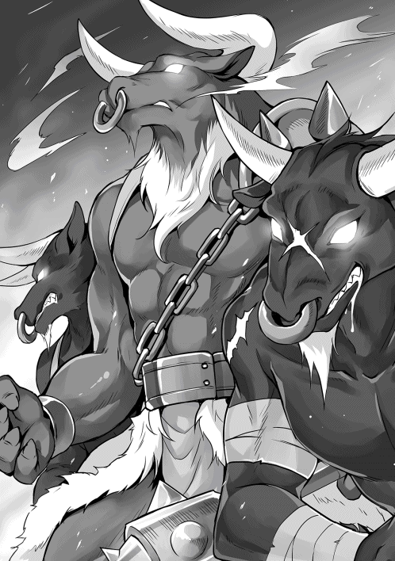
見た目と、醸し出すオーラ。前回の牛人よりも危険なにおいを感じる。部隊長が撤退の合図を出そうする。その時、体格のいい牛人が亮二達のいる方向を見てメイス状の武器を振りかざして大きく叫んだ。
「まずい！ こっちに気付いている！ どうする部隊長？」
亮二の問い掛けに部隊長が言葉を失っていると、体格のいい牛人はさらになにかを叫び始める。叫び声に呼応するように広場の奥で魔法陣のようなものが光り始め、魔法陣から魔物が溢れんばかりに出現し始めた。
「敵の数が三〇匹追加！ まだ召喚される可能性あり！」
魔法陣から魔物が次々と出現してくる事を、索敵モードで確認した亮二は、部隊長に向かって叫ぶ。報告を聞いた部隊長は次々と号令を出し始めた。
亮二はコージモの剣を部隊長に、ミスリルの腕輪をカレナリエンに渡しながら、自らはストレージから杖を取り出す。
「くらえ！」
迫り来る魔物に向かってライトニングボール、ファイアボール、アイスボールにウィンドボールやアースボールと、密かに練習していた魔法を無詠唱で、連続で叩き込む。周囲で爆発が起こり、固まっていた魔物の群れは大混乱に陥る。
ミスリルの剣に持ち替えた亮二は、牛人の一体に向かって一気に間合いを詰めると、武器を持っている右手を狙って袈裟斬りを行う。牛人は油断していたのであろう。己の肉体で亮二の攻撃を防ごうと腕を上げ、剣筋を受けようとした。
「ごぉぉぉ！」
大きな叫び声が広場に響き渡る。雷属性を二重で付与されたミスリルの剣は、その性能を思う存分に発揮し、牛人の右腕を切り落とす。さらに返す刀で左足にも傷を与えた。
右腕と左足に致命的な傷を負った牛人が地面で暴れていたが、亮二はそれに目をくれる事も無く、二体目の牛人に向かって掬い上げるように斬り上げた。
「ちっ！ お前も油断しとけよ！」
言葉は理解出来ないとは思いながらも、牛人に対して悪態をつく。下からの一撃を止められた亮二は少し間合いを取る。牛人が行動に移す前に、右にステップを踏んで右払いの一撃を出してみたが、軽く受け払われてしまった。想像以上の固い防御に体勢を崩したところを、上段からの一撃を逆に受ける羽目になってしまう。
「リョージ様！」
カレナリエンの目に映ったのは、一体目の牛人を一瞬で倒すも二体目の牛人に苦戦をしている亮二の姿だった。初撃を躱されて体勢を崩した亮二に、牛人から上段の鋭い一撃を打ち込まれる。斧が亮二の身体に吸い込まれていくのが見えた。
カレナリエンが膝から崩れ落ちそうになった時、牛人の影から亮二の声が聞こえてきた。涙目の瞳に映ったのは、牛人の背中からミスリルの剣が生えている光景であった。
「あっぶねぇ。死ぬかと思った！」
牛人の下から出て来た亮二は、カレナリエンに向かって親指を立てながら無事を伝えると、未だ動かず戦況を眺めている最後の牛人に向かっていった。
玉座に当たる場所に鎮座している彼は、今の状況に不快な気分が徐々に高まってきていた。生まれた時から特別な存在であると教育を受けてきた。そんな彼の目的は、多数の魔物を引き連れて人間界へ侵攻したまま音信不通になっているある牛人の調査であった。
戦闘能力の高い奴隷種の牛人を二体配下に付け、調査を始めようとした際に、彼は矮小な人間の存在に気付いた。攻撃命令を出して傍観していたが、思ったような戦果を上げる事が出来ず、それどころか全体的に押され始めていた。
「ごぉぉぉ！」
たかが人間ごときに一刀で斬り伏せられた不甲斐ない配下。数合打ち合うだけで倒されたもう一体の配下。彼は更に不快な気分となり、人間の相手すらも出来ないから奴隷種なのだと言わんばかりに叫ぶ。
それだけでなく、他の魔物達も先制で撃ち込まれた魔法に浮き足立っており、彼の不機嫌は頂点に差し掛かった。
「がぁ！ ぶおぉぉぉ！」
怯むな！ 人間など一瞬で殲滅せよ！ と、押され気味の魔物達に命令を下す。主である牛人の怒り声を聞いた魔物達は、落ち着きを取り戻すと秩序だった攻撃を開始した。
その様子を見た牛人は奴隷種とは言え同族を二体も倒した小柄な人間に、自ら罰を与えんが為に立ち上がると、メイスを構えてゆっくりと向かった。
牛人二体を倒した亮二は、こちらに向かってくる巨大な牛人に対して油断なく構えていた。一回り大きなその牛人は亮二との一足一刀の間合いまで入ると、メイスを真っ直ぐに構え、軽く前につきだした状態で止まる。
まるで決闘を行うような仕草に、亮二はスキルの礼節を使って返礼をする。驚くべき事に、亮二の返礼に対し牛人は頷きながら少し間合いを開けてメイスを構え直すと、腰を少し落として亮二が構えるのを待った。
「思った以上に礼儀正しいんだな。俺も正々堂々と戦わせてもらおう」
亮二も腰を落としてミスリルの剣を構え直す。相対した両者はしばらく睨み合っていたが、先に動いたのは牛人だった。
「なっ！」
メイスを構えた牛人が予想以上の速度で間合いに入ってきた。上段から振り降ろされたメイスを、不可視の盾形ガントレットを使って反射的に受け止めていなければ、勝負は一瞬で決まっていてもおかしくなかった。
「あっぶね！ 油断してなかったのに！」
亮二は大きく間合いを取り、ミスリルの剣を構え直す。そして牛人の間合いに入ると、わざとゆっくりしたモーションで左から剣撃を放った。牛人がバックラーで防御しようとしたタイミングを計り、剣の勢いを突然止めると半歩下がって手首を返しつつ、牛人の胴に突きを放った。
亮二の突きは回避し切れなかった牛人の左脇を抉り鮮血が舞う。生まれて初めて傷を負った牛人は叫びながら大きく間合いを取ると、右手を亮二に向けて炎の矢を連続で飛ばし始めた。
（うぉ！ 連続で魔法を使ってきたぞ！ 魔物でも上位種となると厄介だな。さっきの決闘に関する礼儀作法といい、今までの魔物と同じと思っていると痛い目にあいそうだな。一気に決めてやる！）
亮二は牛人から放たれる炎の矢を躱しつつミスリルの剣に氷属性を付与すると、連続で向かってくる炎の矢を撃ち落とし始めた。
「凄い」
誰かの声が耳に入る。その声に心の中で頷きながら部隊長は固唾を飲んで亮二と牛人の一騎打ちを眺めていた。人間同士の決闘のような礼から始まった戦いは、周囲に独特の雰囲気を与えた。もとより間に入る隙もなく、見守るしかなかった。
部隊長は一騎打ちの推移を見守っていたが、半月陣形で防戦している冒険者達の中にいた学者達は余裕のない表情で亮二の戦いを見ていた。学者達を守るように壁を背にして布陣された半月陣形は、綻びを見せる事なく、魔物の攻撃を防ぎ続けていた。
「は、ははっ。安心して見ていられますね。なにせドリュグルの英雄がいるのですから」
一人の学者の冗談混じりの呟きに、カレナリエンは振り返ると発言した学者の胸倉を掴んで殴りつけた。
「お、おい」
後衛で魔法を唱えていた冒険者が躊躇いがちに制止する。それを無視して、もう一度学者を殴り付けるとカレナリエンは大きな声で叫んだ。
「なにしているのよ！ リョージ様が牛人を二体倒して、三体目と戦っているのに、軍曹と慕っていたあなた達は見学するだけなの！ 魔法の一つでも唱えなさいよ！ 緊急事態なのよ！ それに貴方達が自ら残ったのでしょ！」
カレナリエンの叱咤に、ライナルトを始めとする学者たちの目に力が戻る。その様子を確認したカレナリエンは一同を見渡して確認する。
「もう大丈夫よね？ 自分で判断出来るわよね？」
「大丈夫です。カレナリエンさんに、不甲斐ない所を見せてしまいました。これから魔物を殲滅して、軍曹の戦いを見学させてもらいますよ」
ライナルトは、自分を見ている学者達に向かって大きな声で叫ぶ。
「お前ら！ 軍曹から頂いた『死ぬ気でやって死ななかったら大丈夫！ 後はノリと勢いでいけ！』との言葉を思い出せ！ さっさと終わらせて、魔物が溢れてきた魔法陣を徹底的に調べたいと思わないか！」
ライナルトの掛け声に学者達は、徐々に興奮しだす。
「そうだ！ 見た事がない魔法陣があるぞ！」
「あの魔法陣は牛人だけが使えるのか？」
「魔物が一回で出てくる数は？」
「調べるぞ！ だが、いまは魔法陣に関する話は後だ！ この戦況を終わらす為の攻撃を始める！ 全員！ 右翼後方にファイアボールを撃て！」
ライナルトの号令に、学者達六人は亮二から教えを受けた時間差攻撃のファイアボールを打ち始める。計算され放たれるファイアボールは、着弾するたびに魔物を巻き込み、三巡した頃には魔物がいる右翼辺りは炎の海と化していた。
「すげえ」
紅蓮の炎で魔物達が次々と息絶えていく様子を見ながら、冒険者だけでなく駐屯軍の兵士達も呆然としていた。
「なにをしている！ 総攻撃のチャンスだろ！」
後方から聞こえてきたのは、救援要請を受け全力で広場までやって来たマルコの声だった。
戦局が更に動き始める。 学者達が放った時間差ファイアボール攻撃で、魔物の右翼側はすでに崩壊しており、残っている魔物も火傷によるダメージで動けずにいた。
また、左翼側もマルコ達救援部隊の強襲を受け、組織だった攻撃で冒険者に攻撃を続けていた魔物の群れは戦線が崩壊しつつあった。
中央で指揮を執っていた牛人二体はすでに討伐されており、玉座に座っていた残りの一体も亮二と激戦を繰り広げていた。
「こっちはもうすぐ終わるぞ！ リョージ！ 後は頼んだ！」
「おう！」
部隊長からの声に、亮二は振り返らずに答えると、牛人から放たれてきたファイアアローを氷属性が付与されたミスリルの剣で叩き落とす。勢いに乗って返す刀で切り込もうとしたが、牛人から途切れる事なくファイアアローを打ち込まれたため、一旦間合いを取る為に大きく飛び退いた。
（厄介だな。お互いに決め手がなくて膠着状態が続いているな。思い切って学者達にファイアボールの援護をもらうか？ いやいや。決闘としてはまずいよな）
大きく飛び退いたのを好機と見た牛人が、立て続けにファイアアローを撃ちながら、初撃と同じように一気に間合いを詰めて、上段からメイスを打ち下ろしてきた。
接近戦では身体の大きな方が不利になると理解している牛人は、自分の元に潜り込むように突っ込んできた亮二の行動を読んで、その場所にファイアアローよりも威力の大きいファイアランスを打ち出す。
強敵である亮二を倒したと確信した牛人の目に入ったのは、ファイアランスが誰もいない空間を虚しく通り過ぎていくところだった。
「「「リョージ！」」」
魔物を徹底的に打ち倒して亮二の激戦を眺めていたマルコや部隊長の目には、牛人が放ったファイアランスが亮二を貫いたように見えた。
「これで終わりだ！」
叫び声に近い声が広場に響く。部隊長を始めマルコ、そして固唾を飲んで見守っていたカレナリエンや学者など、主だった者達の耳に届いたのは亮二の終了宣言だった。
今までの激戦で一度も使用していないファイアランスで勝負をつけようとした牛人に対し、速度を上げてやり過ごすと、そのままの速度で牛人の傍を駆け抜けた。そして背後に回り込むと、回転しながらミスリルの剣を叩き込んだ。
「がぁぁぁぁ！」
背後から襲ってきた攻撃をバックラーで受けようとしたが間に合わず、牛人は左腕を切り落とされ脇腹にも致命傷を受けた。その場で片膝をつきながらもメイスを振り回し、亮二を遠ざけると、腰にある袋からポーションのような物を取り出して一気に嚥下する。その直後に牛人の身体は徐々に変化を始め、流れていた血は止まり、身体は褐色に変わり目が血走りだした。
「肌の色だけじゃなく、感じも変わった？」
牛人の動きを警戒しながら呟く亮二に呼応するように、牛人は叫びながら亮二がいる場所にメイスを打ち下ろした。あまりの単調な攻撃を不可解に思いながらも距離を取った亮二だったが、空を切ったメイスが地面に触れた瞬間に地面が揺れる。
亮二は突然起こった地震に体勢を崩しながらも、襲い掛かってくるメイスの攻撃を不可視の盾形ガントレットで受け止めた。
「地震の正体はこれか！」
メイスの一撃を受け止めた衝撃に、亮二は歯を食いしばりながら叫ぶ。イオルスからもらった不可視の盾形ガントレットだからこそ受けきれた攻撃だった。もし、通常の盾だったら衝撃で盾を破壊され、そのまま叩き殺されていたかも知れない。
亮二に攻撃を防がれた事を気にせず、牛人は連続で攻撃を行う。亮二は牛人からの攻撃を逸らしつつ反撃のチャンスを窺っていたが、攻撃は止む事なく打ち合いは三〇合を越えようとしていた。
（さっきのポーションは狂戦士になる薬か？ 今までの貴族然としたオーラが無くなって、魔法も撃たなくなったもんな。攻撃力を飛躍的に上げるが、それ以外はなにも出来ない両刃の薬なんだろうな）
亮二は単調になった攻撃を躱しながら、勝負を決めるために防御から攻勢に切り替えるタイミングを計り始めた。
「かなり押されているように見えますが、リョージさんは大丈夫ですか？」
「次の攻撃で勝負を決めるみたいね」
ライナルトの呟きとも取れる言葉に、カレナリエンが答える。相手の攻撃を躱しながら、攻守逆転で連撃を行いつつ氷属性付与を二重で付与する。氷属性が二重で付与されたミスリルの刀身は周囲に白い氷の粒を撒き散らしつつ、広場自体の気温も下げ始める。
本能的に危機を感じた牛人が亮二の攻撃をメイスで受けたが、あまりの冷たさに反射的にメイスを手放してしまった。
戦闘中に武器を取り落とす失態を見落とす亮二ではなく、一気に牛人との間合いを詰めると上段から兜割りを行った。
すでに左腕はなく、主武器であるメイスも取り落としている牛人には抵抗する術がなく、両断され切断面が凍っていくに任せるしかなかった。
亮二は完全に凍った牛人を確認すると、ミスリルの剣を天に向けながら勝鬨を上げるのだった。
「結局、魔物は何体いたんだ？」
テントを立てていた冒険者の呟きを聞いた亮二は冒険者に答える。
「六八体だよ」
「なんで、そんなに詳しい数が分かる......。なっ！」
テントを立て終わった冒険者は、具体的な数を不思議に思い亮二に確認しようと振り向くと、そこにはあったはずの光景が激変していて驚いた。先ほどまで魔物の死体が積み上げられていたのに、綺麗さっぱりと無くなっていたからである。
「ん？ 片付けたぞ？ あのままだったら邪魔だろ？ 安心しろよ、種類も数も分かってるから、山分けはするから」
邪魔だから掃除したと言わんばかりの亮二に絶句する冒険者。それを見て、獲物が横取りされたからだと勘違いした亮二は安心させるように微笑みながら語り掛ける。
「大丈夫だよ。盗らないから」
「「「「そんな話じゃない（ねえ）！」」」」
亮二に微笑みかけられた冒険者に、その周りで話を聞いていたマルコ、カレナリエン、部隊長から一斉にツッコミが入る。ツッコミを受けた亮二が困惑した表情で周りを見渡すと、興奮したライナルトが代表で答えた。
「いいですか！ 軍曹！ アイテムボックスは便利な道具です。ですが、どのような物でも入る訳ではないんですよ。袋の入り口より大きい物は入りません。それに、小さくして入れたとしても無尽蔵ではなく、所有者の魔力量によって収納量が変わります。ですから軍曹が持っているアイテムボックスは異常なんですよ。魔物をそんなに大量に一気に入れられるなんて、王家が所有する魔道具でも聞いた事がありません」
ライナルトの説明を聞いていた亮二が他の者に視線を投げると、部隊長や冒険者達からは物凄く熱い視線で見せて欲しいと訴えかけられ、マルコからは諦め顔でため息を吐かれる。
「だから、自重しろと言っただろ」
一同からツッコミを受けた亮二は、前回の牛人と戦った後もやったぞと思いながら、首を傾げていた。
「それにしても、この魔法陣の用途は魔物の召喚だけですかね？ この広間以外で、行けそうな場所は他にありますか？ リョージさん」
「ちょっと待ってね」
亮二がインタフェースの索敵モードを起動させマップの確認を行ったが、隠し部屋のようなものは無く、ここが真の最深部のようであった。
「ここが本当に最深部だね。これで試練の洞窟は完全攻略って事で良いんじゃない？」
「なるほど。他に部屋はないとすると、あの魔法陣は召喚だけではなく......。あっちの可能性もあるか。分かりました。後は、我々の仕事ですね。これから魔法陣を含めて調査を行います。皆さんはベースキャンプの構築や、近辺の鉱石調査や警備をお願いします」
ライナルトから広場での調査以外を頼まれた一行は、部隊長の指揮のもとベースキャンプの構築及び防衛、鉱石探索に周辺の魔物の討伐などを分担して行う事となった。
「それにしても、部隊長がリョージから借りているコージモの剣は凄いですね」
部下から羨望の目で見られている部隊長は、嬉しそうにコージモの剣の柄に手をかけて答える。
「だろ？ 属性付与が簡単に出来て、持続力はいつもの剣よりも長いんだぞ。もう少し我慢してくれ。このコージモの剣は、ユーハン様にお願いして駐屯地への配備が決まっている」
属性付与が簡単に出来ると聞かされた兵士達から興奮気味な声が次々と上がる。
「おぉ！ これで俺達も簡単に属性付与が出来るようになる！」
「いつ配備されるんですか部隊長！」
詰め寄りながら確認してきた兵士達に苦笑を浮かべながら部隊長が答えた。
「一週間後には五、六本は来るだろう。今回の最深部での奮闘者から、恩賞として配備する予定だ」
「俺達の事をそこまで考えてくれていたのか。リョージは。あとで礼を言っておかないとな。配備の順番は、今からの掃討戦も評価対象になりますよね？」
張り切ってアピールを始めた部下たちに、部隊長は力強く頷いた。
「じゃあ、早速鉱石の調査を始めようか。とは言っても、俺が解析するしかないんだよな？」
亮二は問い掛けつつ周りを見渡したが、返ってきたのは力強い頷きだけだった。
「当たり前です。ここにいるのは、冒険者か駐屯兵なんです。本来なら鉱石が分かるなんて、鉱夫か魔道具を作る人か、アルケミスト職の人だけですよ」
「了解。アルケミストって職業があるんだな。他の職業も含めて後で教えてよ。じゃあ片っ端から解析していくから、適当に拳大くらいの石を持ってきて」
カレナリエンの答えに頷きながら、冒険者や駐屯兵達に鉱石を持ってくるように伝え、次々と解析をしていく。
「解析の結果だけど、金、銀、鉄、ミスリルだね」
気楽に答えた亮二の内容に一同は硬直する。まさか、この場所でミスリルとの単語が出てくるとは思っていなかったのである。亮二の唐突さに慣れてきたカレナリエンが、いち早く回復すると震え声で確認する。
「リ、リョージ様？ いまミスリルとおっしゃいましたか？ ミスリルは簡単に見つからないから希少鉱石ですよ。それに、この近くの鉱山でも見つかった事はありません」
「え？ そうなの？ でもほら」
亮二が手のひらをカレナリエンに向けると、拳大の鉱石が一瞬で砂状になる。突然の不可思議な現象にカレナリエンが固まっている間に、亮二の手のひらから砂はこぼれ落ちていき、最後には銀色に鈍く輝く真珠ほどの玉が残った。
「分からないかもしれないけど、これがミスリルなんだよ」
カレナリエンは亮二の説明について行けず、口をパクパクとさせていた。亮二は首を傾げながらも、カレナリエンの手を取るとミスリルを手渡す。
「小さいけど、カレナリエンにあげるね」
亮二から手渡されたミスリルの固まりと、亮二を見比べながらカレナリエンはしばらく呆然としていた。
「リョージさん！ 徐々に解明出来てきましたよ。どうやら試練の洞窟は、名前を変える事になりそうですね」
「洞窟の名前を変える？ どういう事？」
「俺も聞きたいくらいだ」
ライナルトから告げられた亮二は、疑問いっぱいの表情で隣にいたマルコを見たが、彼も分からないと首を振る。亮二が説明を求めようとすると、片手で制したライナルトから部隊長に確認が入る。
「リョージさんへの説明の前に、部隊長に質問です。魔物の状況はどうですか？」
「ん？ 近くにいたのは討伐したから安心して構わない。それがなにか関係あるのか？」
部隊長からの回答にライナルトは大きく頷くと、推測だと前置きをしつつ説明を始める。
「最初に私が疑問に思ったのは、試練の洞窟にいる魔物はどこからやって来るのかでした。入り口が一つしか無い洞窟で、なぜこんなにも魔物が繁殖しているのでしょう？ 駐屯軍の皆さんが、軍事的示威活動を定期的にしているにもかかわらずです」
自らの説明に一同が頷いているのを確認して話を続ける。
「我々が最深部と思っていた場所は、実は中間地点であった。さらに奥があり、魔物はそこで繁殖をしていた。そして数が増えた魔物は、私たちが最深部と呼んでいた場所から洞窟全体に活動を広げたと考えられます」
「じゃあ、牛人はどうなるんだ？」
話を聞いていたマルコが確認をする。
「そのご指摘は当然です。では、牛人と、スタンピードはどういった原理で発生しているのでしょう？ この一〇年で三回発生したスタンピードですが、牛人が魔物を統率して、組織的に動いています。私は、そう言った意味ではスタンピードではないと思っています。今回の牛人についても、一〇年前にユーハン様に撃退された牛人が勢力を回復して来たとは考えられません。たかだか二〇〇匹程度を産みだすのに、一〇年も掛かるでしょうか？」
ライナルトの説明を聞いていた部隊長が、周りを見渡してから代表して質問してきた。
「魔物の発生は分かりましたが、洞窟の名前が変わる事と、先ほどの説明とはなにか関係があるのですが？」
「いい質問です。この魔法陣をご覧下さい。この魔法陣は、先ほど牛人によって魔物の召喚に使われていましたが、向こう側からの召喚にも利用されているようです。魔法陣の術式を確認した限りでは、一方通行ではなく双方向性の性質を持っていました」
「え？ じゃあ、この瞬間にも魔物がやってくる可能性がある？」
亮二の質問に緊張が一同に走ったが、ライナルトを始めとする学者一同がなぜか微妙な顔で大丈夫ですと一斉に力強く答えてきた。
「なぜそう言い切れるんだ？ まだ魔法陣が生きている可能性はあるだろう？」
「その可能性はありません。大丈夫です！」
臨戦態勢のマルコが魔法陣をにらみながらライナルトに問い掛けたが、彼からは力強い否定が帰ってきた。最初の流ちょうな説明との違いに、亮二はある事に気付いてライナルトに問い掛ける。
「なあ。ライナルト。質問していいか？ ここ暑いか？」
「そんな質問をなぜ？ 適温どころか、少し寒いですよ？」
「じゃあ、その額や頬にかいている汗はなんだ？」
亮二の指摘に、一同もライナルトが頬に浮かぶ汗に気付く。よく見ると、彼だけでなく、他の学者達も一様に額に汗をかいており、中には真っ青な顔で今にも倒れそうな者もいた。
亮二がさらに質問するために近付こうとすると、ライナルト達は少しずつ後ずさりを始め、あまつさえ逃げの体勢に入ろうとした。彼らの行動に気付いた亮二がライナルトの足を引っ掛けて転ばすと、逃げられないように馬乗りになってマルコに叫ぶ。
「他も逃がすな！」
マルコと部隊長の鋭い指示の元、学者達を駐屯軍の兵士が包囲する。それを確認した亮二は、軍曹モードになると詰問を始めた。
「おい。魔法陣を壊したな？」
「い、いえ。魔法陣を壊したのではなく......」
「俺に嘘を付くのか？ いつから、お前はそんなに偉くなったんだ？」
「あのですね、リョージさん。そのノリは、今はやっちゃ駄目だと思うの......」
「『はい』か『イエス』のどっちだ？」
ライナルトは亮二の行動を冗談で済まそうとしたが、亮二からの威圧に負けたのか顔中から汗が溢れ始める。
「最後の確認だ。『はい』か『イエス』か『間違いありません』どれだ？」
「イ、イエッサー！ 調子に乗って、色々と触っていたら壊れました！ サー！」
亮二は、震え声で答えたライナルトから降りると、マルコに向かって軽く頷いた。
「壊れたって。ワザとじゃないから仕方ないよね？」
「仕方ないで済ますんじゃねぇぇぇ！ どれだけの国家的損失だと思ってるんだよ！」
広場にマルコの叫び声が響き渡った。
「全員正座」
カレナリエンの号令のもと、学者六名と亮二が正座をしていた。
「ねえ。カレナリエンさん。なんで俺まで正座？」
「当たり前です。部下の責任は上司の責任です」
「いや、それはノリと勢いでやっちゃった感じで......」
「そんな！ 軍曹！ 俺達を見捨てないでくださいよ！」
「う、うるさい！ 俺まで巻き込むんじゃねえよ！ カレナリエンさんの説教受けた事ないだろ！ 本気で怖いんだからな！」
亮二とライナルトを始めとする六人の学者が、正座をしながら言い合いをしているのを眺めつつ、カレナリエンはマルコと部隊長を相手に今後の方針について話し始めた。駐屯軍の兵士達は呆れつつ周りの警戒を行いながら、亮二や学者達に生暖かい視線を投げかけていた。
「どうします？ ありのままをユーハンはともかく、他の者に、ましてや王都に報告なんて出来ませんよ？」
「そうですね。ありのまま報告したら、リョージさんや学者達に処分が下されますよね。マルコはどう思います？」
「そりゃあ、貴族連中からしたら格好の攻撃材料だろ。それを免責する代わりに学者達を取り込んで、魔法陣を自分の物にする奴も出てくるだろうな」
「よし！ じゃあここは牛人が最後の力を振り絞って、魔法陣を破壊したって事にするのはどうだ？」
「それは単純すぎないか？」
「それがいいじゃん。誰も確認出来ないだろ」
「そうだな。他の冒険者達は学者達が魔法陣を壊したとは知らないしな。だが駐屯軍の兵士達はどうする？」
「それはコージモの剣を優先的に配備で口止めでもすればいいんじゃない？」
「まあ、その辺りが落としどこ......なっ！」
自然な感じで話をしていたマルコだったが、話している相手が亮二だと気付くと、一瞬驚いた顔になる。だが、諦めてため息を吐くと、亮二が話をまとめはじめた。
「でもさ、今回はそれしか無いだろ？ 正座しながら学者達に話を聞いたら、ある程度は術式は解析してるみたいだぞ。さらに踏み込んで解析しようとして壊したみたいだから、そこだけは伏せておこう。結果だけを土産にしたら、多少の事は許してもらえるんじゃないか？」
「それなら上手くいきそうだな。亮二の案なのが気に食わんが、仕方ないな」
「そうですね。そうしておきましょう。学者先生方もそれでいいですね？」
カレナリエンの問いかけに、部隊長やマルコは軽く頷き、学者達は正座した状態でコクコクと頷く。それを見届けたカレナリエンは亮二の方を向くと、満面の笑顔で話しかけた。
「それでリョージ様はなぜ正座を止めて、会話に参加しているのでしょうか？ 方針が決まりましたので、お説教の続きを始めましょうね」
亮二だけでなく、学者達も青い顔をしながら背筋を伸ばして一時間に渡るお説教を受けた。
ユーハンから新たな公布があった。
試練の洞窟に再び牛人が現れたが、リョージが討伐に成功している事。試練の洞窟は完全に解放され、牛人の脅威に怯える必要はない事。そのメンバーはドリュグルの英雄であるリョージにマルコ、カレナリエンを始めとする冒険者達と、駐屯軍の兵士二〇名である事。洞窟は優良な鉱山である事が判明し、これから開発を行うための鉱山夫を大々的に募集する事。
住民達にとっては全てが歓迎する事であり、さっそく鉱山夫に応募する者が受付所に詰めかけ、人数制限を行う事態にまで発展していた。
「おぉ。それにしても凄い人だな。全員が鉱山夫募集の人なの？」
「最初は鉱山夫のみの募集だったんですが、別の案件でも人を募集しているので、そっちにも人を割り振るみたいですよ」
集まっている人を眺めながら呟いた亮二の感想にカレナリエンが答える。その内容に引っ掛かりを覚え質問を続けた。
「別の案件？」
「案件については内緒です。もうすぐパレードと恩賞授与がありますから、ユーハンから直接聞いてくださいね」
亮二からの質問を笑顔で躱したカレナリエンは、パレードに参加するために決められた位置に戻る。亮二たちが会話していた場所はドリュグル郊外であり、ドリュグルの英雄を先頭にパレードを始める為の待機中であった。
「辺境伯はパレード好きだよね」
「それはそうだろう。試練の洞窟が解放されて、良質な鉱山になったんだぞ。前回よりも盛大なパレードをするに決まっているだろ」
亮二のゲンナリした呟きに、マルコが笑いながら答える。彼も功労者の一人なので、パレードに参加する為に亮二の後ろに控えていた。
「門が開きますので、準備をお願いします」
文官からパレードの開始を伝えられた亮二は軽くため息を吐くと、門に向かって馬を進ませた。
「それにしても試練の洞窟まで解放するとは。流石はドリュグルの英雄ですな」
「牛人三体を一人で討伐したとか」
「しかも一体は希少種との事ですよ。彼の戦闘能力は一騎当千ですね。辺境伯がどれほどの報酬を渡すのかが楽しみですね。新たな爵位を王都に推薦する話もあるとか？」
小声で話していた貴族たちは、最後に発言した人物に視線を集める。発言した人間は貴族ではなかったが、信頼に足る情報を持っているであろう人物だったため、貴族達は新たな情報を元に亮二の戦闘能力の高さ、渡される報酬について話し始めた。
「それにしても人が悪い。今の発言はわざとだろう」
主役の一人でもあるユーハンから声を掛けられたアウレリオは、軽く肩をすくめると少し離れた場所で小さな声で話している貴族達を眺めなから答えた。
「彼らは腹の足しにもならない爵位という虚像について議論しておけばいいのです。鉱山の利権や利益になる情報については、我ら商人ギルドが押さえてますから」
名より実を取れとの見本を見せられたユーハンは、軽く笑いつつ頷きながらアウレリオの肩を、信頼の情を込めて叩く。
「よろしく頼むよ。リョージへの報酬は極秘扱いで、側近達にも数名しか伝えていないのだから」
「もちろんです。我ら商人ギルドにお任せ下さい。ユーハン様が損をされず、最良の結果になる事を約束します」
二人は和やかに笑い合いながら、パレードが終わって亮二達が舞台に上がってくるまで、しばらく歓談を続けた。
「リョージさまぁ！ こっちを向いてぇ！」
「ありがとう！ 主人の敵の牛人を倒してくれて！」
「リョージぃぃぃ！ 万歳ぃぃぃ！」
「今度のパーティーは、俺が企画するからな！」
「カレナリエンとメルタと結婚するって本当か！ 絶対に許さないぞ！」
「カレナリエンちゃん！ リョージは五人も愛人を囲ってるぞ！ そんな奴止めとけ！」
「おい！ 誰だ！ 適当な事を言ったやつ！ 出てこい！ 愛人なんている訳ないだろ！」
亮二達は、パレードで熱烈な歓迎を受けながら中央部に向かっていた。普段は広場として使われており、前回と同じく式典用に舞台が整えられ、多くの住民が詰めかけていた。
パレードも無事に終わり、控室に案内された亮二達はユーハンから呼ばれるまで、待機するように命じられた。
「今回も張り切ってるな」
「当たり前だろ。頭痛の種だった試練の洞窟が無くなって、素晴らしい鉱山になったんだぞ。それに多大な負荷になっていた駐屯軍を解散出来るんだ」
「おっ？ 俺のお陰じゃん」
亮二の嬉しそうな声に、マルコは呆れた声で答える。
「なにを今更。間違いなく、お前さんのお陰だよ。それに、お前さんが行った駐屯軍の武装変更や経営改善、食生活向上や衛生管理の充実。今後の軍の運用に関しても、一気に強化が出来る内容が目白押しだ。ユーハンからすれば、リョージはイオルス神が遣わせた救世主なんだよ」
「お、おう。そうか、俺は救世主か」
いつになく真剣な褒め言葉を受けた亮二は、照れくさそうに明後日の方向を見て返事をした。
「では、これよりリョージへ恩賞を与える。リョージ！ 前へ！」
亮二が壇上に立つと、群衆から大地を震わすような拍手と歓声が上がる。ユーハンは笑顔のまま亮二の肩に置いて歓声が上がるに任せていた。しばらく鳴り止まない拍手を眺めていたユーハンだったが、手を振りかざして拍手を止めると恩賞について説明を始めた。
「リョージ！ 今回の活躍も見事であった。前回の討伐も含めて牛人四体の討伐。その内の一体は希少種であり、リョージが倒さなければドリュグルの街は滅んでいたかもしれない。さらに魔物の発生原因を突き止め、二度と牛人たちが出てこれないように処置を行った。そして試練の洞窟は解放され、良質の鉱山になったとの報告も聞いている」
ここでユーハンは一区切りをするように言葉を止めると、群衆を見回して大きく叫ぶように語り掛ける。
「さらには駐屯軍のために武器の開発や配備への道筋を整えた。そして、負担が掛かっていた駐屯軍の経費削減。俺は、これが一番嬉しいがな。リョージがドリュグルの街に来てから一気に事態は好転している！ 私は最大限の恩賞を用意し、彼の功績に応える！」
ユーハンは後方に控えていた文官から勲章を受け取ると、亮二の胸に付けて説明を始めた。
「騎士の証である勲章である！ これよりリョージは名誉騎士ではなく騎士として、我が配下となった！ その他に金貨五〇〇枚！ 冒険者ランクをＣからＢへランクアップさせる」
ユーハンが告げた恩賞の大きさに、群衆と参加者していた貴族からどよめきが起こる。通常は武勲を立てただけでは騎士になれない。ユーハンは、そのどよめきを楽しそうに聞いていたが、両手を上げて静寂を求めると、もう一枚の羊皮紙を取りだした。そして、周りをゆっくりと見渡しながら読み上げる。
「我が騎士！ リョージ・ウチノ！ 汝に最初の命を伝える。試練の洞窟の跡地である鉱山及び、新たに建設する街の防衛及び経営を命じる！ 補佐としてはアウレリオ、カレナリエンや配下の者を付ける！」
今度こそ大地が割れんばかりの歓声が上がった。
「謹んでお受けいたします」
最初は唖然としていた亮二だったが、スキル礼節を使って完璧な受け答えをした。
「そう言えば、リョージ様はニホン国の子爵なんですよね？ こっちで騎士になっても大丈夫なんですか？」
「えっ？ そ、それは大丈夫。爵位を複数持っていても、自分に子供が出来た時に渡す事が出来るからね。武者修行が終わって、ニホン国に帰れば伯爵になる予定だから、今の子爵と新たにもらった騎士の二つは将来的に子供に渡せるよ。だから、爵位が増えても喜ばしい事であって、困る事はないのだよ。それが他国の爵位であってもね」
「へぇ。そうなんだ......。じゃなかった。そうなのですね。貴族の世界は、私には遠すぎて全く分からないよ......。分かりません」
シーヴから何気に聞かれた質問に、亮二は平静な顔を取り繕い軽い感じで答える。
（そっか。爵位持ちが他国で爵位をもらうって不思議なんだな。マルコの追及を逃れるために、適当にニホン国の子爵と返しただけだからな。追及されたら武者修行中に滅んだとか、実は過去からやって来た！ みたいな感じでお茶を濁すか？）
誰が聞いても首を傾げる内容だが、亮二自身はノリと勢いで誤魔化す事を決めた。
亮二がユーハンから領地経営を任され、二週間が経過していた。
マルコが王都での諸手続きを終わらせドリュグルに戻り、駐屯地に向かうとユーハンに伝えると、ユーハンからは乾いた笑いと共にある台詞が返ってきた。驚いた事に、冒険者ギルドにいたメルタからは誇らしげな表情で、亮二の屋敷にいたシーヴからは興奮した顔で、三人から同じ台詞を聞かされた。
「とにかく見てきて（こい）！」
同じ台詞にもかかわらず、全く同じに聞こえなかった事を不思議に感じながら馬を走らせているマルコは、道中で違和感を覚えた。
「ん？ 道が綺麗になってる？」
街道が以前と比べものにならないほど綺麗に整備されており、人の往来も多くなっている。横幅も、前は獣道を人間が利用している感じだったものが、馬車がすれ違えるほどの広さになっていた。
おかげで足に負担が掛からなくなったため、馬もストレス無く歩けたようで、ドリュグルから半日掛かっていた道のりも三時間ほどで到着する事が出来た。
「なにをやったら、こんな事になるんだよ」
唖然としながら周りを見渡したマルコの目に入ってきたのは、城壁や門は無いがドリュグルの街に負けない街並みだった。区画は綺麗に整備され、碁盤状になっており、大通りは馬車が二台は余裕ですれ違える広さになっていた。また、道路の真ん中には線が引かれており、進む方向も決められているようでもあった。
小道に関しては逆に馬車は入れない細さになっており、光が差し込み暗さを感じないようになっていた。また、大通りにある店舗では活気のある掛け声が上がっており、鍛冶師達が集まる区画であろう場所には、冒険者や駐屯兵達が集まっているのが見えた。
全体的に食品を売る店や、食事が出来る場所が一番充実しているように感じるのは、区画を考えた人間の意向が強く出ているからであろう。
「この二週間でなにがあった？ 間違いなく、リョージが絡んでるだろうが......」
マルコは呟きながら、亮二の屋敷建設予定地に到着して大きく口を開けて固まる。予定では最後に屋敷を建てるはずで、まずはテントや簡易小屋を建て、執務や周辺の魔物退治などを行うベースキャンプを兼ねる場所のはずであった。
「ここだよな？ リョージの屋敷は？」
マルコが呆然としながら見上げた先には、すでに立派な屋敷が出来上がっていた。普通は屋敷を建てるまでには早くても一ヶ月は掛かり、町並みを見るに市街地を優先させて建築したはずであった。
どう計算してもこの大きさの屋敷が二週間で建てられるはずは無く、マルコの頭には疑問しか浮かんでこなかった。屋敷の前で延々と考え込んでいると背後から声がかかる。
「あれ？ マルコじゃん。どうしたんだよ？ そんなに難しい顔をして。ひょっとしてツッコミを入れるために、集中力を高めてたとか？」
「本気で呆然としてたんだよ！ 頼むから、この街の事を説明してくれ！」
亮二から声をかけられたマルコは夢から覚めたかのように頭を振る。そして、意識をはっきりさせると亮二に説明を求めた。
屋敷に案内されたマルコは、亮二から説明を受ける。
「まずは領地をもらいます。そして、領地に向かうまでの街道を土属性魔法で綺麗にします。意外にこれが大変だったよ。野宿までしたからな。それで次に一週間かけて土属性魔法で区画整理をしつつ、家も魔法で作ります。そして、道を綺麗にしたので馬車を改良して、ドリュグルの街との定期便を一日三往復させます」
「おい。ちょっと待て。ツッコミを入れさせろ」
マルコが頭を押さえながら、絞り出すようにツッコミを入れようとしたが、亮二は無視をして話し続ける。
「馬車を使って住民の受け入れを始めます。そしたら色々と要望が出てくるので、片っ端から解決していきます。やっと三日ほど前に自分の屋敷を建てる時間が出来たので、趣味全開で技術と魔力を存分に注ぎ込んで、俺好みの屋敷を建てました！ 分かった？」
「どこからツッコんでいいのかが分からん。カレナリエンは側にいたんだよな？ 土属性魔法で道を整備したり、家を建てたりは簡単に出来るのか？」
「無理に決まってるじゃない。聞いた事もないわよ」
マルコに問い掛けられたカレナリエンは、疲れた顔で頭を振る。二人のやり取りを聞いていた亮二は心外そうに語気を強める。
「なに疑ってるんだよ！ 大丈夫だって！ 崩れないように魔力を込めたぞ！」
「そんな話じゃねえよ！ 魔法で街道を舗装したり、家を建てるなんて聞いた事が無いんだよ！ なんでそんな事が出来るんだ！」
「えっ？ ノリと勢いでなんとかなるぞ？」
亮二のいつもの口癖で言われたマルコは盛大にため息を吐くと、ドリュグルの街を出る時のユーハン達の表情を思い出し、その意味を理解した。
「この二週間の駐屯地での出来事を報告させて頂きます」
跪いて報告する配下からの報告を最後まで聞いた男は、胡乱げな表情で報告者の顔を眺める。
「もっと、マシな報告は出来ないのか？ そんな短期間で町が出来る訳がないだろ？ そのリョージとやらは、神の御使いなのか？」
「はっ！ 私としてもこの目で見た内容をそのまま報告書に書いているのですが、書き終わってから見直しても、とても信じられませんでした。ですが、確かに昨日までなにも無かった場所に、翌朝には家が建っているのです！」
徐々にテンションを上げながら配下の男性は説明を続ける。駐屯地からドリュグルの街までの道が一晩で整備された事。一日三便の定期便が出来ており、馬車自体も揺れも少なく広々としており、馬車内で食事が出来るほどだった事。物流も止まる事無く、ドリュグルと駐屯地の街に必要な物が供給されている事。
「一番に感じた事は、住民の生活レベルが飛躍的に上がっております。現在、駐屯地は人手不足だそうで、移民の募集が大々的に行われています。恐れながら、早急に誰かを潜り込ませた方がよろしいかと」
報告者の提案を吟味しながら、差し出された報告書を再度眺めながらため息を吐く。
「二週間で街を作り、ドリュグルの街との定期便を出して物流を作り、試練の洞窟を解放して鉱山にする、革新的な経営をしているドリュグルの英雄か。異国の貴族なのにこちらでも騎士の叙勲を受けている。さらには牛人四体の討伐実績を持ち、属性付与を二重にかける事が出来る人物か」
報告書を作成した部下に労いの声を掛けて下がらせると、男は今後の対応について物思いにふけった。
「リョージさん！ どこですか！ 『書類作業に飽きた』と、逃げないでください！」
休憩にかこつけて執務室を抜け出した亮二は、アウレリオの声を遠くに聞きながら屋敷から脱出し、自ら作った町並みを眺めていた。
駐屯地をユーハンから与えられてから一ヶ月が経っていた。街の活気は落ち着くどころかさらに熱量をあげており、この一ヶ月で駐屯地に移住してきた人数は五〇〇名を超えようとしていた。
再編成されて各地に散らす予定だった駐屯軍は、急激な人口増加による治安の悪化が懸念されるため、そのままのメンバーで駐屯地での治安維持と亮二から訓練を受ける日々を過ごしていた。
「ずいぶんと活気付いてきたな。報告では来週も五〇名は来ると書いてあったから、区画の拡張が必要だな。鉱山も危なそうな所は埋めといた方がいいだろうし、明日に両方やっとくか。そう言えば北の方に魔物が出ると言ってたな。駐屯軍の訓練を兼ねて六割新兵で威力偵察をさせておくか。鍛冶ギルドにも新しく考えた馬車の説明もしないといけないな。それに......」
インタフェースを起動させながら、やる事リストを記入している亮二は、自ら自分の仕事を増やしている事に気付いていなかった。そして、翌朝にはリストを見て仕事量の多さに目を回す事になる。
だが、領地経営が楽しくなっている亮二は、現時点では全く気付いておらず、溢れてくるアイデアを楽しみながら商店街に到着する。
「おう。リョージ！ 楽しそうな顔してんな。そう言えば、今日はアウレリオさんと一緒に執務に専念と言ってなかったか？」
「書類作業が面倒くさくて逃げてきた。アウレリオが持ってくる仕事量って、半端無く多いんだぞ？ しかも『この山は少なくとも五つはありますので』とか、真顔で言うんだぜ？ 俺みたいに、成人を迎えてない子供を酷使させちゃ駄目だろ」
俺は悪くないと胸を張りながら説明するのを見て、必死に亮二を探して怒り心頭のアウレリオが目に浮かぶようで商人は苦笑する。
「逃げてきたのだったら、商売の種は見つけとけよ。手ぶらで帰ったら、アウレリオは間違いなく激怒するぞ」
「大丈夫！ すでにアイデアは山のようにあるから。時間がなくて実現出来ないのが本気で悲しいよ。そうだ！ ちょっと一口乗らない？」
亮二からの提案を聞いてみようかと一瞬考えた商人だったが、安易に了承すると膨大な仕事を任されてしまうと考え直し、軽く受け流す。
「ドリュグルの街に用事があるから、次に会った時に話を教えてくれ。じゃあな！」
商人は軽く笑いながら立ち去ろうとしたが、亮二としては、はぐらかされたままにするつもりは毛頭ない。目の前の商人に案件を押し付けるため、いつでもその商人を見付けられるよう、検索機能で商人をマーキングにしておいた。
「ただいま」
「お帰りなさいませ、リョージ様」
屋敷に帰ってきた亮二は、カレナリエンの出迎えを受けて剣を手渡すと上着を脱いだ。駐屯地で起こった事や、気付いた事を楽しそうに話しながら居間に向かう。
亮二が居間に入ろうとした瞬間、カレナリエンが背後からそっと体を密着させるように抱きついてきた。
「カ、カレナリエンさん？ 急にどうしたの？」
「リョージ様。正式に騎士になったのですから『さん』付けは駄目ですよ。あれ？ ちょっと服が傷んでいますね。じっとしておいて下さいね」
密着した状態で服を直し始めたカレナリエンの突然の行動に、動きがとれなくなった亮二はカレナリエンの柔らかさを満喫しながら困った表情で確認する。
「ちょっと、カレナリエン？ ミスリルの服は傷んだりしないよ。それに幾らなんでもそんなに密着されると困るというか......」
「よし！ 完成！ 出て来ていいわよ。アウレリオ」
「えっ？ え？ なんで俺ロープで縛られてるの？」
状況を理解出来ずに混乱している亮二だったが、居間から素晴らしい笑顔でアウレリオが登場する。カレナリエンはアウレリオとハイタッチをすると、手元に持っていたロープをアウレリオに手渡した。
「え？ カレナリエンさん？」
「駄目ですよ。リョージ様。『さん』付は禁止です。でも、もっと駄目なのは、仕事を途中で投げ出す事だと思いませんか？」
「仰る通りです。リョージさんの為に、お仕事をタップリと用意させてもらいました。今日はベッドで寝れるなんて思わないでくださいよ。ふざけるんじゃないですよ、もう逃げられると思うなよ！」
笑顔だが目が全く笑っていない二人に迫られ、逃げようとした亮二だが、括りつけられたロープのため逃げだす事が出来ず、引き攣った笑顔で徹夜の覚悟を決めた。
「駐屯地の人口が一〇〇〇人を超えただと？ 当初の予定では八〇〇人だったはずだが？」
「募集を締め切った後も、直接やってくる人達が後を絶たなくてさ。全てを捨ててまで来てくれた人に、『募集は終わったら帰れ！』とは言えなかったのですよ」
さらなる区画拡張の許可をもらう為に、ドリュグルの街に訪れていた亮二はバツが悪そうに肩をすくめつつユーハンに状況を説明していた。
亮二から手渡された、現実離れした数字が並んでいる報告書と資金調達をどうするのかと小一時間は問い詰めたい拡張計画書を見ながら質問する。
「人口は一三二五名で、二一五世帯の構成比は鉱山夫が三割、鍛冶師が一割、商人が一割で、残る五割は家族か。年配者や子供で仕事が無い人がいるから、一人で家族を支えるとなると、稼ぎ頭が高給取りじゃないと生活出来ないのではないか？ その辺りはどうなんだ？」
「その辺は大丈夫です。手に職を持っている人は、今までやってた仕事と同じ事をしてもらいます。職を持っていない人は、街の美化活動や鉱山での運搬補助、街道の整備など、こちらで用意した仕事をやってもらいます」
「なるほど。納税の代わりに労働を提供させているのだな」
ユーハンが頷いていると、亮二は首を振りながら否定する。
「いえ。給金は払っていますよ。それに子供達は無料の学校を設立して、そこで勉強や技術を学んでもらいますし、給食も支給しています。意外とこれが好評でして。それに先生役はお年寄りが協力してくれてます。あっ！ もちろんお年寄りにも給金は支払っています。それと、移住してからの三ヶ月間は住民税を徴収しない事にしております」
報告書にも書かれているが、改めて亮二の口から説明を聞いたユーハンは開いた口が塞がらなかった。自分の知る常識では、三ヶ月も住民税を免税する事はあり得ない話であり、職を持っていない者のために仕事を用意したり、子供のために無料で学校を開いたりする話は聞いた事がなかったからである。
さらにユーハンが独自に収集した情報では、どんな場所でも出来るスラム街が駐屯地にはないのである。その理由を聞くと、亮二から報告書とは別の書類を見せられる。そこには駐屯地にやって来た者の家族構成や、前に住んでいた場所、職業、賞罰などが書かれていた。その内容に見合った一軒家が支給され、職業によって仕事が割り振られているとの事だった。
例えば、前の街で鍛冶師と働いていた男の場合は、能力さえあれば家だけでなく、工房も追加で支給される。そして、ギルドに加入する事で鉱山夫の道具修理や、作成などの仕事が割り振られ、支払いもギルドから行われる。
また、技術力がある職人は亮二が考案した道具を作るように指示が出され、それは高額で引き取られる。自らのアイデアを持っている者は、亮二にプレゼンをして気に入ってもらえれば資金提供もされる。
話を聞いていたユーハンは自分なら実行出来るかを難しそうな顔で考えていたが、今までに無い統治方法に興味を引かれて質問する。
「三ヶ月も住民税を取らないで大丈夫なのか？ それに無料で学校を作ると負担が大きくなるだろう。税の取り立て方法はアウレリオから聞いているよな？」
「はい。ドリュグルの街は、住民税が中心なんですよね。こちらは住民税を収入に合わせた累進課税にしていて、もし収入源に当たる人が病気や怪我になったら、猶予処置を設けて回復してから分割で納めるようにしています。それに、贅沢品については購入税を徴収しています」
「贅沢品の購入税はいいな。だが、累進課税や病気による猶予処置なんて、そんな事をしたら、不正する人間が後を絶たないんじゃないか？」
ユーハンの問い掛けに心当たりがある亮二は、苦笑しながらその対応について説明する。
「誤魔化そうとしても、アウレリオの目を欺ける訳はないです。病気による猶予処置を悪用する人間は、俺が自ら出向いて調書を取ります。近い内にマニュアルを作成する予定ですが」
「リョージを騙せる奴が出てきたら、どうするんだ？」
「それも大丈夫です。俺はその人間がどんな状態かが分かる能力を持ってます。『元気ですよね。嘘つきましたね？ 俺には分かるぞ』と、笑顔で少しずつ近付きながら微笑むと、みんな怯え......。じゃなくて、気持ちを入れ替えて税金を払ってくれますよ」
「それはリョージにしか出来ない芸当だな」
質問に対して返ってきたあまりにもな答えに、ユーハンは苦笑を漏らした。
「それで、領地経営はどのくらいで軌道に乗りそうだ？ いつまで経っても終わりが見えない感じがするのだが？」
「ですが、一区切り付けないと辺境伯との約束が守れないでしょう？ 王立魔術学院に入学するタイミングを逃してしまいます」
亮二が学院に行く事を忘れてなかった事に安堵したユーハンは、今後の日程を伝える。
「三ヶ月後には入学式がある。それまでに準備を整えて欲しい」
「了解です。まずは、俺がいなくても駐屯地経営が回るようにしておきます。アウレリオに全部任せても大丈夫ですよね？」
「アウレリオが倒れないように、文官を複数人用意しておくよ」
「リョージ様。二週間後に王都に行かれるんですよね？」
「そうだよ。メルタも知ってる事じゃん。なんでそんな確認を急に？」
久しぶりの休日をドリュグルの屋敷で過ごしていた亮二は、メルタへ戸惑い気味に答える。
「もちろん知っていますが、慌ただしくなりますね。準備は出来ていますか？ 忘れ物は無いですか？」
「いや。メルタが全部用意してくれてるよね？ 俺はなにを用意されているかすら分からないよ？」
「分かった！ メルタさんがそわそわしてるのは、リョージ様が王都に行くから寂しいんでしょ！」
「そんな事ないですよ。リョージ様が王都に行くのは、ユーハン様から直々に頼まれたからですよ。名誉な事なのに寂しいからと、そわそわする訳ないでしょう。シーヴさん。ちょっと、あちらでゆっくりと話をしましょうね。では、リョージ様。用事が出来ましたので失礼します」
シーヴから指摘されたメルタは、ニッコリと笑いつつシーヴの首根っこを押さえると、真っ青な顔になっているシーヴを連れて、別の部屋に消えていった。
「来月には王都に行くのだから、出来る限りの事はしておこうか」
亮二は呟きながら、ユーハンから拡張許可をもらった区域に着くと、土属性魔法を唱えてイオルスを祀る建物を建て始めた。通常より大きな建物を作って中に入ると、天井の中央部を高く空間に広がりを持たせる。さらに天井部や柱にスキルで取得したデザイン能力を使い装飾を施す。信者用の椅子も三〇〇脚ほど用意し、地下室にも礼拝堂を作りだす。この地下礼拝堂は、有事の際には住民の避難先にもなるよう、井戸を二つ用意した。祭壇には等身大のイオルス像を設置すると、ドリュグルにある教会よりも立派な物が出来上がった。
「よし。イオルスへの恩返しは出来たかな。後は神官を呼ぶ必要があるから、辺境伯にお願いしておくか」
作業が終わった亮二は屋敷に戻ると、教会に神官の派遣を頼むため、ユーハンに手紙を書いてシーヴに届けるように頼んだ。要請を受けたユーハンは、まずは内覧してから神官の要望を王都に募る予定だったが、内覧する前に神官の希望者が殺到し、当初は二名の要望だったにもかかわらず、教会本部からの要請で五名を採用する事となった。
「それにしても、リョージ様は信仰心が篤い敬虔な信者でいらっしゃる。イオルス神もきっとお喜びになられるでしょう」
「そうですね。きっと喜んでくださっているでしょう。教会を見て頂くにあたって、足りない物がありましたら屋敷の方まで遠慮無く仰って下さい。寄付は別に届けさせて頂きますが当面はこちらをお使い下さい」
「これは、これは。ありがとうございます。イオルス神のご加護がリョージ様の元にありますように」
代表者の神官が亮二に感謝の意を伝える。亮二はストレージから袋を取り出し、代表者に手渡した。袋の内容から一〇〇枚程度の硬貨が入っていると判断した神官は恭しく受け取ると、後ろに控えていた神官に手渡して感謝を捧げた。
一通りの説明が終えた亮二が教会から出た後で、中身を確認した神官達は銀貨だと思っていた貨幣が金貨である事に仰天し、多額の寄付を行った亮二についての報告を王都の枢機卿に送った。
ドリュグルの英雄と呼ばれるリョージ殿は、素晴らしい教会を用意した上に、赴任した五名の神官及び家族の衣食住も提供するなど敬虔な信者である。また、当面の生活費として金貨一〇〇枚を支給し、さらに高額な寄付もなさっている。
牛人四体を倒すなど、ドリュグルの英雄との名に恥じない武勇だけでなく、駐屯地の経営も順調であり、辺境伯を始めドリュグルの街でも著名な人物な、マルコ、カレナリエン、アウレリオなど有力者からの全面的サポートを持つなど、広い人脈もある。教会に対する貢献度合いを考えても、辺境伯ユーハンと共に、亮二を教皇派に取り込むべきである。
「シーヴは王都に行かないのかい？」
「行かないよ」
コージモは愛娘が王都に行かないと聞いてホッとしたものの、メイド見習いとして雇われているのに一緒に行かない事を疑問に感じる。非番だからと手伝いをしてくれている娘に問い掛けると、シーヴは寂しげにしつつも笑顔で答えた。
「お父さんも駐屯地に工房を移したばっかりじゃない。それに、リョージ様のお屋敷に誰もいなくなるのは駄目だもんね。ねえ見て！ これ凄いでしょう！」
シーヴに見せられたのは、銀で作られた馬車のネックレスだった。柄の部分に自ら装飾を施すコージモから見ても、かなり精巧に作られており、装飾品としての価値も推測出来ないほどレベルの高い逸品だった。
「もの凄くいい作品だね。リョージ様からもらったのかい？」
「そうなんだよ！ しかも、リョージ様が作ってくれたの！ これを御者に見せたら無料で馬車に乗れるんだよ。『俺が王都に行っている間、駐屯地とドリュグルの屋敷を頼む』と頼まれたの。リョージ様は王都に行って寂しくなるけど、頼まれたからには頑張るよ。それに聞いて！ 私の他にもメイドを雇ってくれて、私がメイド長になったんだよ！」
「メイド長？ シーヴは未成年だけど、メイド長なんて務まるのかい？」
「リョージ様から『指示を出すだけでいい』と言われてるから大丈夫！ リョージ様から褒めてもらうために一所懸命にやるよ！」
クスクス笑いながら楽しそうに話す娘を、コージモは微笑ましそうに見ていた。実は、新たなメイド達は好待遇で雇われた優秀な人物達であり、シーヴは名目上のメイド長であった。
実質的には彼女達がメイド長として屋敷を守る事になる。シーヴが親元を離れるには早すぎる年齢のため、メイド長としての役職を与えて残りやすくするための亮二の気遣いであった。
ドリュグルの街にある亮二の屋敷では、慌ただしく出発の準備が行われていた。メルタの指揮の下、準備をする人々が忙しなく行き交っている中で、亮二とカレナリエンは所在なさげにウロウロとしている状態であった。だが、周りで働く者からの苦情がメルタの元に届いた事で状況に変化が訪れる。
「リョージ様とカレナは邪魔です！ しばらく時間がありますので、出発まで街の散策でも行って住人の方達に挨拶でもしてきて下さい」
メルタから屋敷を追い出された亮二とカレナリエンは、ドリュグルの街の商店街エリアに来ると、食材や料理を買い漁りながら店主達に別れの挨拶をした。
「本当に寂しくなるな。寂しさを紛らわせるために、もう一回出発祝いをしようぜ！」
魔物肉店の店主は号泣しながら、亮二を抱き締めんばかりの勢いで提案をしてくる。さんざんパーティーをした亮二は苦笑しつつ逃げるように別れを告げた。
二人は商店街から離れ、コージモの第二工房がある区画を訪れる。元々はコージモの店だったのだが、主な取引先が駐屯軍兵士の為に、亮二が用意した駐屯地の工房に移り住んでいた。ドリュグルにあった工房は、コージモの剣の修理専門店としてコージモの弟子たちが運営している。
「あっ！ リョージさん。今日出発されるんですよね？ 王都に行っても頑張ってくださいよ。リョージさんは、俺達ドリュグルの住民の希望の星なんですから」
「おう！ 俺が帰ってくるまでには、お前らもコージモさんを抜くくらいにはなれよ。そしたら俺が、個人的に武器の作成依頼をするからな」
亮二の言葉に弟子たちが色めき立つ。コージモが弟子として第二工房で働かせているのは一〇名であり、コージモの工房がここまで大きくなったのは亮二がコージモに剣の作成を依頼したからだと弟子たちは知っていた。
「俺からの宿題だ。お前たちに銀のインゴットを渡すから、なにか作ってくれ。別に武器じゃなくても構わないぞ！ このインゴットの価値は金貨二枚くらいだ。持ち逃げするもよし！ 俺を唸らせるなにかを作るもよし！ 好きに使ってくれ。出来のいい作品には俺から賞品も用意する」
インゴットを渡された弟子達は、亮二からの宿題に目を輝かせながらも、持ち逃げの部分で大笑いする。
「持ち逃げなんて、そんな事をする奴は間違いなくいませんね！ 素晴らしい作品を作るので、約束を忘れないで下さいよ！」
弟子達はインゴットを片手に、亮二を唸らせるため作品のアイデアを練り始めた。
「リョージ様ではありませんか。出発前の貴重なお時間を使って、私の店にお越し頂きありがとうございます」
装飾店にやって来た亮二とカレナリエンを店主は迎え入れ、結果的にプロポーズになった席に案内しながら話し始めた。
「ここを特別席として作り直しました。そして、様々な方に利用して頂いております。これもリョージ様のお陰です」
「俺のお陰？ ここが特別席？」
「左様です。リョージ様がカレナリエン様へプロポーズされてから『この装飾店内で思いを告げると幸せが訪れる』との噂が流れております。当店で婚約指輪をご購入頂いた方には、この特別席で指輪を渡して頂くようにしました。今、お二人が座られている場所をプロポーズされた『ドリュグルの英雄席』として、使わせて頂いている次第です」
亮二とカレナリエンが周りを見渡すと、店内にいた全ての客の視線が二人に集まっていた。
「おぉ！ プロポーズの再現が見れるとは！」
「やっぱり絵になるわよね。私もあんな風に包容力のある男性に出会いたいわ」
「よし！ これを買おう！ 明日、彼女と取りに来るから『ドリュグルの英雄席』を使わせてくれ！」
「おぉ......。なんか凄い事になってる。絶対に噂を広めたのは店主だよね？」
「さて、どうでしょうか？」
亮二が店主に問い掛けると、にこやかな笑顔で返事がきた。軽くはぐらかされた亮二は、苦笑しながらカレナリエンに視線を向けると、当事を思い出したのか真っ赤な顔で俯いているのだった。
挨拶が終わった亮二達は屋敷に戻った。
「丁度良かった。準備が終わったところですよ。もう少しで出発出来ますので、屋敷の中でお茶でも飲んで待っていて下さい」
「分かった。じゃあメルタ。一緒にお茶を飲もうよ」
亮二はメルタを連れて屋敷に入る。二人で中に入るとシーヴと新しく雇ったメイド達が出迎えた。
「お帰りなさいませ。ご主人様。どう？ ちゃんとメイド長、出来てるでしょ？」
「え？ どう言う事ですか？ メイド長は私がリョージ様より、仰せつかっているんですよ？」
メルタの問い掛けに対して、亮二がシーヴの代わりに嬉しそうに答える。
「メルタにはメイド長を辞めてもらう。そして王都で生活する俺の専属メイドとして、一緒に来てもらう。未来の旦那であり、ご主人様の命令だから逆らっちゃ駄目だよ？ いいね？」
「え？ えぇ？ はい！ でも、そういう事なら早く言ってください！ 私の準備はなにも出来てないですからね！ シーヴも黙っているなんて酷いですよ！」
メルタは怒った声で、亮二とシーヴに文句を言ったが、嬉しさを隠し切れず弾むように自分の部屋へと去っていった。
「よし！ 王都に向けて出発！」
亮二の掛け声に、御者が馬に鞭を入れるとゆっくりと馬車が動き始める。
マルコ、シーヴ、コージモや、住民の中で亮二と仲の良かった住人達が、見送りに駆けつけていた。
「リョージ！ 向こうで絶対に無茶をやらかすなよ！」
「リョージ様、お手紙下さいねー」
「剣の量産についてはお任せ下さい」
「たまには帰ってきて宴会しようぜ！」
「見送りありがとう！ 行ってくる！」
亮二は見送りに駆けつけた人達に感謝の気持ちを伝えると、マルコに向かって叫ぶ。
「マルコ！ もし、俺から手紙が来たら諦めてくれ！ 事後処理は頼んだ！」
「出発直前に縁起でもない事を言うんじゃねえ！ 無茶するなって言ってるだろ！」
マルコの叫び声を嬉しそうに聞くと、亮二は王都がある方向に叫んだ。
「俺達の戦いはこれからだ！」
「なんです？ その台詞？」
突然叫んだ亮二に、カレナリエンがクスクスと笑いながらツッコミを入れるのだった。
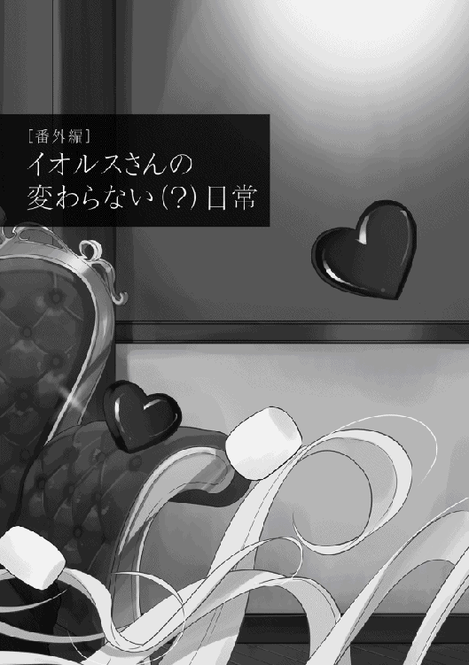
私、イオルス＝セーフィリアは魂を削る事で召喚した内野亮二さんの生涯を追い続け、この書物を完成させる。さらに彼の功績を記す事で、後の世において彼の偉業が風化する事なく、セーフィリアの世界に息づく事を願う。
「少し文章が固いですかね？」
亮二さんをセーフィリアに送り出してすぐに、神の力を使って彼の一生を書こうと気合いを入れたのはいいのですが、書くならしっかりと書きたいんですよね。
でも、誰が読む訳でもない書物を作ろうとしているのはなぜでしょうか？
「寂しいんでしょうね」
小さく呟きながら、ペンをクルクルと回します。最近は、ペン回しが上手に出来るようになってきました。
「私もセーフィリアに顕現出来ればいいんですけどね。この目で彼の勇姿を見れば、もっと細かい描写で亮二さんの活躍が書けるのに」
どうしても独り言が多くなってしまいます。神の力を以ってしても、喋れる生命体を神域に作る事は出来ませんでした。 私の子達がいるセーフィリアでのみ、知的生命体は生きられるみたいです。
だから何度か頑張って顕現を試してみましたが駄目だったんですよね。力業で無理やりに降りようとしたら、セーフィリアが軋むんですからビックリしました。強引に降り立ったら星が消滅しちゃいますよね？
「アマデオさんの時は、意識だけならセーフィリアに行けたのになあ。彼とのあてのない旅や、建国までの道のり、国の発展や彼の育児は傍で見てて、本当に楽しかった。彼みたいな人がまた出てきてくれたらいいのに。残念ながら私と亮二さんとでは、波長が微妙に合わないんですよね......」
大きなため息を吐きながら、気を取り直すために用意した紅茶をゆっくりと楽しみます。この紅茶は亮二さんの世界で偶然に見付けた飲食物の一つですよね。
そして、その世界で亮二さんとも出会えました。まさか偶然に入ったお店で、亮二さんが後ろに座っているとは思いませんでしたよ。
暑い日にホットレモネードと煮込みうどんを私が頼んだら、吹き出されたんですよね。その後で亮二さんと食べたアイスコーヒーやナポリタンは、本当に美味しかった......。
「見るのが珍しくて、たくさん頼み過ぎてお店の人もビックリしてましたね」
あの時の『まだ注文するのですか？ イオルスさん？』と言っていた亮二さんの顔は忘れられません。
その後に本屋さんに行ったり、悪者退治をしたりしましたね。その為に帰るのが早くなってしまいましたが、あれも楽しかったな。最後には別れを惜しんで口づけを......。
「ん！ ちょっと、しんみりとなりました。気分を変えるために、亮二さんの観察でもしましょうかね？ 彼はなにをしているんでしょうか？」
水晶を取り出して軽く力を注ぐと、亮二さんの姿が映し出されます。あれ？ なにかと戦ってますね。キノコのお化け？ 巣に突撃したんだ。私が用意したミスリル装備を使ってるみたいですね。
安心して戦いを見ていられます。それにしても......。
「すごい！ 完全にミスリルの剣を使いこなしてる。亮二さんからのリクエスト『異世界で生きてくのに便利な身体にしてくれ』でしたよね？ その効果かな？ 戦いが終わったみたいですね」
危なげなく、安心して見ていられた戦いは一〇分ほどで終わりました。あれ？ なにかブツブツと呟いてますね。
『なんで、キノコのお化けしか出てこないんだよ！ このままだったらキノコを極めし者って二つ名が付くんじゃね？』
「ふふっ。分かりますよ！ これはフラグですね！ さすがは亮二さん。誰もいないのに、フラグを立てるなんてさすがです！」
んん。ちょっと興奮してしまいました。なぜか亮二さんの声を聞いていると、楽しい気持ちが心に満ち溢れてきます。彼と二人でデートしたときの感情に少し似ていますね。
「よし！ 今の台詞も記録に書き残しましょう！ 『俺の事はキノコを極めし者と呼ぶがよい！』でしたよね。格好良い台詞を速攻で考えるなんて、さすがは亮二さんです！」
ペンを走らせながら、素晴らしい台詞を書き記します。そうだ！ いい事を思い付きました。後で別冊として名言集も発刊しましょう。イラスト付きで発売したらベストセラー間違いなしです。
「あれ？ なにやら揉めてますね？」
建物で亮二さんと可愛らしいエルフさんが話をしています。魔力を計る水晶を壊したみたいですね。うわぁ。亮二さんがもの凄いドヤ顔をしてます。
「『異世界でのテンプレだ！』とか、心の中で叫んでるんでしょうね。これも書き記しましょう」
『俺の力を計るには役不足だったな！ ふはははは』と、後の英雄である亮二は叫んだ。
こんな感じでしょうか？ この台詞は、名言集にも入れておきましょう。それにしても、亮二さんに注ぐエルフさんの視線は、惚れきってる目ですよね。とてもいい事です。ですが......。
「あれ？ なんでしょう？ この痛みは？」
しこりのように胸に留まっていて、時折襲ってくる小さな痛み？ 何者でしょうか？ さっき食べ過ぎたお菓子のせいですかね？
「まあ。いいです。少し休憩して、晩ご飯にしましょう。今日はカレーを食べないと」
神である私は食事をする必要はないのですが、亮二さんと食事をしてから癖になってしまいました。
こんなに美味しい食事ですから、亮二さんには是非ともセーフィリアに、日本の食事を広めて欲しいですね。
「香辛料や肉をたっぷりとストレージに入れてるのですが、彼は私の意図に気付いてくれるでしょうか？」
カレーと一緒に用意したラッシーを飲みながら思いを馳せます。亮二さんに渡したストレージには、香辛料や肉の他に野菜や果物も入ってます。
「他にも、ヒミツのフォルダを作りましたが、あのフォルダの存在は彼の眼にはどう映ってるのでしょうか？」
亮二さんとの思い出が詰まったフォルダ。彼は忘れていますが、神域以外で私と亮二さんが会った時に思い出せるようになっています。
「ふふふ。神域に来た瞬間に思い出されると、恥ずかしいですからね。いつの日か彼に会えた時に思い出話をしたいですね」
食事の余韻と思い出に耽っていたら、亮二さんが牛人と戦っているようです。あの牛人は種族の強さなら上位クラスですね。
「危ない！ そこだ！ 避けて！」
亮二さんが防御をしていると、こちらも手に汗を握って応援してしまいます。本当は亮二さんに肩入れするのは駄目なんですが、どうしても彼の動きに目がいってしまいます。
「やった！ 倒しましたよ！ さすがは私の亮二さんです！ ん？ 私の亮二さん？」
思わず口ずさんだ言葉を反芻して、赤面してしまいます。日本での最後の思い出となった、二人だけの時間まで思い出してしまいました。
「ふふふ。亮二さんの凛々しい姿は格好良かった......。じゃないです！ 亮二さんの観察ですよね。あれ？ なんで正座を？」
どうやら、カレナリエンさんに怒られているようですね。ふふっ。どうやら心配されているのに『上に上にって言い過ぎ』と、茶化したようですね。火に油を注いでますね。
「やっぱり。さらに怒られてますね。ほっぺたまでつねられてますよ。これも物語に載せましょう」
それにしてもカレナリエンさんは羨ましいですね。彼と触れ合う事が出来るなんて......。
「よし！ 私も顕現出来るように練習しましょう！」
思いついたら吉日です。いきなり私が顕現するのは無理なので、少しずつ試していきましょう。半分くらいに力を抑えて......。駄目ですね。このままだと天変地異が起こって世界が破滅しますね。
「むむ。じゃあ、十分の一まで抑えたら......。これでも駄目ですか。これ以上は力を抑えられません。世界の維持が出来なくなっちゃいます」
アマデオさんのように特異体質の人がいたら、顕現出来なくても......。いた！ 彼なら大丈夫そうですね。魔力量も多いですし質も高いようです。それに、私の信徒みたいですから、夢枕に立っても私だとすぐに分かってくれるでしょう。
「あー。あー。てすてす。聞こえますかー？ 私！ 私！ イオルスだよー」
「なっ！ その神々しいお姿は、イオルス神でしょうか？」
上手くいったようです。目の前の彼はまだ子供ですかね？ 亮二さんよりは少し年上かな？ 彼は私を見て眩しそうに、歓喜に打ち震えた表情でこちらを見ています。あまり畏まられても話しづらいですから、軽い感じでいきましょうか。
「その通りです！ 私は超絶美少女女神のイオルスさんです！ ......。あれ？ 反応が鈍い？ んん。こほん。本題に入ります！ 今ではありませんが、貴方の力が必要な時が来ます。その時は、私が貴方を呼びますので応えなさい。その見返りに、数回くらいなら力を貸してあげますよ」
「神の力が必要な危機が近々訪れると？」
あれ？ なぜか目の前の男の子が、顔面蒼白になって震えてますね。顕現する実験に、付き合って欲しいだけなんですけどね？
世界の危機と勘違いしているようですが、夢での話ですから訂正しなくても大丈夫でしょう。それに危機なんて簡単に起こる訳はないので、軽く流してしまいましょう。
「心配ありません。その時が来れば自ずと気付きます。あっ！ そうだそうだ。もう少ししたら、亮二さんの噂が耳に入ってくるでしょう。その時に動けるように、今から情報収集をした方がいいですよ。彼は世界を変える人物です」
「イオルス神が名前を挙げるほどの重要人物なのですね。分かりました！ 教会の諜報力全てを注ぎ込んで、調べておきます」
おぉ。なにかよく分かりませんが、物凄くやる気になってくれてます。これで亮二さんと会える確率が少し上がりますかね？ どうしましょう。今からワクワクしてきました。会った時にプレゼントを渡せるように、なにか作った方が良いですね！
「あの？ イオルス神？」
考え事をしていたので、黙ってしまっていました。彼が不安そうにしていますね。
「気にしないで下さい。では時間をかけ過ぎるのも良くないので、これまでとしましょう。夢で私と出会った事は、朧気ながら覚えてるはずです。その情報を元に、動く事をお勧めします。では、また会いましょう」
「あ、あの！ イオルス神！ 待って下さい。もう少し詳しく......」
男の子がなにか言おうとしてましたが、回線を切ってしまいました。また会う事は出来るので大丈夫でしょう。
「これで準備は完了です。あとは亮二さんに会った時に渡す、お菓子作りでもしましょう。生まれて初めて作るのですが私なら大丈夫です！ なぜなら神様だからです！」
よし！ 理論もポーズも台詞も完璧に決まったところで、神の力を使って道具と素材を取り寄せます。完成品を取り寄せてもいいのですが、やっぱり手作り感がないと駄目ですよね。
「このお菓子を受け取ったら、亮二さんは喜んでくれるでしょうか？」
渡した時に亮二さんから『俺のために作ってくれたのか？ 嬉しいよ！ イオルス』なんて言われたらどうしましょう？
「もう！ なに言わせるんですか！ 恥ずかしいじゃないですか！ 嫌ですよ。もう！」
ああ。恥ずかしかった。と、とりあえずチョコレートの湯煎から始めましょう。お湯が必要なんですよね？
「ああ。前に亮二さんに渡したポーションの残りがありますから、それを使いましょう。無駄の削減は大事ですからね」
あっ！ 湯煎のお湯がチョコレートの中に入ってしまいました。うぅぅ......。上手く固まらずに、駄目になってしまいました。
「よし！ ここは神の力で滑らかにしましょう！ 緊急事態だから仕方ないです」
変に固まっているチョコレートを、神の力を使って滑らかにします。緊急の場合は三秒ルール適用でＯＫなんですよね？
いい感じになってきました。後はなんでしたっけ？ ひたすら混ぜるですよね？
「よし！ 混ぜましょう！ 思いっきり......。あぁ！ 飛び散ってしまいました。ここにも三秒ルールを適用です！ 集まれ、我が名の下に！ その名はチョコレート！」
あれ？ 私の力が変に働いたのか、チョコレートが波打ちながら集まっていますね。もの凄く嫌な予感がするのは気のせいでしょうか？ 蠢いているチョコレートが突然輝き出します。
「きゃあ！ な、なに？ どうなりました？」
私のチョコレートはどこに行きました？ なぜ時空の裂け目が出来ているのでしょうか？ ひょっとしなくても裂け目にチョコが入った？ ......。
「うん！ 私はなにも見ていません！ 気分を切り替えて続きを作らないと駄目ですね。その前に時空の裂け目を応急処置で塞いでおきましょう」
時空の裂け目は、とりあえず叩いて直しました。チョコレートの量が減ってる分は、魔力で増やすとして......。
「よし。次の工程です。流し込む型はどうしましょうか？ やっぱりハート型とか？ きゃあきゃあ。な、なにを言わせるんですか！ もう！ でも、小さいハート型ならいいですよね？」
言い訳を小さく口ずさみながら、小さいハートの型抜きを用意します。これくらいの大きさなら、義理チョコ......。義理チョコに見えますよね？
「他にも作りたい物があるんですよね。亮二さんにも渡したマシュマロ！ 『ＢＢＱで軽く炙って食べると美味しい』と、亮二さんと一緒に買った本に書いてありました」
えっと。卵白を使って作るのでしたよね？ あれ？ 意外と難しいですね。膨らみません。もう一度！ 駄目です。上手くいきません。
「むむむ......。よし！ こうなったら、神の力を使って一気に大量生産をしましょう！」
上手くいかない時は三秒ルールです！ 卵白が膨らむイメージをしながら、力を注ぎ込みます。あっ！ いい感じです。躍動感がありますね。亮二さんも、これを見たら喜んでくれるでしょう。
「ん？ 躍動感？ ちょっと！ また飛び散った！ 待って！ そっちは応急処置した時空の裂け目！ 駄目！ そっちに行っちゃ駄目だって！」
ああ。マシュマロさん達がセーフィリアに旅立っていきました。あっちで大暴れとかしないですよね？
「と、とりあえずは、時空の裂け目を本格的に修復しておきましょう。それと、料理を作るのは、顕現出来てからにしましょう。神域でお菓子を作ると、なにが起こるのか予測が出来ません」
「ふぅ。やっと、後片づけが終わりました」
よく見ると、神域に残っているチョコレートとマシュマロがあります。私を慰めるように周りを飛び跳ねていて不思議な感じですが可愛いです。ふふ。名前を付けてあげましょうね。
「あなたの名前はマシュちゃんで、君はレートくんです」
わぁ。名前を付けたらマシュちゃんが白犬に、レートくんが黒猫になりました。二匹とも私に懐いてくれています。
「ふふ。可愛いですね。これで私の寂しさも少しは癒されますね」
思わぬ話し相手は出来ましたが、当初の予定とは違いますよね？
「やっぱり、魔力や神の力を使ったのが間違いだったのでしょう。次に作る時は自らの力で作らないと！」
試行錯誤する事数百回。辿り着いた結論は『お菓子作りは難しい』でした。それにしても、お菓子作りの途中で爆発したのはなぜでしょうか？ ライトノベルにあるお約束ですかね？
「超絶美少女女神の私が、調理スキルが無いのにお菓子作りをしたからでしょうか？ 最近読んだ本でも、ヒロインが料理を作ると、魔物になって主人公に襲いかかる物がありましたし......」
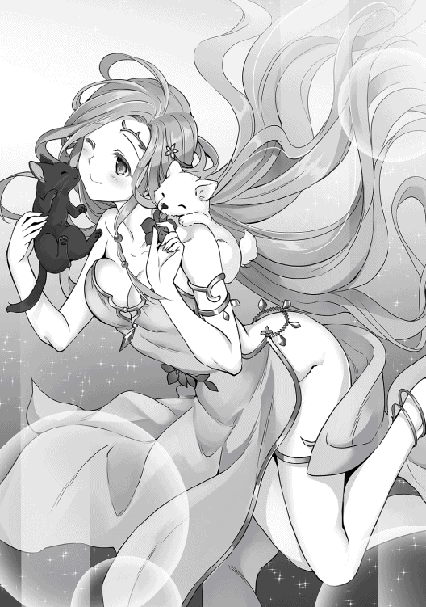
そう言えば、時空の切れ目から飛び出していったチョコレートとマシュマロは、どうなってるのでしょうね？ あの作品だと主人公に食べてもらうために、脇目もふらずに彼の元に向かっていきましたよね？
少し震えながら水晶球を起動させようとすると、マシュちゃんとレート君が心配そうにこちらを見上げています。
「だ、大丈夫ですよ。心配いりません」
優しくマシュちゃんとレート君の頭を撫でると、嬉しそうに尻尾を振ってきます。
「よし！ 亮二さんの確認をしましょう！ ん？ 姿を捉えようとしているのか、映像がブレますね」
あっ。綺麗に映りました......ね。亮二さんが超高速で戦っていますね。白い物体と黒い物体と激しい戦闘を繰り広げています。声も拾ってみましょう。
『なんで、この白いのと黒いのは、俺ばっかり襲ってくるんだよ！』
『お前の日頃の行いが悪いんじゃないか？』
『マルコ！ それは酷いぞ！』
「......。よし！ 私はなにも見てません」
水晶球に手をかざして映像を消しました。ふと視線を感じて、そちらを眺めると、こちらを非難するような目があります。私は全力で微笑みを浮かべながら話しかけます。
「マシュちゃんとレート君は見てませんよね？ なにも見てませんよね？」
なぜかプルプルと震えながら、首をカクカクと縦に振ってくれています。良かった。非難めいた目をしてたのは、私の気のせいでした。大事な事なので二回言った甲斐があります。
「ちょっと、疲れましたから、休憩しましょう。紅茶とお菓子を食べましょうかね。マシュちゃんとレート君も一緒に休憩しましょう？」
彼らの分の器を作って、そこにミルクを満たします。ああ。可愛いですね。美味しそうに飲んでくれています。
「ふふ。亮二さんへのお菓子も彼のストレージに入れましたし、次はなにをしましょうかね？」
お菓子と呟いたときに、マシュちゃんとレート君が一瞬固まって、震えたように見えましたが、気のせいでしょう。
ふふふ。早く、顕現出来るようにならないと。亮二さんと、ゆっくりお喋りがしたいですからね。手作りお菓子もいっぱい作って、紅茶も用意しなくっちゃ。
半年ぶりでございます。羽智遊紀です。無事に二巻が発売されました。これも皆さんのお陰です。本当に感謝感謝です。特に友達に「お父さんが本を書いてん！」と勧めてくれた息子達。知り合いの奥様方に名刺配りをしてくれて、発売日までのカウントダウンイラストも描いてくれた奥さん。貴方達の頑張りで近所の本屋さんでは大ヒットを記録し、生れて初めてお勧めポップを書いてもらえました。本当にありがとうございます書店員のＩさん。最初に見た時は感動で震えてしまいました。
様々な方から応援して頂いている本作ですが、二巻では異世界テンプレのお姫様であるエレナが登場します。彼女は偶然ドリュグルの街に訪れており、牛人を討伐した亮二くんの話を聞いて『物語の主人公だ』と憧れを抱きます。その後、スイーツで虜になり、カバーイラストにもあるようにメイド服も着たりしながら憧れが徐々に変化していきます。当初のプロットでは典型的なお姫様でしたが、Ｗｅｂ版では性格は変わっていないはずなのに、イメージだけが変わっていきます。まさか、あんなキャラになるとは！（ほら、続きが読みたくなってきたでしょ？）
その他のヒロインについてですが、カレナリエン、メルタやシーヴにエレナだけでなく、この後も次々と登場します。その中の一人はチョイ役での登場予定だったのが、読者様からの感想でヒロインに昇格しています（ほら、誰だか気になってきましたよね？）。そして、担当のルナさんお気に入りの神さまイオルス。彼女は今回も巻末書き下ろしに主役として登場してもらいました。慣れない一人称で悪戦苦闘しましたが、彼女の可愛さを十分に出せたのでは？ と、自画自賛しております。それにマルコがそろそろ神具を手に......（読みたくなって......特になりませんね）。
最後に謝辞を。前巻に引き続き、素晴らしいイラストを描いて下さったｍｉｙｏ．Ｎさん。この本は貴方様のイラストが無ければ完成しません。それと「今回こそは！」と意気込んで提出したにもかかわらず、ツッコミ（校正）を全力で入れて下さった校正者さん。完敗です。次こそは負けません！ 毎度の事ながら迷惑を掛けている担当のルナさん。巻末書き下ろしはルナさんに捧げるつもりで書いております（嘘です）。そして、忘れるはずもない読者の皆様。Ｗｅｂ版では私より面白い感想や、誤字脱字報告。次のストーリーの予測など、毎回楽しみにしております。そして、Ｗｅｂ版を知らずに本作を手に取って下さった方。本当にありがとうございます！
亮二くんのドタバタ劇はまだまだ続きますが、引き続き応援して頂けると嬉しいです。
皆様に幸せが満ち溢れますように。
著者プロフィール
羽智 遊紀
Uchi Yuki
怒濤のごとく１巻が発売され、２巻もめまぐるしく日々が流れてく中で発売が決まりました。相変わらず『ノリと勢い』で書いていますが、亮二くんのドタバタ喜劇を楽しんで下さい！
ｍｉｙｏ．Ｎ
ファンタジー世界に魅入られて早十数年......お約束なテンプレ展開に「あるある」思いつつ、魅力的なキャラクター達に囲まれてファンタジー生活をエンジョイしたいと思います。応援よろしくお願い致します。
異世界は幸せ（テンプレ）に満ち溢れている２
2017年６月１日発行 ver.1.1
著 者 羽智遊紀
発行所 TOブックス
〒150-0045 東京都渋谷区神泉町18-８
松濤ハイツ２Ｆ
03-6452-5678（編集）
0120-933-772（営業フリーダイヤル）
Ⓒ2017 Yuki Uchi
※無断で複製・複写・データ配信などをすることは、かたくお断りいたします。
本電子書籍は下記にもとづいて制作しました
異世界は幸せ（テンプレ）に満ち溢れている２
発行日 2017年５月１日 第１刷発行
本作品の全部または一部を無断で複製、転載、配信、送信したり、ホームぺージ上に転載することを禁止します。また、本作品の内容を無断で改変、改ざん等を行うことも禁止します。
本作品購入時にご承諾いただいた規約により、有償・無償にかかわらず本作品を第三者に譲渡することはできません。
本作品を示すサムネイルなどのイメージ画像は、再ダウンロード時に予告なく変更される場合があります。
本作品は縦書きでレイアウトされています。
また、ご覧になるリーディングシステムにより、表示の差が認められることがあります。